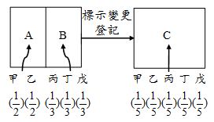
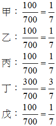
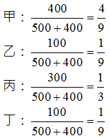
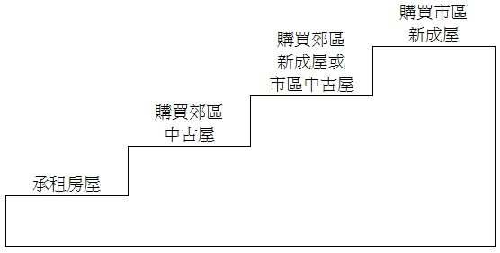
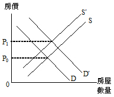

年度合輯：2021 年¶
共收錄 100 篇文章。
1. 預售屋買賣定型化契約應記載及不得記載事項部分規定修正整理¶
發布日期: 2021-01-07
各位同學好
本日專欄為各位說明有關109年12月25日內政部修正「預售屋買賣定型化契約應記載及不得記載事項部分規定」，其中涉及土地持分面積計算之內容：
※原本規定：壹、應記載事項四、房地出售面積及認定標準(一)土地面積：買方購買「＿」＿戶，其土地持分面積＿平方公尺(＿坪)，應有權利範圍為＿，計算方式係以主建物面積＿平方公尺(＿坪)占區分所有全部主建物總面積＿平方公尺(＿坪)比例計算(註：如有停車位應敘明車位權利範圍或以其他明確計算方式列明)，如因土地分割、合併或地籍圖重測，則依新地號、新面積辦理所有權登記。
※修正規定：壹、應記載事項四、房地出售面積及認定標準(一)土地面積：買方購買「＿」＿戶，其土地持分面積＿平方公尺（＿坪），應有權利範圍為＿，計算方式係以專有部分面積＿平方公尺（＿坪）占區分所有全部專有部分總面積＿平方公尺（＿坪）比例計算（註：或以其他明確之計算方式列明），如因土地分割、合併或地籍圖重測，則依新地號、新面積辦理所有權登記。
根據民法第799條第4項規定：「區分所有人就區分所有建築物共有部分及基地之應有部分，依其專有部分面積與專有部分總面積之比例定之。但另有約定者，從其約定。」惟其計算基地應有部分權利之基礎，為「區分所有人之專有部分面積」，並不包含因購買約定專用而取得之「專用權」面積部分，例如購買地下室法定停車位之專用權，由於專用權人並未額外取得區分所有建築物之專有部分，自無從就該約定專用部分，主張依民法第七百九十九條第四項規定分配基地權利範圍，為避免就購買共有部分之停車位誤解得主張再行分配登記土地權利範圍，爰刪除第一款「如有停車位應敘明車位權利範圍」。
簡單來說，區分所有權人某甲之土地持分，應以其「專有部分」（包含主建物與附屬建物）佔全部區分所有建物專有部分的比例計算，而預售物的法定停車位是以共有部分登記，購買後屬於約定專有，僅取得專用權，非取得專有部分而不會有獨立權狀，故不會因為某甲多買幾個車位，其土地持分就跟著變多。¶
注：本文圖片存放於 ./images/ 目錄下
2. 共有土地之分割與合併（上）¶
發布日期: 2021-01-07
茲分土地登記、土地增值稅及土地法第34條之1多數決等三方面說明。
• (一) 土地登記：
- 共有土地分割：共有土地分割如涉及標示變更（即標示分割）及權利變更（即權利分割），應先辦理標示變更登記，再辦理所有權移轉登記。如甲、乙二人共有一筆A地，應有部分各二分之一，今擬將A地分割為B地及C地，B地歸甲所有，C地歸乙所有。辦理過程如下：
[圖片1]
首先，申請土地複丈，將A地一筆地號分割為B地與C地二筆地號，並辦理標示變更登記。辦竣後，B地及C地之權利範圍分別為甲應有部分二分之一，乙應有部分二分之一。接著，辦理所有權移轉登記，B地之乙的二分之一移轉於甲，C地之甲的二分之一移轉於乙。最後，甲取得B地之所有權全部，乙取得C地之所有權全部。綜上，共有土地分割如涉及標示變更及權利變更，應分兩階段辦理登記。亦即，先辦理標示變更登記，再辦理所有權移轉登記（詳土地登記規則第105條）。須注意者，共有土地分割如僅涉及標示變更而未涉及權利變更，則僅辦理標示變更登記；如僅涉及權利變更，而未涉及標示變更，則僅辦理所有權移轉登記。
- 共有土地合併：共有土地合併，不問有無涉及權利變更，僅辦理標示變更登記。如甲、乙二人共有一筆A地，應有部分各二分之一，丙、丁、戊三人共有一筆B地，應有部分各三分之一，今擬將A地與B地合併為C地，應有部分各五分之一。辦理過程如下：
[圖片2]
上例，共有土地合併涉及標示變更（即標示合併）及權利變更（即權利合併），因無法分兩階段辦理登記，故僅辦理標示變更登記，無須辦理所有權移轉登記。
文章圖片¶


3. 視為已依土地法辦理土地總登記¶
發布日期: 2021-01-14
土地總登記，謂於一定期間內就直轄市或縣(市)土地之全部為土地登記(土§38)。土地總登記為所謂第一次登記，必先為總登記後，始得為移轉登記(46判第64號)，故當初台灣光復後，政府即劃設登記區，要求土地權利人於一定期間內，要辦理土地總登記，其目的在於查明並確定土地權利，建立地籍管理基礎，以利國家建設，推行土地政策，以及維護社會交易安全。
然而，土地法施行前，業經辦竣土地登記之地區，在土地法施行後，於期限內換發土地權利書狀，並編造土地登記總簿者，視為已依土地法辦理土地總登記(土施§11)，此又為何意？
主要因台灣於日據時期，日本政府即曾實施地籍測量與土地登記，地籍資料已有基礎，而於民國34年10月12日台灣光復，土地登記自該日起即依照我國民法、土地法等法律開始施行。故日據時期的測量與登記屬於「土地法施行前業經辦竣土地登記者」，這些已辦竣登記的地區且有相關權利憑證，為節省總登記辦理時間，實際上只要確認他權利憑證無誤，就算可證明其土地權利，而不需要跑土地總登記的流程。
因此，於35年11月26日經行政院通過「台灣地籍釐正辦法」，為台灣釐整地籍之依據，其中，第4條規定，在光復前日本政府已辦不動產登記之區域，不動產權利人應將所持登記證書（日本法院所發之不動產登記濟證、各州廳所發關係該土地之謄本、最近三年內任何一年地租收據）向主管地政機關繳驗，經審查公告無異議後，換發土地所有權狀，或他項權利證明書，並編造登記簿。……依照第一項規定，換發土地權利書狀之地區，視為已依土地法辦理土地總登記。」而後於36年5月2日發布「台灣省土地權利憑憑證及換發權利書狀辦法」，規範如何換發權狀。
政府即根據土地法及上開兩種辦法，就日據時期已辦竣不動產登記或未登記而經地籍測量登錄於土地台帳之公私有土地，開始辦理土地權利憑證繳驗申報，由縣市地政機關經過收件、審查、公告等法定程序後，隨即據以登記，編造土地登記總簿，並於36年7月起換發權利書狀，作為權利人之權利憑證。此稱為「視為已依土地法辦理土地總登記」。¶
注：本文圖片存放於 ./images/ 目錄下
4. 共有土地之分割與合併（中）¶
發布日期: 2021-01-14
• (二) 土地增值稅：一般而言，標示變更登記應先申請土地複丈，所有權移轉登記應先繳納土地增值稅。
-
共有土地分割：共有土地分割如僅涉及標示變更，不徵土地增值稅。但如涉及權利變更，土地增值稅課徵規定如下：
-
分別共有土地分割後，各人所取得之土地價值與其分割前應有部分價值相等者，免徵土地增值稅。土地價值之計算，以共有土地分割時之公告土地現值為準（土地稅法施行細則第42條第2項及第5項）。
-
分別共有土地分割後，各人所取得之土地價值與其分割前應有部分不相等者，其價值減少，就其減少部分課徵土地增值稅（土地稅法施行細則第42條第2項）。其納稅義務人（司法院釋字第173號）如下：
-
共有土地之分割，共有人因分割所取得之土地價值，與依其應有部分所算得之價值較少而未受補償時，自屬無償移轉之一種，應向取得土地價值增多者，就其增多部分課徵土地增值稅。
-
共有土地之分割，共有人因分割所取得之土地價值，與依其應有部分所算得之價值較少而受有補償時，自屬有償移轉之一種，應向取得土地價值減少者，就其減少部分課徵土地增值稅。
-
共有土地合併：共有土地合併，雖僅辦理標示變更登記，其土地增值稅課徵規定如下
-
土地合併後，各共有人應有部分價值與其合併前之土地價值相等者，免徵土地增值稅。土地價值之計算，以土地合併時之公告土地現值為準（土地稅法施行細則第42條第4項及第5項）。
-
土地合併後，各共有人應有部分價值與其合併前之土地價值不相等者，其價值減少，就其減少部分課徵土地增值稅（土地稅法施行細則第42條第4項）。其納稅義務人（司法院釋字第173號）如下：
-
土地合併後，共有人應有部分價值，與依其合併前之土地價值減少而未受補償時，自屬無償移轉之一種，應向取得應有部分價值增多者，就其增多部分課徵土地增值稅。
2. 土地合併後，共有人應有部分價值，與依其合併前之土地價值減少而受有補償時，自屬有償移轉之一種，應向取得應有部分價值減少者，就其減少部分課徵土地增值稅。¶
注：本文圖片存放於 ./images/ 目錄下
5. 雙地政士制¶
發布日期: 2021-01-21
各位同學好
今日專欄為各位說明有關雙地政士制度：
以往習慣多僅由買方單獨委託一名地政士代理買賣案件，但時常發生地政士聯合買方詐騙賣方之情形，為避免發生此情形，買賣雙方在交易過程中，能夠各找一位他們能信任的合法專業地政士，即雙地政士，共同來參與契約制訂及買賣流程的溝通，除保障不動產買賣雙方當事人權益，相互監督箝制，同時也能避免過程中的錯誤，以及增進不動產交易效率。
雙地政士指交易案件之當事人為雙方或多方，同時各自委託地政士執行業務，合力完成案件。其中，分為主與從，主辦地政士指不動產交易時，主辦交易相關事宜之地政士。其主辦事項，以買賣為例，如產權調查、撰寫契約、核章用印、證件之保管與交付、申報稅捐、申請登記、控管履約等事項。至於協辦地政士則依其委託人之指示，秉其專業，進行查調產權、追蹤查核案件之地政士。
參考：中華民國地政士公會全國聯合會，107.12.14，雙地政士制度執行業務準則¶
注：本文圖片存放於 ./images/ 目錄下
6. 共有土地之分割與合併（下）¶
發布日期: 2021-01-21
• (三) 土地法第34條之1多數決：
-
共有土地分割：茲分標示分割與權利分割分別說明：
-
標示分割：標示分割屬於土地法第34條之1第1項所稱「變更」，故標示分割得適用土地法第34條之1多數決。
-
權利分割：權利分割雖屬處分行為，惟多數人代理少數人決定分割後所分配之土地位置，難謂公平合理；況共有土地無法協議分割，尚得聲請法院裁判分割。因此，權利分割不得適用土地法第34條之1多數決。
-
共有土地合併：土地法第三十四條之一執行要點第5點第1項規定：「共有土地或建物標示之分割、合併、界址調整及調整地形，有本法條之適用。」準此，共有土地之合併得適用土地法第34條之1多數決
二宗以上所有權人不相同之共有土地或建物，依土地法第34條之1規定申請合併，應由各宗土地或建物之共有人分別依土地法第34條之1規定辦理（土地法第三十四條之一執行要點第5點第2項）。又，申請合併之共有土地地價不一者，合併後各共有人之權利範圍，應以合併前各共有人所有土地之地價與各宗土地總地價之和之比計算，並不得影響原設定之他項權利（土地法第三十四條之一執行要點第8點第7款）。如甲、乙、丙三人共有一筆A地，應有部分各三分之一，A地公告土地現值300萬元，丁、戊二人共有一筆B地，丁之應有部分四分之三，戊之應有部分四分之一，B地公告土地現值400萬元。今擬將A地與B地合併為一筆C地，甲、乙、丁三人同意，丙、戊二人反對，則A地之同意共有人數超過二分之一，應有部分超過二分之一，符合土地法第34條之1第1項多數決門檻；B地之同意共有人應有部分超過三分之二，人數不計算，亦符合土地法第34條之1第1項多數決門檻。因此，A地與B地之合併得適用土地法第34條之1多數決。合併後之C地應有部分如下：[圖片1]
上例之合併，依土地稅法施行細則第42條第4項規定，不徵土地增值稅。總之，共有土地合併，不論標示合併或權利合併，皆得適用土地法第34條之1多數決。惟合併後各共有人之權利範圍，應以合併前各共有人所有土地之地價與各宗土地總地價之和之比計算。
文章圖片¶

7. 土地徵收完全補償與相當補償之差異¶
發布日期: 2021-01-28
各位同學好
土地徵收補償除了填補特定人因土地徵收所受損害，另有調合公私益衝突之作用。學術理論上有三說，茲比較如下表所示：
| 面向 | 相當補償(實務) | 完全補償(學者) | 折衷說 |
|---|---|---|---|
| 性質 | 財產權性質 | 生存權性質 | 兼具 |
| 定義(範圍) | 指依社會一般觀念，以客觀、公平、妥當之方法， 填補被徵收人財產上所受損害之補償 |
使被徵收人之生活能夠重新建立， 包含填補積極與消極之損失， 期使被徵收人能回復被徵收前之生產力形態 |
視情況而給予完全補償或相當補償 |
| 立場 | 依社會一般概念，衡量公益與私益， 基於土地具高度之社會性，給予相當合理之補償 |
基於財產權不可侵犯原則及平等原則， 因徵收所生之不平等，應充分使其回復平等， 使被徵收人之生活能夠重新建立，基於所有權人之立場， 予以完全補償 |
就徵收標的之性質或目的予以區分： 對具有財產性質土地之徵收，則予以相當補償， 對具有生存性質土地之徵收， 應予完全之補償 就徵收類型予以區分：對於公用徵收， 採完全補償；對政策性之徵收，採相當補償 |
| 補償基準 | 市價補償乃指「按被徵收土地原使用性質與當地使用性質 相同之一般買賣價格」，即以客觀的市場價值來衡量 |
應以被徵收者的主觀價值為依據 | 視情況而定 |
| 相關司法院釋字 | 409、425、516 | 579：國家應給予合理之補償， 且補償與損失必須相當（此一文句不排除可解為要求完全 補償之意(陳仲嶙)） |
－ |
資料來源：陳立夫；溫豐文；楊松齡；魏均芸
注：本文圖片存放於 ./images/ 目錄下
8. 發展權¶
發布日期: 2021-01-28
• (一) 發展權國有與發展權私有發展權，指在土地上從事興建發展之權利。發展權歸屬，分為發展權國有與發展權私有二種。
-
發展權國有：指發展權屬於公共領域，歸屬國家所有。如英國曾實施「發展權國有」，此發展權為國有。
-
發展權私有：指發展權屬於私人領域，歸屬私人所有。如美國曾實施「發展權移轉」，此發展權為私有。
• (二) 容積移轉、容積獎勵及容積代金國外之發展權相當於我國之容積（容積是由建蔽率、容積率、建物高度等構成）。目前我國實施之容積移轉、容積獎勵及容積代金，其容積性質不同，茲分述如下：
-
容積移轉：公共設施保留地、古蹟等土地所有人將其土地之容積，買賣移轉至其他可建築土地供建築使用，俾使限制發展之土地獲得合理補償。準此，容積移轉之容積，屬於私人領域，故發展權（即容積）私有。詳如都市計畫容積移轉實施辦法、古蹟土地容積移轉辦法等。
-
容積獎勵：政府將屬於公共領域之容積，贈與私人，以鼓勵特定土地使用（如都市更新、危老重建等），落實外部利益內部化。準此，容積獎勵之容積，原屬於公共領域，故發展權（即容積）國有。詳如都市更新建築容積獎勵辦法、臺北市建築物增設室內公用停車空間供公眾使用鼓勵要點等。
-
容積代金：私人向政府購買屬於公共領域之容積，以提高其土地使用強度。政府再將其收入，專款專用，用於取得公共設施保留地。準此，容積代金之容積，原屬於公共領域，故發展權（即容積）國有。詳見都市計畫容積移轉實施辦法第9條之1。
• (三) 分區管制與發展權之關係都市土地使用分區管制是在界定私人財產權範圍，允許私人擁有土地既有發展權（即現行土地使用類別及土地使用強度），至於未來發展權（即超過分區管制部分）置於公共領域，屬於國家所有。發展權界定清楚後，藉著市場力量，達到土地資源最有效率之配置。都市土地使用分區管制是新制度經濟學所稱之「制度」。制度就是遊戲規則，具有可預測性，可以避免不確定性，有效降低交易成本，使得土地資源更有效率之配置。
• (四) 平均地權、發展權國有及分區管制之產權構想平均地權制度以「地價」劃分公私有財產，發展權國有制度以「發展權」劃分公私有財產，分區管制制度以「容積」劃分公私有財產，三者有異曲同工之妙。
-
平均地權制度：孫中山先生提出之「平均地權」制度，以規定地價（地價永以為定）劃分私有財產與公有財產之界線。規定地價以前之地價歸屬私有財產，規定地價以後之漲價歸屬公有財產。
-
發展權國有制度：英國實施之「發展權國有」制度，以實施日劃分私有財產與公有財產之界限。實施日以前，已在土地上發展之權利歸屬私有財產；實施日以後，未來在土地上發展之權利歸屬公有財產。
3. 分區管制制度：我國實施之「分區管制」制度，以容制管制劃分私有財產與公有財產之界線。土地既有之容積歸屬私有財產，土地未來增加之容積歸屬公有財產。¶
注：本文圖片存放於 ./images/ 目錄下
9. 繼承尚有房貸未還清的房地之房地合一稅¶
發布日期: 2021-02-04
各位同學好
今日專欄主要說明有關房地合一稅制下，如繼承尚有貸款餘額的房地，該如何課稅？
以往倘若繼承尚有房貸未還清的房地，因用不到而立即出售，可能會遇到出售所得，扣除需償還的房貸，以及繳納房地合一稅等稅費，反而出現倒賠情形，出現不少爭議。
舉例而言，某甲108年2月繼承其父同年1月購入房地(繼承時房地現值合計300萬元)，併同繼承其父所遺該房地貸款餘額800萬元，某甲109年3月以1,000萬元出售該房地時(必要費用為0；108年至109年物價指數未調整；土地漲價總數額100萬元)，係適用房地合一新制，如何計算房地之課稅所得？答：
• 一、未扣除該貸款餘額（2020.7.15財政部核釋前）
-
房地交易所得＝售價1,000萬元－繼承時房地現值300萬元＝700萬元
-
應課稅所得＝房地交易所得700萬元－土地漲價總數額100萬元＝600萬元
-
房地合一稅＝600萬元×35%（持有期間1年多）＝210萬元
-
出售房地所得1000萬元，償還800萬貸款，再繳納房地合一稅210萬，反而要繼承人倒賠10萬元。該情形不合理，需到國稅局主張依實質課稅調整，但難免出現許多爭議。
• 二、扣除該貸款餘額（2020.7.15財政部核釋後）
財政部核釋個人交易繼承取得房屋及土地併同繼承貸款餘額應如何課徵所得稅規定(2020-07-15)個人繼承房屋及土地(下稱房地)時，併同繼承被繼承人所遺以該房地為擔保向金融機構抵押貸款之未償債務餘額(下稱貸款餘額)者，嗣交易該房地，依所得稅法第14條第1項第7類第2款(下稱舊制)規定計算房屋之財產交易所得或依同法第14條之4第1項(下稱房地合一新制)規定計算房地交易所得時，該貸款餘額超過繼承時房屋評定現值及公告土地現值合計數(下稱房地現值)，且確由該個人實際負擔償還部分，得自房地交易所得中減除。財政部說明，個人繼承房地時，如併同繼承被繼承人所遺貸款餘額，應整體衡量其繼承取得房地之經濟實質，該貸款餘額超過因繼承而無償取得之房地價值(即繼承時之房地現值)部分，屬其因繼承該房地所產生之額外負擔，未來出售該房地時，無論係依舊制或房地合一新制規定計算交易所得，該額外負擔得自交易所得中減除，以核實計算交易所得，俾符實質課稅原則及量能課稅原則。
亦即前述案例要依下列方式計算：
-
房地交易所得＝售價1,000萬元－繼承時房地現值300萬元＝700萬元
-
繼承取得房地之額外負擔＝實際負擔貸款餘額800萬元－繼承時房地現值300萬元＝500萬元
-
應課稅所得＝房地交易所得700萬元－額外負擔500萬元－土地漲價總數額100萬元＝100萬元
-
房地合一稅＝100萬元×35%（持有期間1年多）＝35萬元
-
出售房地所得1000萬元，償還800萬貸款，再繳納房地合一稅35萬，尚還有165萬的現金餘額。
條件包含：
-
繼承人必須同時繼承該筆房地及其貸款。
-
貸款餘額僅限金融貸款適用，私人借貸不包含在內。
-
貸款必須是由繼承人實質負擔償還。
4. 債務餘額需大於公告土地現值及房屋評定現值合計額才適用。¶
注：本文圖片存放於 ./images/ 目錄下
10. 土地法第34條之1有關土地合併之實例研習¶
發布日期: 2021-02-04
• A. 地與B地相毗鄰，A地之公告土地現值為500萬元，B地之公告土地現值為400萬元。A地由甲、乙二人共有，甲之應有部分為五分之四，乙之應有部分為五分之一。B地由丙、丁二人共有，丙之應有部分為四分之三，丁之應有部分為四分之一。今，A地與B地擬進行合併，甲、丙二人同意，乙、丁二人反對，則依土地法第34條之1進行合併是否可行？又，合併後各共有人之應有部分為何？
【解答】
• (一) 土地法第三十四條之一執行要點第5點第2項規定：「二宗以上所有權人不相同之共有土地或建物，依本法條規定申請合併，應由各宗土地或建物之共有人分別依本法條規定辦理。」準此，就A地而言，甲同意，乙不同意，同意之應有部分已超過三分之二，人數可以不計算；就B地而言，丙同意，丁不同意，同意之應有部分已超過三分之二，人數可以不計算。是故，A地與B地得依土地法第34條之1多數決進行合併。
• (二) 土地法第三十四條之一執行要點第8點第7款規定；「申請合併之共有土地地價不一者，合併後各共有人之權利範圍，應以合併前各共有人所有土地之地價與各宗土地總地價之和之比計算，並不得影響原設定之他項權利。」準此，合併後，各共有人之應有部分如下：[圖片1]
文章圖片¶

11. 照價收買究竟屬於原始取得還是繼受取得？¶
發布日期: 2021-02-09
原始取得，又稱固有取得、最初取得，指非基於他人既有權利之讓與，而是創設取得所有權（權利的絕對發生），且不繼受前手權利瑕疵，亦即土地上所有負擔因原始取得而歸於消滅。如土地因河道變遷自然增加、土地徵收等。
繼受取得，又稱傳來取得、轉手取得，指依據他人既有權利之讓與而取得所有權（權利的相對發生），而繼受前手權利瑕疵，亦即承受他人土地之原有負擔。如買賣、繼承、市地重劃分配取得等。
惟照價收買究竟屬於原始取得還是繼受取得呢？此部分學說上有些爭議：
• (一) 照價收買屬於原始取得類似土地徵收，依法規定由政府強制取得所有權，應屬原始取得。
• (二) 照價收買屬於繼受取得
- 目的：土地徵收為需用土地人創設新權利，使其取得供特定公益事業使用土地，而照價收買側重對土地所有權人權利之剝奪，故兩者不同。
2. 保障：依平均地權條例第34條規定，照價收買之土地，地上建築改良物不屬土地所有權人所有者，不需一併收買。又平均地權條例施行細則第48條規定，照價收買之土地建有房屋時，得讓售與地上權人、土地承租人或房屋所有權人，故可解釋為權利繼續存續，而屬繼受取得。¶
注：本文圖片存放於 ./images/ 目錄下
12. 優先購買權實例研習¶
發布日期: 2021-02-18
甲、乙、丙三人共有A地，應有部分均等；甲另外擁有B地，設定地上權予丁。今，甲欲出售A地之應有部分及B地，試問乙、丙、丁得主張何種權利？乙、丙、丁所主張之權利在本質上有何不同？
【解答】
• (一) 乙、丙、丁依土地法之規定可以主張優先購買權。茲分述如下：
-
土地法第34條之1第4項規定：「共有人出賣其應有部分時，他共有人得以同一價格共同或單獨優先承購。」準此，乙、丙得依土地法第34條之1第4項主張優先購買權。
-
土地法第104條第1項前段規定：「基地出賣時，地上權人、典權人或承租人有依同樣條件優先購買之權。」準此，丁若在甲之土地上有房屋存在，得依土地法第104條主張優先購買權。
• (二) 優先購買權之本質不同：
- 乙、丙之優先購買權具有債權效力。亦即，出賣人甲未通知優先購買權人乙、丙，而為所有權之移轉登記者，其移轉登記仍然有效，此時優先購買權人乙、丙僅得向出賣人甲請求損害賠償。
2. 丁之優先購買權具有物權效力。亦即，出賣人甲未通知優先購買權人丁，而為所有權之移轉登記者，優先購買權人丁得主張移轉登記無效。¶
注：本文圖片存放於 ./images/ 目錄下
13. 多數決與優先購買之立法目的¶
發布日期: 2021-02-25
各位同學好
今日專欄為各位同學說明有關土地法第34條之1多數決與優先購買立法目的之差異：
土地法34條之1第1項多數決：便利不動產所有權之交易，解決共有不動產之糾紛，促進共有物之有效利用，增進公共利益(釋字§562)。避免土地這樣的稀有資源在不利的產權結構下，無法透過交易而發揮最大的資源效益(蘇永欽)。因此，多數決主要是比較偏向公益性的目的，以求提升共有土地之利用效率。
土地法34條之1第4項優先購買：在於防止共有不動產應有部分落於外人之手，以限制共有人人數增加，簡化或消滅共有關係。因此，其著重共有人之間原本複雜權屬關係之簡化，較偏向私益性之立法目的。
尤其，常常有同學會將多數決的目的寫成簡化或消滅共有關係，依據一些老師之看法，兩者不宜混淆：按土地法34條之1第1項係去除「目前多數共有人認為其無法妥適利用共有不動產」的弊端，而共有人依多數決出賣共有不動產全部時，並不論買受人為一人或數人，因此，多數決應無簡化或消滅共有關係的立法意旨。如認為該條項的目的在於簡化或消滅共有關係，反而可能會減少共有不動產出賣的可能性。(黃健彰、陳立夫)¶
注：本文圖片存放於 ./images/ 目錄下
14. 土地法第34條之1實例研習¶
發布日期: 2021-02-25
甲、乙二人共有A地，甲之應有部分為三分之二，乙之應有部分為三分之一。今，甲擅自將A地出賣於丙，其效力如何？乙得否依據該契約請求丙給付價金？丙得否依據該契約請求乙移轉A地所有權？另，甲擅自將A地處分於丙，其效力如何？
【解答】
• (一) 法律行為分為負擔行為（即債權行為）與處分行為（即物權行為）。土地法第34條之1第1項所稱處分，指處分行為而言。因此，甲擅自將A地出賣於丙，買賣係屬債權行為，不以有處分權為必要，故買賣契約（即債權行為）有效。日後，甲無法履約，應自負債務不履行責任。
• (二) 乙並非買賣契約之當事人，乙與丙之間既無債權債務關係，因此乙不得依據該契約請求丙給付價金。同理，丙不得依據該契約，請求乙移轉A地所有權。
• (三) 甲同意出售，乙不同意出售，同意之人數剛好為二分之一而未超過二分之一，同意之應有部分剛好為三分之二而未逾三分之二，不符合土地法第34條之1第1項同意之門檻（同意門檻有二種情形：①人數超過1/2，持分超過1/2；②持分超過2/3，人數不計），故甲之處分行為（即物權行為）無效。¶
注：本文圖片存放於 ./images/ 目錄下
15. 以房養老政策¶
發布日期: 2021-03-04
各位同學好，今日專欄來談談在高齡化的人口結構變遷趨勢下，以房養老政策之概念：
以房養老，即「不動產逆向抵押貸款」，指銀行讓沒有固定收入的高齡者，以自己名下房屋向銀行辦理貸款，終身按月領取固定生活費（定期養老金），以借款人往生為到期日（即「活多久、領多久」），待其身故後，房屋則由銀行收回處置。（目前主要辦理方式是政府出資、銀行代辦）
• (一) 優點
-
高齡化與少子化趨勢下，房產繼承不再是唯一目的。
-
有錢安享晚年：老有所養，具有穩定生活收入，老年生活具有一定品質。
-
在宅老化：繼續住自己家，不用付租金，住得安心。
• (二) 缺點
-
人均餘命不斷延長，銀行承擔風險過大（故目前多是政府作為出資保證人）。
-
中低收入戶擁有的房產屋況不佳，使銀行鑑價價格低，與屋主預期落差大。
-
和民眾消費、投資習慣不同。
4. 法定繼承人若想取回房產，需支付銀行已借款項含利息支出，方可贖回房產。¶
注：本文圖片存放於 ./images/ 目錄下
16. 土地徵收補償實例研習(一)¶
發布日期: 2021-03-04
甲於乙之A地上設定地上權。甲於是在A地上建築二棟建物，一棟為合法房屋，另一棟為違建房屋，另於A地之周邊種植果樹數株。最近，A地經都市計畫通盤檢討，變更為學校預定地，並由主管機關進行徵收，請問甲可以請求何種補償？如何查估其價格？
【解答】
• (一) A地上之地上權：被徵收之土地原設定之地上權因徵收而消滅。其款額計算，該管直轄市或縣（市）主管機關應通知當事人限期自行協議，再依其協議結果代為清償；協議不成者，其補償費存入土地徵收補償費保管專戶。
• (二) A地上之合法房屋：
-
建築改良物之補償費，按徵收當時該建築改良物之重建價格估定之。
-
建築改良物之補償費，由直轄市或縣（市）主管機關會同有關機關估定之。
-
被徵收土地或土地改良物應受之補償費發給完竣後，直轄市或縣（市）主管機關應通知土地權利人或使用人限期遷移完竣。徵收範圍內應遷移之物件逾期未遷移者，由直轄市或縣（市）主管機關或需用土地人依行政執行法執行。
• (三) A地上之違建房屋：違建房屋於徵收土地公告期滿後，由該管直轄市或縣（市）主管機關通知其所有權人或使用人限期遷移或拆除之，不予補償；屆期不拆遷者，由該管直轄市或縣（市）主管機關會同有關機關逕行除去。
• (四) A地上之果樹：
-
農作改良物之補償費，於農作改良物被徵收時與其孳息成熟時期相距在一年以內者，按成熟時之孳息估定之；其逾一年者，按其種植及培育費用，並參酌現值估定之。
-
農作改良物之補償費，由直轄市或縣（市）主管機關會同有關機關估定。
3. 被徵收土地或土地改良物應受之補償費發給完竣後，直轄市或縣（市）主管機關應通知土地權利人或使用人限期遷移完竣。徵收範圍內應遷移之物件逾期未遷移者，由直轄市或縣（市）主管機關或需用土地人依行政執行法執行。¶
注：本文圖片存放於 ./images/ 目錄下
17. 不得申請時效取得之客體¶
發布日期: 2021-03-11
法規可能已修正
本文發布（2021-03-11）後，文中引用的 土地法第14條（2024-08-07 修正）有修正，內容可能與現行規定不同，請以全國法規資料庫的現行條文為準。
各位同學好，今日專欄說明有關時效取得地上權之相關概念。
所謂時效取得地上權，係依據民法第770條，準用民法第769與770條之規定，以行使地上權之意思，二十年間和平、公然、繼續在他人土地之上下有建築物或其他工作物，得請求登記為地上權人；抑或以行使地上權之意思，十年間和平、公然、繼續在他人土地之上下有建築物或其他工作物，而其占有之始為善意並無過失，得請求登記為地上權人。
但是，即使符合上述規定要件，仍有一些土地是無法主張時效取得的，根據時效取得地上權登記審查要點第3點規定，占有人占有土地有下列情形之一者，不得申請時效取得地上權登記：
（一）屬土地法第十四條第一項規定不得私有之土地。（二）使用違反土地使用管制法令。（三）屬農業發展條例第三條第十一款所稱之耕地。（四）其他依法律規定不得主張時效取得。¶
注：本文圖片存放於 ./images/ 目錄下
18. 土地徵收補償實例研習(二)¶
發布日期: 2021-03-11
甲有A、B二筆土地，A地為都市土地，B地為非都市土地。A地被指定為公園預定地，毗鄰土地皆為住宅區土地，B地被編定為一般農業區水利用地，毗鄰土地皆為工業區丁種建築用地。A地上有合法建物一棟，B地上有芒果樹20株。今，政府徵收A、B二筆土地，請問應給予甲何種損失補償？如何查估其價格？
【解答】
• (一) 地價補償：土地徵收條例第30條第1項及第2項規定：「被徵收之土地，應按照徵收當期之市價補償其地價。在都市計畫區內之公共設施保留地，應按毗鄰非公共設施保留地之平均市價補償其地價。前項市價，由直轄市、縣（市）主管機關提交地價評議委員會評定之。」準此，A地之損失補償按毗鄰住宅區之平均市價查估補償。B地之損失補償按使用分區為一般農業區、使用地編定為水利用地之B地本身市價查估補償。
• (二) 建築改良物補償：土地徵收條例第31條第1項規定：「建築改良物之補償費，按徵收當時該建築改良物之重建價格估定之。」準此，合法建物之損失補償由直轄市或縣（市）主管機關會同有關機關按徵收當時之重建價格估定後，給予損失補償。
• (三) 農作改良物補償：土地徵收條例第31條第2項規定：「農作改良物之補償費，於農作改良物被徵收時與其孳息成熟時期相距在一年以內者，按成熟時之孳息估定之；其逾一年者，按其種植及培育費用，並參酌現值估定之。」準此，芒果樹20株之損失補償由直轄市或縣（市）主管機關會同有關機關估定後，給予損失補償。¶
注：本文圖片存放於 ./images/ 目錄下
19. 變價分割之優先購買權¶
發布日期: 2021-03-18
根據民法第824條規定，分割之方法不能協議決定，或於協議決定後因消滅時效完成經共有人拒絕履行者，法院得因任何共有人之請求，命為下列之分配：
-
以原物分配於各共有人。但各共有人均受原物之分配顯有困難者，得將原物分配於部分共有人。
-
原物分配顯有困難時，得變賣共有物，以價金分配於各共有人；或以原物之一部分分配於各共有人，他部分變賣，以價金分配於各共有人。
-
以原物為分配時，如共有人中有未受分配，或不能按其應有部分受分配者，得以金錢補償之(民§824III)。
-
以原物為分配時，因共有人之利益或其他必要情形，得就共有物之一部分仍維持共有。
又依同法條第7項規定，變賣共有物時，除買受人為共有人外，共有人有依相同條件優先承買之權，有二人以上願優先承買者，以抽籤定之。
此項優先購買權之規定，其立法目的在於變賣共有物分配價金時，為使共有人仍能繼續其投資規劃，維持共有物之經濟效益，並兼顧共有人對共有物之特殊感情。因此實務上認為，民法第824條第7款之優先購買權，應優先適用於土地法第34條之1第4項之優先購買權。¶
注：本文圖片存放於 ./images/ 目錄下
20. 權利變換之房地分配¶
發布日期: 2021-03-18
• 一、權利變換之意義：權利變換，指更新單元內重建區段之土地所有權人、合法建築物所有權人、他項權利人、實施者或與實施者協議出資之人，提供土地、建築物、他項權利或資金，參與或實施都市更新事業，於都市更新事業計畫實施完成後，按其更新前權利價值比率及提供資金額度，分配更新後土地、建築物或權利金（都市更新條例第3條第7款）。
• 二、實例解說：甲有A、B二筆土地，乙於A地設定地上權，並興建一棟合法建築物；丙於B地無任何權利，但擁有地上一棟合法建築物。倘A、B二筆土地皆劃入都市更新範圍，乙、丙於權利變換後如何分配房地？
【解答】
• (一) 乙雖擁有地上權及合法建築物，但僅A地之地上權價值參與分配；至於乙擁有之合法建築物予以拆遷補償，不參與分配。
• (二) 丙雖於B地無任何權利，但丙擁有合法建築物所衍生之「建物權利價值」（參見不動產技術規則第126條之2，所謂建物權利價值，指有屋無地者，其建物使用基地之權利價值），據此參與分配；至於丙擁有之合法建築物予以拆遷補償，不參與分配。
總之，本例之乙，即上開權利變換意義之他項權利人，其以「地上權價值」參與分配房地，而非以「合法建築物價值」參與分配房地，亦非以「合法建築物價值與地上權價值之合計」參與分配房地。本例之丙，即上開權利變換意義之合法建築物所有權人，其以「建物權利價值」參與分配房地，而非以「合法建築物價值」參與分配房地。最後，須特別強調的是，乙、丙二人係於甲應分配之房地範圍內，按地上權價值或建物權利價值占原土地價值比率，計算分配房地（參見都市更新條例第60條第2項）。
• 三、試題應用：甲所有之A、B地號兩筆相鄰土地，均屬都市計畫住宅區。民國75年，甲於A地號土地上建築C建物，並領有使用執照；次年，甲將B地號土地設定存續期間50年之地上權予乙，由乙於其上建築D建物，亦領有使用執照。最近，丙都市更新事業機構（股份有限公司），依都市更新條例規定，以權利變換方式，實施包含A、B地號土地在內地區之重建都市更新事業，且其都市更新事業計畫亦經主管機關核定發布實施在案。試問：依前述設例，有關甲所有C建物及乙所有D建物之權利，應如何處理之？又，對於前開建物權利之處理，是否涉及土地增值稅之課徵？以上二項問題，請依都市更新條例之規定，分別詳細析述之。（109年地方政府三等）
【解答】
• (一) 甲所有C建物之處理：
-
對C建物予以拆遷補償，補償C建物之殘餘價值予甲。建築物之殘餘價值，其補償金額由實施者委託專業估價者查估後評定之，實施者應於權利變換計畫核定發布後定期通知應受補償人領取；逾期不領取者，依法提存。
-
土地所有權人並非按「建物價值」參與分配房地，而是按權利變換前之「基地權利價值」（即土地價值）參與分配房地。
• (二) 乙所有D建物及地上權之處理：
-
對D建物予以拆遷補償，補償D建物之殘餘價值予乙。建築物之殘餘價值，其補償金額由實施者委託專業估價者查估後評定之，實施者應於權利變換計畫核定發布後定期通知應受補償人領取；逾期不領取者，依法提存。
-
乙之地上權之處理：
-
權利變換範圍內設定地上權之土地，由土地所有權人及地上權人於實施者擬訂權利變換計畫前，自行協議處理。
-
前項協議不成，或土地所有權人不願或不能參與分配時，由實施者估定地上權價值，於土地所有權人應分配之土地及建築物權利或現金補償範圍內，按地上權價值占原土地價值比率，分配或補償予各該地上權人，納入權利變換計畫內。其原有之地上權消滅。
• (三) 土地增值稅之課徵：土地及建築物分配於地上權人，視為土地所有權人獲配土地後無償移轉；其土地增值稅減徵百分之四十並准予記存，由地上權人於權利變換後再移轉時，一併繳納之。¶
注：本文圖片存放於 ./images/ 目錄下
21. 老農與新農之興建農舍資格¶
發布日期: 2021-03-25
各位同學好，今日專欄為各位整理農業發展條例89年修正前後有關「老農」與「新農」之興建農舍資格：
• 一、老農(89年1月27日含當日以前)
-
身分限制：農民
-
無須設籍。
-
無農地面積限制。
-
一人一戶：申請人無自用農舍者。
-
農用限制：申請人為該農業用地之所有權人，且該農業用地應確供農業使用及屬未經申請興建農舍者；該農舍之興建並不得影響農業生產環境及農村發展。
• 二、新農(89年1月28日含當日以後)（含個別農舍與集村農舍）
-
身分限制：農民（年滿二十歲或未滿二十歲已結婚者）
-
設籍限制：申請人之戶籍所在地及其農業用地，須在同一直轄市、縣（市）內，且其土地取得及戶籍登記均應滿二年者。但參加興建集村農舍建築物坐落之農業用地，不受土地取得應滿二年之限制。
-
面積限制：申請興建農舍之該筆農業用地面積不得小於零點二五公頃。但參加興建集村農舍及於離島地區興建農舍者，不在此限。
-
一人一戶：申請人無自用農舍者。申請人已領有個別農舍或集村農舍建造執照者，視為已有自用農舍。但該建造執照屬尚未開工且已撤銷或原申請案件重新申請者，不在此限。
-
農用限制：申請人為該農業用地之所有權人，且該農業用地應確供農業使用及屬未經申請興建農舍者；該農舍之興建並不得影響農業生產環境及農村發展。
法源依據：農業用地興建農舍辦法¶
注：本文圖片存放於 ./images/ 目錄下
22. 不動產估價：適當利潤率¶
發布日期: 2021-03-25
◎何謂適當利潤率？影響適當利潤率之因素為何？不動產估價技術規則第60條所稱適當利潤率與同規則第81條所稱適當利潤率有何不同？
【解答】
• (一) 適當利潤率之意義：適當利潤率，即正常利潤或合理利潤；建設公司從事購買土地興建房屋之投資，所要求之最低報酬率。如預估報酬率小於適當利潤率，建設公司就不會從事投資生產。市場經過充分競爭之結果，建設公司只能擁有適當利潤，而無超額利潤。
• (二) 影響適當利潤率之因素：
-
投資風險：投資風險愈大，適當利潤率愈高。因此，投資風險與適當利潤率成正比。
-
開發年數：開發年數愈長，適當利潤率愈高。因此，開發年數與適當利潤率成正比。
-
工程規模：工程規模愈大，適當利潤率愈低。因此，工程規模與適當利潤率成反比。
-
經濟景氣：經濟愈景氣，適當利潤率愈高。因此，經濟景氣與適當利潤率成正比。
• (三) 第60條與第80條有關適當利潤率之比較：
-
第60條之適當利潤率，指預期報酬率，屬於收入項。第80條之適當利潤率，指必要報酬率，屬於成本（即機會成本）項。
-
第60條之適當利潤率置於分子，如下式所示：建物總成本＝（營造施工費＋規劃設計費＋廣告費銷售費＋稅捐及其他負擔）×（1＋綜合利率）×（1＋適當利潤率）第80條之適當利潤率置於分母，如下式所示：土地開發分析價格＝預期總銷售金額÷（1＋適當利潤率）÷（1＋綜合利率）－（直接成本＋間接成本）
3. 第60條之適當利潤率愈大，不動產估值（即成本價格）愈高。因此，適當利潤率與不動產估值成正比。第80條之適當利潤率愈大，不動產估值（即土地開發分析價格）愈低。因此，適當利潤率與不動產估值成反比。¶
注：本文圖片存放於 ./images/ 目錄下
23. 未辦繼承登記之地價稅課徵¶
發布日期: 2021-04-01
法規可能已修正
本文發布（2021-04-01）後，文中引用的 土地稅法施行細則第20條（2021-09-23 修正）、土地稅法第40條（2021-06-23 修正）有修正，內容可能與現行規定不同，請以全國法規資料庫的現行條文為準。
今日專欄討論一下有關未辦繼承登記之地價稅課徵問題：
首先，根據土地稅法施行細則第20條規定，地價稅依土地稅法第四十條之規定，每年一次徵收者，以八月三十一日為納稅義務基準日，而各年地價稅以納稅義務基準日土地登記簿所載之所有權人或典權人為納稅義務人。
但經法院拍賣取得之土地，依領得法院核發權利移轉證書之日為準；另經法院判決共有分割、公用徵收、或因繼承而移轉他人之土地，在未辦理產權移轉登記前，以法院形成判決確定日，公用徵收之補償費發放完竣日、或繼承開始日為準。
因此，所有權人死亡未辦妥繼承登記前，因繼承人已取得土地之所有權，除非已向法院辦理拋棄繼承，否則繼承人皆負有繳納地價稅之義務。又繼承土地在未辦妥分割繼承登記前，土地屬全體繼承人公同共有，如未設管理人，即以全體繼承人為地價稅之納稅義務人，雖共有人可申請分單繳納，惟各共有人對全部應納稅額仍負連帶繳納義務。¶
注：本文圖片存放於 ./images/ 目錄下
24. 不動產估價：公部門對公共設施保留地之地價查估¶
發布日期: 2021-04-01
◎試比較公共設施保留地之土地現值查估與土地徵收補償市價查估的不同？
【解答】
• (一) 查估目的：
-
公共設施保留地之土地現值查估：每年1月1日發布公告土地現值。
-
公共設施保留地之土地徵收補償市價查估：土地徵收地價補償標準。
• (二) 依據法規：
-
公共設施保留地之土地現值查估：依據平均地權條例施行細則第63條辦理。
-
公共設施保留地之土地徵收補償市價查估：依據土地徵收補償市價查估辦法第22條辦理。
• (三) 查估方法：
-
公共設施保留地之土地現值查估：
-
繁榮街道路線價區段：公共設施保留地處於繁榮街道路線價區段者，以路線價按其臨街深度指數計算。
-
一般路線價區段：公共設施保留地處於非繁榮街道兩旁適當範圍內劃設之一般路線價區段者，以路線價為其地價。
-
一般地價區段：公共設施保留地處於一般地價區段者，以毗鄰非公共設施保留地之區段地價平均計算。前項非公共設施保留地地價區段，以實例土地正常單價，求其中位數為各該區段之區段地價。所稱平均計算，指按毗鄰各非公共設施保留地之區段線比例加權平均計算。
-
公共設施保留地之土地徵收補償市價查估：
-
公共設施保留地之土地徵收補償市價查估，僅劃分一般地價區段，而無路線價區段。
2. 都市計畫區內公共設施保留地區段地價以其毗鄰非公共設施保留地之區段地價平均計算。前項非公共設施保留地地價區段，以其比準地地價為區段地價。所稱平均計算，指按毗鄰各非公共設施保留地地價區段之區段線比例加權平均計算。¶
注：本文圖片存放於 ./images/ 目錄下
25. 買賣不破租賃¶
發布日期: 2021-04-08
各位同學好，今日專欄來談談民法第425條之「買賣不破租賃」概念
• 一、法條
民法第425條：「出租人於租賃物交付後，承租人占有中，縱將其所有權讓與第三人，其租賃契約，對於受讓人仍繼續存在。前項規定，於未經公證之不動產租賃契約，其期限逾五年或未定期限者，不適用之。」
• 二、立法意旨
按出租人於租賃物交付後，將為租賃標的物之不動產所有權讓與第三人時，其第三人依法律規定，當然讓受出租人所有之權利，並承擔其義務，使租賃契約仍舊存續，始能保護承租人之利益。
• 三、效力
具有「租賃權物權化」之效力。
• 四、適用情形
但由於具物權化效力，在長期或未定期限之租賃契約，其於當事人之權義關係影響甚鉅，宜透過公證，以探求真意、確認身份及確保權利合法明確，並避免實務上有人透過與第三人通謀虛偽訂定長期或不定期租賃契約，以干擾強制執行效果（拍賣會賣不出去）。因此，規定期限逾五年或未定期限者，不適用之，茲整理如下表：
※能適用買賣不破租賃之情形：
| 租約類型 | 有公證 | 沒公證 |
|---|---|---|
| 租約類型 | 有公證 | |
| 定期 | 5年以下 | V |
| 5年以上 | V | X |
| 不定期 | V |
• V. ：適用；X：不適用
注：本文圖片存放於 ./images/ 目錄下
26. 原地價之認定¶
發布日期: 2021-04-08
• (一) 原地價之意義：原地價，指原規定地價或前次移轉現值。詳言之，課徵土地增值稅時，計算土地漲價總數額，所採用之原規定地價或前次移轉現值。
-
第一次規定地價後，未經過移轉之土地，採原規定地價為原地價。第一次規定地價後，曾經移轉之土地，採前次移轉現值為原地價。
-
所稱原規定地價，係指中華民國53年規定之地價；其在中華民國53年以前已依土地法規定辦理規定地價及在中華民國53年以後舉辦規定地價之土地，均以其第一次規定之地價為原規定地價（平§38Ⅱ）。要言之，原規定地價係指第一次規定地價。
• (二) 原地價認定之特殊情形：
不課徵土地增值稅，原地價未更動；免徵土地增值稅，原地價須更動。
-
不課徵土地增值稅後再移轉：
-
配偶相互贈與後再移轉：配偶相互贈與之土地，得申請不課徵土地增值稅。但於再移轉第三人時，以該土地第一次贈與前之原規定地價或前次移轉現值為原地價，計算漲價總數額，課徵土地增值稅（土稅§28-2Ⅰ）。
-
信託後再移轉：因信託移轉不課徵土地增值稅之土地，於所有權再移轉時，以該土地不課徵土地增值稅前之原規定地價或最近一次經核定之移轉現值為原地價，計算漲價總數額，課徵土地增值稅（土稅§31-1Ⅰ）。
-
農業用地移轉課徵增值稅：①作農業使用之農業用地，於土地稅法中華民國89年1月6日（此日為立法院三讀通過之日，總統於89年1月26日公布，並自89年1月28日施行）修正施行後第一次移轉，或取得不課徵土地增值稅之土地後再移轉，依法應課徵土地增值稅時，以該修正施行日當期之公告土地現值（即民國88年7月1日公告之土地現值）為原地價，計算漲價總數額，課徵土地增值稅（土稅§39-2Ⅳ）。②作農業使用之農業用地，於土地稅法中華民國89年1月6日（此日為立法院三讀通過之日，總統於89年1月26日公布，並自89年1月28日施行）修正施行後，曾經課徵土地增值稅之農業用地再移轉，依法應課徵土地增值稅時，以該土地最近一次課徵土地增值稅時核定之申報移轉現值為原地價，計算漲價總數額，課徵土地增值稅（土稅§39-2Ⅴ）。
-
公共設施保留地變更為非公共設施保留地後再移轉：公共設施保留地經變更為非公共設施保留地後再移轉時，以該土地第一次免徵土地增值稅前之原規定地價或前次移轉現值為原地價，計算漲價總數額，課徵土地增值稅（土稅§39Ⅱ）。
-
免徵土地增值稅後再移轉：
-
繼承後再移轉：因繼承取得之土地再行移轉者，以繼承開始時該土地之公告現值為原地價，計算漲價總數額，課徵土地增值稅。但繼承前領回區段徵收抵價地之地價，高於繼承開始時該土地之公告現值者，應從高認定（土稅§31Ⅱ）。
-
公地出售後再移轉：免徵土地增值稅之公有土地再移轉，以實際出售價額為原地價，計算漲價總數額，課徵土地增值稅（土稅§30-1①）。
-
公地贈與後再移轉：各級政府贈與之土地再移轉，以贈與契約（指公契，非指私契）訂約日當期之公告土地現值為原地價，計算漲價總數額，課徵土地增值稅（土稅§30-1①）。
-
私地贈與後再移轉：私人捐贈供興辦社會福利事業或私立學校免徵土地增值稅之私有土地，以贈與契約（指公契，非指私契）訂約日當期之公告土地現值為原地價，計算漲價總數額，課徵土地增值稅（土稅§30-1②）。
-
協議價購後再移轉：徵收前之協議價購免徵土地增值稅之土地，以協議價購契約（指公契，非指私契）訂約日當期之公告土地現值為原地價，計算漲價總數額，課徵土地增值稅。
-
土地徵收後再移轉：土地徵收後再移轉，以補償費發給完竣日當期之公告土地現值為原地價，計算漲價總數額，課徵土地增值稅。
7. 區段徵收領回抵價地後再移轉：區段徵收領回抵價地後第一次移轉時，應以原土地所有權人實際領回抵價地之地價為原地價，計算漲價總數額，課徵土地增值稅（土稅§39-1Ⅱ）。¶
注：本文圖片存放於 ./images/ 目錄下
27. 遺產稅的課徵程序¶
發布日期: 2021-04-15
各位同學好，今日說明有關遺產稅之課徵程序之相關規定：
• (一) 通知申報
-
戶籍機關受理死亡登記後，應即將死亡登記事項副本抄送稽徵機關。(遺贈§37)
-
稽徵機關於查悉死亡事實或接獲死亡報告後，應於一個月內填發申報通知書，檢附遺產稅申報書表，送達納稅義務人，通知依限申報，並於限期屆滿前十日填具催報通知書，提示逾期申報之責任，加以催促。前項通知書應以明顯之文字，載明民法限定繼承及拋棄繼承之相關規定。納稅義務人不得以稽徵機關未發第一項通知書，而免除本法規定之申報義務。(遺贈§28)（亦即不論有無應納稅額，納稅義務人皆應申報）
• (二) 申報稅額
-
被繼承人死亡遺有財產者，納稅義務人應於被繼承人死亡之日起六個月內，向戶籍所在地主管稽徵機關依本法規定辦理遺產稅申報。但依第六條第二項規定由稽徵機關申請法院指定遺產管理人者，自法院指定遺產管理人之日起算。(遺贈§23)補充：本法第二十三條規定之遺產稅申報期間，如被繼承人為受死亡之宣告者，應自判決宣告之日起計算。(遺贈施§21)
-
被繼承人為經常居住中華民國境外之中華民國國民或非中華民國國民死亡時，在中華民國境內遺有財產者，應向中華民國中央政府所在地之主管稽徵機關辦理遺產稅申報。(遺贈§23) （即台北市國稅局）
-
遺產稅納稅義務人具有正當理由不能如期申報者，應於規定限期屆滿前，以書面申請延長之。前項申請延長期限以三個月為限。但因不可抗力或其他有特殊之事由者，得由稽徵機關視實際情形核定之。(遺贈§26)
-
被繼承人死亡時遺有財產者，不論有無應納稅額，納稅義務人均應填具遺產稅申報書向主管稽徵機關據實申報。其有依本法規定之減免扣除或不計入遺產總額者，應檢同有關證明文件一併報明。(遺贈施§20)
-
遺產稅納稅義務人為二人以上時，應由其全體會同申報，未成年人或受監護宣告之人應由其法定代理人代為申報。但納稅義務人一人出面申報者，視同全體已申報。(遺贈施§22)
• (三) 填發稅單
稽徵機關應於接到遺產稅申報書表之日起二個月內，辦理調查及估價，決定應納稅額，繕發納稅通知書，通知納稅義務人繳納；其有特殊情形不能在二個月內辦竣者，應於限期內呈准上級主管機關核准延期。(遺贈§29)
• (四) 繳清稅款
-
遺產稅納稅義務人，應於稽徵機關送達核定納稅通知書之日起二個月內，繳清應納稅款；必要時，得於限期內申請稽徵機關核准延期二個月。
-
遺產稅應納稅額在三十萬元以上，納稅義務人確有困難，不能一次繳納現金時，得於納稅期限內，向該管稽徵機關申請，分十八期以內繳納，每期間隔以不超過二個月為限。經申請分期繳納者，應自繳納期限屆滿之次日起，至納稅義務人繳納之日止，依郵政儲金一年期定期儲金固定利率，分別加計利息；利率有變動時，依變動後利率計算。
-
遺產稅應納稅額在三十萬元以上，納稅義務人確有困難，不能一次繳納現金時，得於納稅期限內，就現金不足繳納部分申請以在中華民國境內之課徵標的物或納稅義務人所有易於變價及保管之實物一次抵繳。中華民國境內之課徵標的物屬不易變價或保管，或申請抵繳日之時價較死亡日之時價為低者，其得抵繳之稅額，以該項財產價值占全部課徵標的物價值比例計算之應納稅額為限。(遺贈§30)
• (五) 發給證明
-
遺產稅納稅義務人繳清應納稅款、罰鍰及加徵之滯納金、利息後，主管稽徵機關應發給稅款繳清證明書；其經核定無應納稅款者，應發給核定免稅證明書；其有特殊原因必須於繳清稅款前辦理產權移轉者，得提出確切納稅保證，申請該管主管稽徵機關核發同意移轉證明書。依第十六條規定，不計入遺產總額之財產，經納稅義務人之申請，稽徵機關應發給不計入遺產總額證明書。(遺贈§41)
-
遺產稅未繳清前，不得分割遺產、交付遺贈或辦理移轉登記。但依第四十一條規定，於事前申請該管稽徵機關核准發給同意移轉證明書，或經稽徵機關核發免稅證明書、不計入遺產總額證明書，不在此限。(遺贈§8)
-
又地政機關及其他政府機關，或公私事業辦理遺產之產權移轉登記時，應通知當事人檢附稽徵機關核發之稅款繳清證明書，或核定免稅證明書或不計入遺產總額證明書，或同意移轉證明書之副本；其不能繳附者，不得逕為移轉登記。(遺贈§42)
4. 繼承人為二人以上時，經部分繼承人按其法定應繼分繳納部分遺產稅款、罰鍰及加徵之滯納金、利息後，為辦理不動產之公同共有繼承登記，得申請主管稽徵機關核發同意移轉證明書；該登記為公同共有之不動產，在全部應納款項未繳清前，不得辦理遺產分割登記或就公同共有之不動產權利為處分、變更及設定負擔登記。(遺贈§41-1)¶
注：本文圖片存放於 ./images/ 目錄下
28. 土地增值稅之納稅義務人、代繳義務人及代繳人¶
發布日期: 2021-04-15
• (一) 納稅義務人：
-
有償移轉：土地為有償移轉（如買賣、交換等是）者，為原所有權人（土稅§5Ⅰ①）。
-
無償移轉：土地為無償移轉（如贈與、遺贈等是）者，為取得所有權之人（土稅§5Ⅰ②）。
-
設定典權：土地設定典權者，為出典人（土稅§5Ⅰ③）。
-
信託：
-
處分信託土地：受託人就受託土地，於信託關係存續中，有償移轉所有權、設定典權或依信託法規定轉為其自有土地時，以受託人為納稅義務人，課徵土地增值稅（土稅§5-2Ⅰ）。
-
土地信託歸屬：以土地為受託財產，受託人依信託本旨移轉信託土地與委託人以外之歸屬權利人時，以該歸屬權利人為納稅義務人，課徵土地增值稅（土稅§5-2Ⅱ）。
• (二) 代繳義務人：
-
單獨申報移轉現值：依平均地權條例第47條規定由權利人單獨申報土地移轉現值者，其應納之土地增值稅，應由權利人代為繳納（土稅§5-1）。
-
法院拍賣：經法院拍賣之土地，依規定審定之移轉現值核定其土地增值稅者，如拍定價額不足扣繳土地增值稅時，拍賣法院應俟拍定人代為繳清差額後，再行發給權利移轉證書（土稅§51Ⅱ）。
• (三) 代繳人：
代繳義務人與代繳人不同。前者有代繳義務，因此法條規定「應代為繳納」；後者無代繳之義務，因此法條規定「得代為繳納」。
- 未於期限內繳納：土地所有權移轉，其應納之土地增值稅，納稅義務人未於規定期限內繳納者，得由取得所有權之人代為繳納（土稅§5-1）。
2. 欠繳土地稅：欠繳土地稅（指地價稅）之土地，在欠稅未繳清前，不得辦理移轉登記或設定典權。所欠稅款，土地承受人得申請代繳或在買價、典價內照數扣留完納；其屬代繳者，得向納稅義務人求償（土稅§51Ⅰ、Ⅲ）。¶
注：本文圖片存放於 ./images/ 目錄下
29. 稅捐稽徵法之租稅保全措施¶
發布日期: 2021-04-22
法規可能已修正
本文發布（2021-04-22）後，文中引用的 稅捐稽徵法第6條（2021-12-17 修正）、稅捐稽徵法第24條（2021-12-17 修正）有修正，內容可能與現行規定不同，請以全國法規資料庫的現行條文為準。
各憲法第19條規定人民有依法律納稅之義務，惟現行實務上 納稅義務人移轉財產以規避納稅義務之情事時有所聞，為保全稅 捐債權之實現，稅捐稽徵法設有稅捐保全制度。稅捐保全之相關 措施主要規範於稅捐稽徵法第6條(稅捐優先權)、同法第24條(禁止財產處分、假扣押及限制出境)及同法第25條(提前徵收)等
• (一) 稅捐優先權
-
稅捐之徵收，優先於普通債權。
-
土地增值稅、地價稅、房屋稅之徵收及法院、行政執行處執行拍賣或變賣貨物應課徵之營業稅，優先於一切債權及抵押權。
經法院、行政執行處執行拍賣或交債權人承受之土地、房屋及貨物，執行法院或行政執行處應於拍定或承受五日內，將拍定或承受價額通知當地主管稅捐稽徵機關，依法核課土地增值稅、地價稅、房屋稅及營業稅，並由執行法院或行政執行處代為扣繳。
• (二) 禁止財產處分、假扣押及限制出境
-
不得為移轉或設定他項權利：納稅義務人欠繳應納稅捐者，稅捐稽徵機關得就納稅義務人相當於應繳稅捐數額之財產，通知有關機關，不得為移轉或設定他項權利。
-
限制其減資或註銷登記：其為營利事業者，並得通知主管機關，限制其減資或註銷之登記。
-
假扣押：欠繳應納稅捐之納稅義務人，有隱匿或移轉財產、逃避稅捐執行之跡象者，稅捐稽徵機關得聲請法院就其財產實施假扣押，並免提供擔保。但納稅義務人已提供相當財產擔保者，不在此限。
-
限制出境：在中華民國境內居住之個人或在中華民國境內之營利事業，其已確定之應納稅捐逾法定繳納期限尚未繳納完畢，所欠繳稅款及已確定之罰鍰單計或合計，個人在新臺幣一百萬元以上，營利事業在新臺幣二百萬元以上者；其在行政救濟程序終結前，個人在新臺幣一百五十萬元以上，營利事業在新臺幣三百萬元以上，得由財政部函請內政部移民署限制其出境；其為營利事業者，得限制其負責人出境。但已提供相當擔保者，應解除其限制。
• (三) 提前徵收
有下列情形之一者，稅捐稽徵機關，對於依法應徵收之稅捐，得於法定開徵日期前稽徵之。但納稅義務人能提供相當擔保者，不在此限：
-
納稅義務人顯有隱匿或移轉財產，逃避稅捐執行之跡象者。
-
納稅義務人於稅捐法定徵收日期前，申請離境者。
-
因其他特殊原因，經納稅義務人申請者。
納稅義務人受破產宣告或經裁定為公司重整前，應徵收之稅捐而未開徵者，於破產宣告或公司重整裁定時，視為已到期之破產債權或重整債權。
參考資料：何弘光，健全稅捐保全制度之修法建議，當代財政，第27期，2013年3月。黃瑛足，2020，談稅捐稽徵法第24條之稅捐保全制度。¶
注：本文圖片存放於 ./images/ 目錄下
30. 興建農舍套繪管制¶
發布日期: 2021-04-22
甲有農業用地一筆，多年前出具「農舍興建（土地使用）同意書」予其毗鄰農業用地所有權人乙，乙並建畢農舍一棟，主管機關亦於甲之土地登記簿上為「興建農舍套繪管制」之註記登記。今甲擬辦理其農地之分割，但依法須先解除套繪管制後始得辦理。主管機關為農業用地「興建農舍套繪管制」之立法目的為何？又，甲之農地若欲解除「興建農舍套繪管制」，其須符合那些要件？試依據農業發展條例等法規之規定分述之。（109年原住民族考試「土地法規概要」）
【解答】
• (一) 興建農舍套繪管制之立法目的：申請興建農舍之農業用地，其農舍用地面積不得超過該農業用地面積百分之十（即建蔽率10%）。因此，農舍套繪管制之目的，在避免農舍坐落之農業用地（即10%土地）及非屬農舍坐落之農業用地（即90%土地）重複使用，供興建農舍。
• (二) 解除「興建農舍套繪管制」之條件：
-
直轄市、縣（市）主管建築機關於核發建造執照後，應造冊列管，同時將農舍坐落之地號及提供興建農舍之所有地號之清冊，送地政機關於土地登記簿上註記，並副知該府農業單位建檔列管。
-
已申請興建農舍之農業用地，直轄市、縣（市）主管建築機關應於地籍套繪圖上，將已興建及未興建農舍之農業用地分別著色標示，未經解除套繪管制不得辦理分割。
-
已申請興建農舍領有使用執照之農業用地經套繪管制，除符合下列情形之一者外，不得解除：
-
農舍坐落之農業用地已變更為非農業用地。
-
非屬農舍坐落之農業用地已變更為非農業用地。
-
農舍用地面積與農業用地面積比例符合法令規定，經依變更使用執照程序申請解除套繪管制後，該農業用地面積仍達零點二五公頃以上。
-
前項第三款農舍坐落該筆農業用地面積大於零點二五公頃，且二者面積比例符合法令規定，其餘超出規定比例部分之農業用地得免經其他土地所有權人之同意，逕依變更使用執照程序解除套繪管制。
5. 農業用地經解除套繪管制，或原領得之農舍建造執照已逾期失其效力經申請解除套繪管制者，直轄市、縣（市）主管建築機關應將農舍坐落之地號、提供興建農舍之所有地號及解除套繪管制之所有地號清冊，囑託地政機關塗銷上開之註記登記。（農業用地興建農舍辦法第12條）¶
注：本文圖片存放於 ./images/ 目錄下
31. 遺產稅與贈與稅之信託權利價值計算¶
發布日期: 2021-04-29
各位同學好
遺產及贈與稅法第10條之1規定有信託利益之價值計算，本期專欄茲就「遺產稅」部分說明如下：
• 一、享有全部信託利益之權利者，該信託利益為金錢時，以信託金額為準，信託利益為金錢以外之財產時，以受益人死亡時信託財產之時價為準。
例如：
-
甲信託給乙1000萬元，約定信託期間5年，全部信託利益交付給丙，則信託關係存續中當受益人丙死亡時，應就其享有信託利益之權利未領受部分，課徵遺產稅，其財產價值為1000萬元。
-
甲信託給乙一筆土地，約定信託期間5年，並指定全部信託利益給丙，則當信託後第二年丙死亡，則應就該筆土地當年公告土地現值(假設500萬)課徵遺產稅。
• 二、享有孳息以外信託利益之權利者，該信託利益為金錢時，以信託金額按受益人死亡時起至受益時止之期間，依受益人死亡時郵政儲金匯業局一年期定期儲金固定利率複利折算現值計算之；信託利益為金錢以外之財產時，以受益人死亡時信託財產之時價，按受益人死亡時起至受益時止之期間，依受益人死亡時郵政儲金匯業局一年期定期儲金固定利率複利折算現值計算之。
例如：
甲信託給乙一棟房屋，約定信託期間5年，期間租金給甲，最後房屋移轉給丙（即丙享有孳息以外信託利益），假設信託後第三年丙死亡，亦即尚有兩年信託才到期，則丙死亡時的尚未領受的信託利益權利如下（假設當年房屋現值1000萬元、1年定期儲金利率為2%）：1000/（1+2%）2＝961萬元
• 三、享有孳息部分信託利益之權利者，以信託金額或受益人死亡時信託財產之時價，減除依前款規定所計算之價值後之餘額為準。但該孳息係給付公債、公司債、金融債券或其他約載之固定利息者，其價值之計算，以每年享有之利息，依受益人死亡時郵政儲金匯業局一年期定期儲金固定利率，按年複利折算現值之總和計算之。
例如：
甲信託給乙一棟房屋，約定信託期間5年，期間租金部分給丙，最後房屋移轉給甲，假設信託後第三年丙死亡，亦即尚有兩年信託才到期，則丙死亡時的尚未領受的信託利益權利如下（假設當年房屋現值1000萬元、1年定期儲金利率為2%：1000－（1000/（1+2%）2）＝1000－961＝39萬元
• 四、享有信託利益之權利為按期定額給付者，其價值之計算，以每年享有信託利益之數額，依受益人死亡時郵政儲金匯業局一年期定期儲金固定利率，按年複利折算現值之總和計算之；享有信託利益之權利為全部信託利益扣除按期定額給付後之餘額者，其價值之計算，以受益人死亡時信託財產之時價減除依前段規定計算之價值後之餘額計算之。
例如：
甲信託給乙1000萬元，約定信託期間5年，期間約定每年定額給丙100萬元，假設信託後第三年丙死亡（已領300萬元），則丙死亡時尚有2年未領受的信託利益權利，計算如下（假設1年定期儲金利率為2%）：（100/（1+2%））+（100/（1+2%）2）＝98 + 96＝194萬元¶
注：本文圖片存放於 ./images/ 目錄下
32. 負擔行為與處分行為¶
發布日期: 2021-04-29
• (一) 負擔行為與處分行為之意涵：
-
負擔行為：當事人約定由一方為給付之法律行為。如債權行為即是。
-
處分行為：直接發生權利變動之法律行為。如物權行為即是。
甲將一筆土地出售於乙，其過程為：首先甲與乙簽訂買賣契約（即債權行為），嗣將甲名下之土地過戶登記於乙名下（即物權行為）。前者為負擔行為，後者為處分行為。債權行為與物權行為分別獨立。債權行為與物權行為各自生效或失效。
• (二) 土地法規定之處分與移轉：土地法之法條用詞如為處分或移轉，一般指物權行為。舉例如下：
-
民法第759條規定：「因繼承、強制執行、徵收、法院之判決或其他非因法律行為，於登記前已取得不動產物權者，應經登記，始得處分其物權。」意指繼承等五種情形，未辦竣登記，不得處分其物權，但仍得處分其債權。如甲有一筆土地，甲死亡由乙繼承，但未辦理繼承登記。今，乙與丙就該地簽訂買賣契約，則買賣契約（即債權行為）仍然有效，只是無從辦理過戶登記（即物權行為）而已。
-
土地法第34條之1第1項規定：「共有土地或建築改良物，其處分、變更及設定地上權、農育權、不動產役權或典權，應以共有人過半數及其應有部分合計過半數之同意行之。但其應有部分合計逾三分之二者，其人數不予計算。」所稱處分，指物權行為而言。如甲、乙二人共有一筆土地，應有部分各二分之一。今，乙未經甲同意，擅自與丙就該地簽訂買賣契約，則買賣契約（即債權行為）仍然有效。又，簽訂買賣契約屬於債權行為，不以有處分權為必要。日後，乙無法履行契約，丙不得向甲請求給付甲之應有部分。此時，丙僅得向乙主張債務不履行請求損害賠償。
-
山坡地保育利用條例第37條第2項：「原住民取得原住民保留地所有權，如有移轉，以原住民為限。」所稱移轉，指物權行為而言。如甲為原住民，乙為非原住民，甲擁有一筆原住民保留地。今，甲與乙就該地簽訂買賣契約，則買賣契約（即債權行為）仍然有效，只是無從辦理過戶登記（即物權行為）而已。
• (三) 試題探討：◎甲具有原住民身分，為丙之利益，以丙為受益人將其所有之原住民保留地A地信託予不具原住民身分的自然人乙，依原住民保留地開發管理辦法第18條規定，原住民保留地所有權移轉對象為具原住民身分者。試問甲、乙間就A地所為之信託契約效力為何？（108年地政士「民法概要與信託法概要」試題）
【解答】
• (一) 信託法第5條第4款規定，以依法不得受讓特定財產權之人為該財產權之受益人者，信託行為無效。準此，具有原住民身分者，始得為受益人；亦即丙須具有原住民身分。本題所問為受託人，故受益人與本題無關，合先敍明。
• (二) 原住民保留地開發管理辦法第18條第1項，原住民取得原住民保留地所有權後，除政府指定之特定用途外，其移轉之承受人以原住民為限。準此，甲信託移轉於乙，乙為受託人。原住民保留地移轉之承受人，須具有原住民身分。信託登記屬於所有權移轉，故受託人須具有原住民身分。本題，乙不具原住民身分，故甲不得將A地信託移轉於乙。
• (三) 上開原住民保留地開發管理辦法第18條第1項所稱「移轉」，指處分行為（即物權行為）。本題所問「信託契約之效力為何？」係指「負擔行為（即債權行為）之效力為何？」前揭原住民保留地開發管理辦法僅規範處分行為（即物權行為），未規範負擔行為（即債權行為）。換言之，僅拘束處分行為（即物權行為），未拘束負擔行為（即債權行為）。準此，甲、乙間就A地所為之信託契約屬於負擔行為（即債權行為），故仍然有效。¶
注：本文圖片存放於 ./images/ 目錄下
33. 房地合一稅申報期限及預售屋適用之稅率持有期間¶
發布日期: 2021-05-06
各位同學好
今日專欄說明有關新修正的所得稅法，即「房地合一稅2.0」針對各種課稅情形之申報期限，以及爭議較多的預售屋適用之持有期間：
根據所得稅法第14條之5規定，個人有前條之交易所得或損失，不論有無應納稅額，應於下列各款規定日期起算三十日內自行填具申報書，檢附契約書影本及其他有關文件，向該管稽徵機關辦理申報；其有應納稅額者，應一併檢附繳納收據：一、第四條之四第一項所定房屋、土地完成所有權移轉登記日之次日。二、第四條之四第二項所定房屋使用權交易日之次日、預售屋及其坐落基地交易日之次日。三、第四條之四第三項所定股份或出資額交易日之次日。
簡單整理如下表所示：
| 情形 | 申報日 |
|---|---|
| 1.成屋、成屋(含基地)、建地 | 所有權移轉登記日之次日 |
| 2.地上權房屋之使用權 | 交易日(簽約日)之次日 |
| 3.預售屋(含基地) | 交易日(簽約日)之次日 |
| 4.50%以上由境內房地構成之股份或出資額 | 交易日(簽約日)之次日 |
其中應特別注意的是，預售屋係於簽訂預售屋買賣契約開始，至後來出售，其稅率是依照持有期間予以課徵（2年內45%、2至5年35%、5至10年20%、10年以上15%），惟目前多認為需將預售屋，以及交屋後的成屋分開計算，如下圖所示（但後續仍須看房地合一稅申報要點如何訂定為準）：
[圖片1]
舉例而言（假設興建期2年整）：
-
預售簽約後1年，尚未興建完成即出售：稅率＝45%
-
預售簽約後3年，房屋興建完成滿1年出售：稅率＝45%（以成屋登記後重計）
-
預售簽約後滿6年，房屋興建完成滿4年出售：稅率＝35%（以成屋登記後重計）
因此，目前有認為可能會造成預售閉鎖期7年左右（2年預售興建期+5年成屋持有重稅期間）
文章圖片¶

注：本文圖片存放於 ./images/ 目錄下
34. 債權行為與物權行為之實例研習(一)¶
發布日期: 2021-05-06
甲、乙、丙三人共有A地，應有部分各為三分之一，甲未經乙、丙同意，擅自將A地與丁簽訂買賣契約，則買賣契約之效力如何？乙、丙二人得否依該契約請求丁給付價金？丁得否依該契約請求乙、丙移轉其對A地之應有部分？
【解答】
• (一) 土地法第34條之1第1項規定：「共有土地或建築改良物，其處分、變更及設定地上權、農育權、不動產役權或典權，應以共有人過半數及其應有部分合計過半數之同意行之。但其應有部分合計逾三分之二者，其人數不予計算。」所稱處分，係指物權行為而言。本題甲與丁簽訂買賣契約屬於債權行為，故無土地法第34條之1之適用。因債權行為與物權行為分離，且各自獨立；又，債權行為不以有處分權為必要。換言之，該買賣契約仍屬有效，只不過其效力不及於未訂約之其他共有人。
• (二) 甲與丁簽訂買賣契約固然有效，然買賣契約之出賣人僅甲一人。故乙、丙二人不得依該契約向丁請求給付價金。
• (三) 甲與丁簽訂買賣契約固然有效，然買賣契約之出賣人僅甲一人，故丁不得依該契約請求乙、丙移轉其對A地之應有部分。¶
注：本文圖片存放於 ./images/ 目錄下
35. 多數決處分之代理權說與處分權說¶
發布日期: 2021-05-13
各位同學好
105年經紀人考試有考到一題目如下：甲、乙、丙等三人公同共有A屋，甲與乙擅自於105年8月8日將A屋出賣於丁。下列敘述何者錯誤？(A)如採處分權說，且甲與乙債務不履行，則丙亦應負損害賠償責任(B)如採代理權說，則丙應負擔法律關係上出賣人的義務與責任
究竟何謂處分權說及代理權說？茲整理如下：
• 一、代理權說(34-1執行要點、最高法院83台上1761判決)
-
法定代理權：源於法律所賦予之代理權，代理他共有人處分行為。即取得未同意共有人之法定代理權而為締約。
-
其法律效果歸屬本人，亦即被迫加入債權契約，應負法律關係上出賣人義務與責任。
-
交易相對人亦得以未同意之共有人為被告，請求履行買賣契約之內容。
• 二、處分權說(最高法院87台上866判決、88台上1703判決)
-
處分權乃基於實體法規定而生，並非代理未同意出賣共有人與買受人訂立買賣契約。
-
買賣契約屬債權契約，不以有處分權為必要，故未得他共有人同意，買賣契約當然有效，但契約對未同意之他共有人無拘束力。
-
未同意出售之共有人並未與買受人訂立買賣契約，自不能因其應有部分一併出售並移轉與買受人，且得領取買賣價金，而謂與買受人間有買賣關係存在。即不存在買賣關係。
因此，該題答案應選A。¶
注：本文圖片存放於 ./images/ 目錄下
36. 債權行為與物權行為之實例研習(二)¶
發布日期: 2021-05-13
甲有一筆耕地，與受託人簽訂信託契約，在下列二種情形，信託契約之效力為何？(一)受託人為自然人乙，受益人為華南商業銀行股份有限公司。(二)受託人為華南商業銀行股份有限公司，受益人為自然人乙。
【解答】
• (一) 信託法第5條規定，以依法不得受讓特定財產權之人為該財產權之受益人者，信託行為無效。準此，本題第一種情形，華南商業銀行股份有限公司為依法不得受讓耕地之人，故以華南商業銀行股份有限公司為受益人，所簽訂之信託契約無效。
• (二) 信託法第21條規定：「未成年人、受監護或輔助宣告之人及破產人，不得為受託人。」準此，本題第二種情形，如該自然人非屬未成年人、受監護或輔助宣告之人及破產人，所簽訂之信託契約有效。至於農業發展條例第33條規定：「私法人不得承受耕地。但符合第三十四條規定之農民團體、農業企業機構或農業試驗研究機構經取得許可者，不在此限。」承受人之資格限制，係針對處分行為（即物權行為）。因此，簽訂信託契約屬於負擔行為（即債權行為）不受其拘束。換言之，所簽訂之信託契約仍然有效，至於信託移轉登記（即物權行為）則無效。¶
注：本文圖片存放於 ./images/ 目錄下
37. 地籍圖重測與土地複丈之差異¶
發布日期: 2021-05-20
法規可能已修正
本文發布（2021-05-20）後，文中引用的 地籍測量實施規則第205條（2023-01-13 修正）有修正，內容可能與現行規定不同，請以全國法規資料庫的現行條文為準。
複丈與地籍圖重測意義不同，地籍圖重測，係將人民原有土地範圍，利用地籍調查及測量等方法，將其完整反映於地籍圖上（司法院釋字第374號解釋參照）。而土地複丈，乃係指基於分割、合併、坍沒、界址調整或經界不明等原因，由土地所有權人或承租人等（地籍測量實施規則第205條）向地政機關申請對已確定登記之地籍資料（即已依法辦竣地籍測量及土地登記之土地）實施再測量。（參最高行政法院109年度判字第164號判決）
其差異茲整理如下表所示：
| 差異 | 地籍圖重測 | 土地複丈 |
|---|---|---|
| 意義 | 地籍圖重測，係將人民原有土地範圍， 利用地籍調查及測量等方法，將其完整反映於地籍圖上。 |
指已辦地籍測量之地區，因人為或天然因素等， 造成宗地界址與地籍圖不符時，申請土地再測量， 以訂正地籍圖。 |
| 原因 | 地籍原圖破損 地籍原圖滅失 地籍原圖比例尺變更 其 他重大原因 |
自然增加… 界址調整 調整地形 設定地、育、不、 典 時效完成 |
| 地籍測量 | 已完成地籍測量地區 | 已完成地籍測量地區 |
| 地籍圖 | 重新製作新地籍原圖 | 訂正原有地籍圖 |
| 範圍 | 大面積同一段別以上的土地（重測區） | 小面積依申請人申請範圍（如一宗或數宗土地） |
| 辦理機關 | 直轄市、縣(市)政府 | 地政事務所 |
| 繳交規費 | 無須繳納重測費 | 應繳納複丈費 |
| 程序 | 劃定重測地區。 地籍調查。 地籍測量。 成果檢核。 異動整理及造冊。 繪製公告圖。 公告通知。 異議處理。 土地標示變更登記。 複（繪）製地籍圖。 |
收件 計費(複丈費) 審查 測量： 實施複丈 成果整理：核發土地複丈成果圖、 他項權利位置圖 核定、訂正地籍圖 結案歸檔 |
注：本文圖片存放於 ./images/ 目錄下
38. 瑕疵不動產估價(一)¶
發布日期: 2021-05-20
海砂屋（即高氯離子建物）之實體損壞對象僅限於建物，不及於土地。何以海砂屋之價值減損，除建物本身外，亦包括其所坐落之土地？
【解答】
土地價值減損之理由如下：
• (一) 土地價值實難與其建物價值完全割裂而獨立認定。因此，海砂屋之影響不僅及於建物，亦及於土地。
• (二) 瑕疵品深植人心之不良印象，因而污名化造成不動產整體（包括建物及其基地）之跌價損失。
• (三) 海砂屋除建物拆除所造成土地清理成本外，亦會造成土地交易性貶值之損失。
例如：有一間住宅之正常價格300萬元，其中土地價格200萬元，建物價格100萬元。如該住宅為海砂屋，設以正常價格六折估計，則海砂屋價格為180萬元。因而有人質疑，海砂屋之損壞對象只在建物，不在土地，因此如將建物價值認定為零，海砂屋價格至少有200萬元，何以不動產估價結果只有180萬元？此乃因海砂屋之價值減損不僅及於建物，並及於土地。¶
注：本文圖片存放於 ./images/ 目錄下
39. 實價登錄2.0之問題¶
發布日期: 2021-05-27
各位同學好
今日專欄談談實價登錄之目的與目前新制之問題
• (一) 實價登錄之目的
價格機能係市場運作的核心本質，在自由經濟體系中，價格機能扮演資源配置的重要角色。因此，惟有掌握充分的價格資訊，才能讓資源做有效的配置，整體市場才能健全發展。不動產市場為整體經濟市場的一環，但是，不動產價格卻是長期處於不公開、不透明的狀況，價格資訊不對稱的結果是讓壟斷資訊的建商或投機者取得投機套利空間，扭曲市場的正常運作。而如果價格資訊普遍缺乏，則不動產買賣雙方均可能陷入憑直覺或不理性的生產、消費活動，使不動產市場處於經常性大賺或大賠的隨機結構裡，而有礙市場經濟之效率與公平。
實價登錄地政三法，係指不動產經紀業管理條例、地政士法及平均地權條例。其目的是為促進不動產交易資訊透明化，降低目前不動產資訊不對稱情形，避免不當哄抬房價。換言之，實價登錄地政三法，係政府為推動居住正義、促進不動產交易價格透明化，健全不動產交易市場。
• (二) 實價登錄之問題
實價登錄2.0之修正重點
[圖片1]
-
申報錯誤自實價登錄新制2020年7月1日上路，常見5大錯誤態樣，分別為「交易日期未填寫私契簽訂日期」、「未由全部買賣方簽章」、「車位單獨計價未申報車位總價」、「交易總價誤報」及「備註欄漏報」。其中「備註欄漏報」常見錯誤如關係人間交易、建物含有增建、有特殊交易情況而漏報。至於申報有誤將遭裁罰，要注意「交易總價」、「車位個數」、「車位總價」及「車位價格」等4項申報錯誤無改正機會，罰鍰為3萬至15萬元。
-
價格參考有待商榷、退戶難控管以往預售屋價格就只有靠建商的片面之詞，民眾簽約時對於建案已賣多少戶，各戶賣多少錢根本無法掌握，現行法規是代銷結束委售30日內登錄，未來改為「逐戶」簽約後30日登錄，因此民眾簽約前就可以了解自己「可能」的未來鄰居買價，不用再等兩、三年以後才恍然大悟自己買貴還是買便宜。但也有人質疑是否建商會故意放出幾戶「特殊」交易做高價格，之後銷況已走到後期再退戶，假紀錄創造假行情，混淆民眾。因此，若遇到有心人故意操作房價，在首賣的前幾案都登錄高價，成為「定錨價」，這樣一來之後賣的房價也能被墊高，政府應提出配套措施。預售屋登錄後退戶問題，以及更新每戶動態成交狀況，內政部還沒有確定方案出來。另外，揭露頻率，現行成屋資訊是每月3次的頻率，是否會比照辦理還是可以縮短時間，將端看系統穩定度。
-
含車位包裝潢、價格灌好灌滿以往成屋交易時，登錄時會僅在備註欄上簡單的寫包含裝潢或是車位，但裝潢價值跟車位定價沒有統一標準，讓民眾難以拆算，這種「虛價申報」問題，這次修法並未提及，而且預售屋車位價格也是隨著建商自己分層定價，裡面能操作的模糊灰色地帶只能說太多太多了。一般而言，若房市不景氣，銷售情況不佳，而建商又因擔心破壞市場行情而不願降價求售，於是會以送裝潢、家電、傢俱等方式，藉以達到不降價卻可完成促銷的目的。如消費者購買新北市板橋區的某一新建案的成交價訂為2300萬元，但市價可能只有2000萬元，若建商與購屋者達成協議，以二千萬元成交，但合約價仍為二千三百萬元，其間的三百萬元差價則以送裝潢或家電來補足，除可讓房價保持不下降之外，同時亦可拉高房屋的每坪單價。在房地產市場中，停車位價格並沒有一定的標準，而是由建商自行決定，即使是同區域、同規格的車位售價也不同，且豪宅與一般住宅的車位價可能相差三倍以上，而一般影響車位價格的因素主要有樓層、車位構造、位置等三項因素，因此，業者可利用「停車位」作價，提高每坪單價，如建商在實價登錄上將車位單價從原本250萬調整至150萬，房子本身價位在扣除停車位後價格就減少了100萬，以此計算可拉抬每坪單價，亦即高總價中含有許多不實的虛價部分，也是造成虛價登錄的原因之一。
-
紅單與轉讓仍有操作空間若是有心培養投資客的建商，若用偷吃步，跟下一手買方約好，投資客退戶後馬上承接，理論上並無不法。建商經營投資客的關係像是食物鏈，建商培養投資客，投資客可以賺取傭金，建商可以快速衝銷況，可說是雙贏，但這次修法並沒有對於限制轉讓下一手買來源、資格，這部分因倉促立法，確實有再討論的空間。政府應該加強查核力道。
-
賦予買賣雙方過重責任實價登錄目前申報主體為買賣案件之權利人與義務人，惟許多案件多委託經紀人與地政士代為處理，其價格資訊責任及處理對象如落於買賣雙方，甚而有2次未改正加重處罰，似有違反比例原則之疑慮。
資料來源： 2021-01-10 實登2.0通過然後呢? 這些BUG還是無解，591編輯部報評論 2021-02-22 防範實價登錄報錯 地所創新來輔助，新北市汐止地政事務所 2020-12-10 實價登錄2.0修法 張金鶚：落實查核是關鍵，中央通訊社 2020-11-10 實價登錄2.0納入預售屋 業界憂淪為炒房工具，591編輯部報評論 2020-05-22 實價登錄問題之探討，國家政策研究基金會
文章圖片¶

40. 瑕疵不動產估價(二)¶
發布日期: 2021-05-27
不動產估價技術規則第89條規定：「受有土壤或地下水污染之土地，應先估算其未受污染之正常價格，再依據委託人提供之土壤污染檢測資料，考量該土壤或地下水污染之影響，並計算其地價減損額後，從正常價格中扣除之，以其餘額為該宗地之價格。」又，不動產估價技術規則第113條規定：「受有土壤及地下水污染之建物，應先估算其未受污染之正常價格，再依據委託人提供之土壤污染檢測資料，考量該土壤及地下水污染之影響，並計算其減損額後，從正常價格中扣除之，以其餘額為該建物之價格。」準此，土壤及地下水污染之污染對象為土地，何以建物會發生價值減損現象？另，受土壤及地下水污染之不動產價格如何估計？
【解答】
• (一) 建物價值減損之理由：
-
建物價值實難與其土地價值完全割裂而獨立認定。因此，土壤及地下水污染之影響不僅及於土地，亦及於建物。
-
瑕疵品深植人心之不良印象，因而污名化造成不動產整體（包括建物及其基地）之跌價損失。
-
土壤及地下水污染，除回復土地原狀所造成建物損壞之修復成本外，亦會造成建物交易性貶值之損失。
• (二) 受土壤及地下水污染之不動產價格估計方法：
-
成本法：估算勘估標的回復原狀所需之費用（即整治成本），再估計污名化所造成之跌價損失。污名損失，指支付整治成本後，不動產仍存在之跌價損失。污名價損與潛在風險有關，其成因來自於對問題復發之恐懼、未來賠償責任之可能性、未來增加整治之隱藏成本、瑕疵品深植人心之不良印象等。因此，由勘估標的正常價格扣除整治成本，再扣除污名化損失，即得之。
-
比較法：在同一供需圈內之近鄰地區或類似地區，蒐集受污染之交易價格，再估算其未受污染之正常價格。二者相減，就得出不動產價值減損額。再以此減損額，除以該不動產之正常價格，即得出價值減損比率。以此價值減損比率與勘估標的之個別條件加以比較，而決定勘估標的之價值減損比率。爰將勘估標的之正常價格，乘以勘估標的之價值減損比率，即得出勘估標的之價值減損額；再由勘估標的正常價格扣除勘估標的價值減損額，即得之。
3. 收益法：受污染之不動產，將導致租金下跌、生產費用增加及空置率上升；另外，受污染之不動產存在污染所產生之風險，投資人要求較高報酬率，導致收益資本化率提高。因此，受污染不動產之淨收益減少及收益資本化率提高，所估得之收益價格下降。¶
注：本文圖片存放於 ./images/ 目錄下
41. 土地合併之限制¶
發布日期: 2021-06-03
各位同學好
今日專欄說明有關土地合併之限制，茲說明如下：
• (一) 位置與使用之限制土地因合併申請複丈者，應以同一地段、地界相連、使用性質相同之土地為限(地測§224I)。所稱之使用性質，於都市土地指使用分區，於非都市土地指使用分區及編定之使用地類別(地測§225-1)。
• (二) 他項權利與限制登記之限制兩宗以上之土地如已設定不同種類之他項權利，或經法院查封、假扣押、假處分或破產之登記者，不得合併(土施§19-1)。其立法理由係為免權利狀態混淆，並利地籍管理。因此，3筆土地中有2筆設定有地上權及抵押權，另1筆則僅設定有抵押權，依上開規定意旨應不得辦理合併。
• (三) 申請之限制
-
所有權人不同、設定有抵押權者，應檢附全體所有權人、抵押權人之協議書 (地測§224) (登§88)。又設定抵押權內容完全一致之多筆土地合併，免經抵押權人同意（內政部87台內地字第8706280號函）。因此，設定抵押權之土地合併時，倘未涉抵押權權利範圍變更，既未影響抵押權人之權益，得免經抵押權人同意及附具協議書（內政部92年內授中辦地字第0920085121號函）。
-
設定有典權或耕作權時，應檢附該他項權利人之同意書。(地測§224)
-
設定有地上權、永佃權、不動產役權、典權、耕作權或農育權之土地合併時，應先由土地所有權人會同他項權利人申請他項權利位置圖勘測。但設定時已有勘測位置圖且不涉及權利位置變更者，不在此限。(登§88)
• (四) 申報移轉現值之限制土地合併後，其價值減少者，就其減少部分課徵土地增值稅。(平施§65、土稅施§42)¶
注：本文圖片存放於 ./images/ 目錄下
42. 原住民保留地¶
發布日期: 2021-06-03
原住民申請無償取得原住民保留地所有權，土地面積最高限額為多少？另，原住民取得原住民保留地所有權後，除政府指定之特定用途外，其移轉之承受人以原住民為限。所稱政府指定之特定用途，包括那些情形？
【解答】
• (一) 原住民申請無償取得原住民保留地所有權，土地面積最高限額如下：
-
依區域計畫法編定為農牧用地、養殖用地或依都市計畫法劃定為農業區、保護區，並供農作、養殖或畜牧使用之土地，每人1公頃。
-
依區域計畫法編定為林業用地或依都市計畫法劃定為保護區並供作造林使用之土地，每人1.5公頃。
-
依法得為建築使用之土地，每戶0.1公頃。
-
其他用地，其面積由中央主管機關視實際情形定之。
• (二) 原住民取得原住民保留地所有權後，除政府指定之特定用途外，其移轉之承受人以原住民為限。所稱政府指定之特定用途，指下列得由政府承受情形之一：
-
興辦土地徵收條例第3條、第4條第1項規定之各款事業及所有權人依該條例第8條規定申請一併徵收。
-
經中央主管機關審認符合災害之預防、災害發生時之應變及災後之復原重建用地需求。
-
稅捐稽徵機關受理以原住民保留地抵繳遺產稅或贈與稅。
-
因公法上金錢給付義務之執行事件未能拍定原住民保留地。
政府依前項第3款及第4款規定承受之原住民保留地，除政府機關依法撥用外，其移轉之承受人以原住民為限。（參見：原住民保留地開發管理辦法第10條及第18條）¶
注：本文圖片存放於 ./images/ 目錄下
43. 土地徵收未辦理所有權移轉之公信力問題¶
發布日期: 2021-06-10
法規可能已修正
本文發布（2021-06-10）後，文中引用的 土地法第14條（2024-08-07 修正）有修正，內容可能與現行規定不同，請以全國法規資料庫的現行條文為準。
各位同學好
今日專欄談「土地徵收未辦理所有權移轉登記之公信力問題」－參臺灣高等法院109年度上字第1011號民事判決、最高法院101年度台上字第1412號民事判決（相關考題：109年高考土地法規第二題）
案例：甲之A地號土地（系爭土地）已先行依都市計畫變更為道路用地，並於民國70年12月1日由市政府公告徵收，而徵收補償費已由甲於71年1月8日領訖（即已符合補償完竣），但市政府卻未囑託辦理所有權移轉登記為其所有。而後甲之繼承人乙、丙於87年5月5日辦理分別共有繼承登記，並在同年10月15日一併出售給善意第三人K。而後，市政府於110年12月2日發現並主張該系爭土地應辦理塗銷登記（K之所有權），回復為市政府所有。試問市政府主張是否有理？丙得否主張受土地法第43條規定之保護？
該兩判決看法之彙整：
-
土地登記有絕對效力（公信力）之規定與意涵按土地法第四十三條所稱依本法所為之登記，有絕對效力，係為保護人第三人交易之安全，將登記賦予絕對真實之效力，此項不動產物權登記公信力之規定，與民法第七百五十九條之一第二項規定「不動產物權登記之公信力，與因信賴不動產登記之善意第三人，已依法律行為為物權變動之登記者，其變動之效力，不因原登記物權之不實而受影響」之規範趣旨並無不同。
-
絕對效力（公信力）之要件各該信賴登記而受保護之規定，除須為信賴登記之善意第三人，並有移轉不動產所有權之合致意思，及發生物權變動登記之物權行為外，必以依合法有效之法律行為而取得者，始得稱之。若法律行為之標的係不融通物，因違反禁止之規定（民法第七十一條），致整個法律行為成為絕對無效者，即不生「善意取得」而受信賴保護之問題。於此情形，因信賴不動產登記之善意第三人，縱已依法律行為為物權變動之登記，亦無土地法第四十三條及民法第七百五十九條之一第二項規定之適用。
-
公共交通道路（不融通物）之私有交易違反強制禁止規定按公共交通道路用地不得為私有，觀諸土地法第14條第1第5款至明。又土地法第14條第1項第5款明文公共交通道路之土地，不得為私有，此之不得為私有，係指公共交通道路之土地如已為公有，則不得變為私有而言。其立法意旨乃係因公共交通道路土地屬於公共需用地，為顧及社會公共利益，依循土地政策之要求，宜歸國家所有，由政府機關管理經營之，故特明定為不得私有，其性質上即屬於不融通物。系爭土地既經市政府合法徵收，並已給付原所有權人補償費，而由市政府原始取得系爭土地，成為公有之道路交通用地，則自斯時起系爭土地已屬土地法第14條第1項第5款所限制之不融通物，不因其是否辦理徵收登記而有不同。
綜此，土地法第43條對善意第三人之保護，固不因原始取得人係私人基於私法關係，或國家基於公法關係取得而有所不同，然上訴人於本件無土地法第43條之適用，並非因被上訴人因徵收而原始取得系爭土地之故，而係系爭土地為不融通物所致。因此，本件系爭土地已徵收補償完竣成為公有公用財產，且性質上屬不融通物（不具融通性），而不適用善意取得之情形，故市政府塗銷其所有權有理由，丙不得主張受土地法第43條規定之保護。¶
注：本文圖片存放於 ./images/ 目錄下
44. 房價高漲與房市泡沫(上)¶
發布日期: 2021-06-10
• 一、房市泡沫之意涵
過多貨幣造成民生物價的上漲，稱為通貨膨脹。過多資金造成股票與房地產等資產價格上漲，稱為股市泡沫與房市泡沫。因此，股市泡沫與房市泡沫，亦屬於通貨膨脹概念。其計入通貨膨脹範圍，稱為廣義通貨膨脹。
• 二、房價高漲之類型
房價高漲依其形成原因可分為需求拉動型與成本推動型二種。 現今房價高漲起先是由於台商回流及資金氾濫所帶來之需求拉動型。如圖所示，由房屋需求曲線D與房屋供給曲線S之交點，決定房價P0。嗣由於資金寬鬆，房屋需求曲線由D右上移至D′。由房屋需求曲線D′與房屋供給曲線S之交點，決定房價P1。房價由P0上漲至P1。
[圖片1]
接著，由於建材及人工價格上漲，所帶來之供給推動型。如圖所示，房屋供給曲線由S上移至S′，由房屋需求曲線D′與房屋供給曲線S′之交點，決定房價P2。房價再由P1上漲至P2。
一旦需求拉動與成本推動交織而來，民眾將產生「非理性預期」，最終釀成房價飆漲風暴。
• 三、現今房價高漲之成因
• (一) 資金氾濫：新冠病毒疫情肆虐，造成全球經濟衰退。各國為挽救經濟，紛紛採行貨幣寬鬆量化政策。過剩的資金，造成房價高漲。
• (二) 利率偏低：貨幣寬鬆，導致利率始終處於低檔。購買房地產之資金成本低廉，民眾舉債投資，擴大財務槓桿，造成房市過熱。
• (三) 台商回流：美中貿易戰，全球生產鏈重組。台商積極回台設廠，對工業用地及廠辦大樓之需求增加，波及整體房市。
• (四) 經濟好轉：我國最近出口旺盛，經濟成長率創新高，股價不斷上漲。股市與房市連動，在股市所賺到的錢，部分投入房市，因而房市也出現榮景。
文章圖片¶

45. 更正登記要件：不妨礙原登記之同一性¶
發布日期: 2021-06-17
各位同學好
今日專欄說明有關更正登記的要件之一「不妨礙原登記之同一性」概念，參最高行政法院48年判字第72號判例，後續專欄也會再補充幾個案例，讓同學對更正登記的類型與處理方式更為清楚：
該判例提及重點：
土地法第四十三條所規定之絕對效力，係就對於第三人之關係而言。故第三人信賴登記而取得土地權利時，不因登記之無效或撤銷而被追奪。並非謂一經為總登記後，即不能復為權利變更之登記。
土地登記完畢後，利害關係人發見登記錯誤時，固得依土地法第六十九條之規定，以書面聲請該管上級機關，查明核准更正。但此種登記錯誤之更正，應以不妨害原登記之同一性者為限。若登記人以外之人，對登記所示之法律關係有所爭執，則應訴由司法機關審判，以資解決，殊非可依上述規定，聲請更正登記，以變更原登記所示之法律關係。
原告主張本件土地應由本件各原告繼承而公同共有，其登記為黃某等二人自臺灣省日據時期即共同繼承，係屬錯誤，顯係就登記所示之私法關係，有所爭執。自應依民事訴訟程序，訴請法院審判，不得依土地法第六十九條之規定而為更正登記之聲請，以改變原登記所示之法律關係，而妨害原登記之同一性。況原告聲請更正登記，係請求回復未為繼承登記前之原狀，是其名為聲請更正登記，實係要求塗銷黃某等之繼承登記，尤不屬上開土地法規定更正登記之範圍。
曾老師補充說明：根據「更正登記法令補充規定」申請更正登記，如更正登記後之權利主體、種類、範圍或標的與原登記原因證明文件所載不符者，有違登記之同一性，應不予受理。因此，本案例係認為繼承人錯誤，而欲申請更正登記，惟更正後，其權利主體將與原本申辦繼承登記之相關文件不符，包含繼承系統表、戶籍謄本等，故有違登記同一性，而不能以更正登記方式辦理。¶
注：本文圖片存放於 ./images/ 目錄下
46. 房價高漲與房市泡沫(中)¶
發布日期: 2021-06-17
• 四、房價高漲難以抑制之原因
• (一) 房屋供給量難以大幅增加：房屋生產受限於土地，亦受限於資本，難以大幅增加。況房屋供給須經一段興建期間，故其供給存在時間落後，故以增加房屋供給量來抑制房價高漲，不但緩不濟急，而且微不足道。
• (二) 房價漲上去就難以跌下來：蒜頭、米酒、衛生紙等價格，漲上去後，經過市場調節，最終還是會跌下來。但房價不同，漲上去後，就難以跌下來。換言之，房價易漲難跌，漲多跌少。
• (三) 房市在景氣時很容易發生轉嫁現象：
-
政府加重課徵持有稅（如地價稅、房屋稅等），目的在使房地投機者因重稅而釋出房地。然，房地持有稅增加，易帶動房租上漲，而使弱勢家庭之承租者更加不利。
-
政府加重課徵移轉稅（如契稅、土地增值稅、房地合一所得稅等），目的在使房地投機者出售房地無利可圖。然，房地移轉稅增加，易帶動房價上漲，而使房價高漲問題更加嚴重。
• 五、房價高漲之影響
• (一) 居住正義：「住」是民生之基本需求。政府有義務使全體國民居住於適宜的住宅。然，房價過高，造成經濟弱勢者買不起房子，甚至租不起房子。
• (二) 貧富差距：房價高漲，使有房子的人（即有產階級）愈有錢，無房子的人（即無產階級）愈沒有錢，貧富差距擴大。
• (三) 動搖國本：房價高漲，年輕人望屋興嘆，因而不敢結婚生子。「少子化」已成為我國最嚴重的國安問題。綜觀世界各國，政府如果無法有效抑制房價高漲，在下次選舉時，就可能發生政黨輪替。
• (四) 衝擊經濟：房市泡沫，相當於通貨膨脹；房市破滅，相當於通貨緊縮。房市泡沫愈吹愈大，終有一天破滅。此時家庭將減少消費、增加儲蓄，企業將減少投資、增加現金，銀行將減少放款、增加催收。這些調整，將導致需求萎縮，經濟衰退。¶
注：本文圖片存放於 ./images/ 目錄下
47. 登記錯誤時申請更正登記之限制¶
發布日期: 2021-06-24
各位同學好
今日專欄討論有關於「登記錯誤時申請更正登記之限制」－應以不妨害原登記之同一性暨不涉及私權之爭執者為限
參考判決： 最高法院95年度台上字第83號民事判決(95.01.19) 臺灣高等法院95年度重上更(一)字第23號判決(97.07.08) 最高法院97年度台上字第1986號裁定(97.09.19)
模擬案例： 甲有相鄰兩筆土地，分別為70地號（面積75平方公尺）與70-1地號（面積103平方公尺），於民國40年將70-1地號土地租予乙建屋，並約定設定地上權，惟同年辦理地上權設定登記時，該地上權契約與登簿卻誤載該地上權座落於70地號，並登記完畢。 經過50年後，乙積欠地租已數年，經甲催告後，仍拒絕給付，故甲通知終止租約並撤銷地上權，進而訴請拆屋還地。乙則主張：系爭房屋係基於地上權法律關係占有使用系爭土地，因該地上權設定誤載於70號土地上，與事實不符，爰反訴請求命甲同意向地政事務所聲請更正，將地上權登記於70-1號土地上，其登記事項除面積應依實際使用之103平方公尺登載外，其餘悉如原70號土地上之地上權登載。試問乙得否主張其地上權登記錯誤(座落於70地號)，請求甲同意辦理更正登記(70-1地號)？
判決重點： 系爭房屋坐落之70-1號土地，並無兩造主張之地上權設定登記，縱如兩造所稱是登記錯誤所致，然於變更登記前，難認乙於系爭土地(70-1地號)上有地上權存在，或該誤登於70號土地之地上權為真正。
登記錯誤之更正，應以不妨害原登記之同一性暨不涉及私權之爭執者為限。如利害關係人就登記所示之私法上法律關係有所爭執，即應循民事訴訟程序以資解決，不得依上開規定為更正之聲請。查兩造就系爭土地上有原判決附圖所示之面積103平方公尺之地上權存在，雖不爭執，然該地上權面積與登載於70號土地上之75平方公尺不同，已失其同一性。
甚至姑不論乙是否得就本件地上權為更正登記之請求，縱認得為請求，然因其所有之系爭房屋既因未給付地租，遭甲終止契約，已為無權占有70-1號土地，即原地上權設定之原因關係已不存在，乙已無地上權登記請求權，則其請求甲應同意更正地上權登記，即失所據。
最終判決結果，甲本於所有權作用、侵權行為暨不當得利之法律關係，乙應拆屋還地、給付積欠租金及占有之不當得利並辦理地上權塗銷登記。¶
注：本文圖片存放於 ./images/ 目錄下
48. 房價高漲與房市泡沫(下)¶
發布日期: 2021-06-24
• 六、抑制房價高漲之原則
• (一) 提前部署：抑制房價高漲應防患於未然。當房價高漲開始滋生時，立即採取措施加以撲滅，切勿等到積重難返，再採取抑制措施，則為時已晚，事倍功半。
• (二) 政府介入：房價高漲是市場失靈現象，無法靠市場機制自我調節。此時，唯有靠政府力量，始有平息的可能。
• (三) 多管齊下：採取抑制房價高漲之措施應多管齊下，如從金融面採取選擇性信用管制、從租稅面採取囤房稅、從行政面採取追查購屋資金來源等。唯有政府下猛藥，始有抑制房價高漲之效果。
• (四) 打擊需求：抑制房價高漲，如果從供給面，增加房地供給，緩不濟急，徒勞無功。因此，最有效的方法就是從需求面，打擊投機需求。
• (五) 及時實施：政府採取抑制房價高漲措施常發生五種落後現象，即認知落後、行政落後、決策落後、執行落後及效驗落後。經過五種落後，房價已高不可攀，此時採取抑制措施，雖可止住房價上漲，但房價已回不去了。
• 七、抑制房價高漲之方法
抑制房價高漲之方法，短期措施為抑制投機需求，中期措施為增加房地供給，長期措施為健全不動產制度。
• (一) 短期－抑制投機需求採取抑制投機需求（如選擇性信用管制、提高房地投機者之持有稅及移轉稅、追查購地及購屋資金來源、禁止不實廣告等），以降低房價。
• (二) 中期－增加房地供給採取以量制價（如推動市地重劃、加速都市更新、開發新市區等），以降低房價。
• (三) 長期－健全不動產制度抑制房價高漲最根本方法就是健全不動產制度（如落實國土計畫、均衡區域發展、健全不動產稅制、管控不動產金融、精進實價登錄等）。¶
注：本文圖片存放於 ./images/ 目錄下
49. 因疫情人於國外欲出售國內不動產如何辦理土地登記¶
發布日期: 2021-07-01
本週專欄為時事題，應為今年重要考題，請同學注意！
模擬案例： 甲因新冠肺炎（COVID-19）疫情暫時滯留於國外無法返國，但因急需用錢，而需盡快請親友乙協助其出售台灣之不動產給丙，請問甲、乙、丙該如何申辦土地登記？
擬答：
• (一) 申請方式
以代理申請方式處理。而根據申請土地登記應附文件法令補充規定第39點：「旅居海外國人授權他人代為處分其所有國內之不動產，如未檢附國內核發之印鑑證明或其授權書，應檢附我國駐外館處驗證之授權書，以配合登記機關之查驗。」因此，有以下兩種方式申辦土地登記方式：
-
持出國前已申請好的印鑑證明+印鑑章、權狀等申辦資料：倘若甲出國前已先將印鑑證明、印鑑章、權狀等資料交給信賴的親友乙代為保管，並委託其代辦土地登記等事宜，則較簡便以一般代理申請方式處理，不需要特別從國外寄授權書。惟風險較高，乙會有不依照甲意思處理之風險。
-
郵寄海外授權書：倘若出售不動產是臨時於海外決定，且相關資料並未先交付給乙。此時則需由所有權人本人（甲）持有效之身分證明文件親自向旅居當地我國駐外單位申請授權書簽證，授權國內親友乙辦理買賣所有權移轉登記，並將授權書與相關資料郵寄回國。惟此方式較耗費時間且不便。
• (二) 申請文件
-
申請書，依公定格式填寫，代理人應於其上簽章。至於委託人簽章，根據土地登記規則第38條規定，代理申請登記檢附之委託書具備特別授權之要件者，委託人得免於登記申請書內簽名或蓋章。該委託書應載明委託事項及委託辦理登記之土地或建物權利之坐落、地號或建號與權利範圍。
-
買賣契約書（權利人：丙；義務人：甲；代理人：乙）（授權乙簽訂）。
-
甲的土地、建物所有權狀。（如找不到，則先授權乙申辦權狀補給登記）
-
被授權人乙身分證明及印鑑證明；授權人甲身分證明（國民身分證影本、戶籍謄本、戶口名簿影本、護照影本等）。（參內政部84台內地字第8486638號函）
-
其他：
-
授權書，注意事項如下
-
授權事項為授權國內親友代為辦理有關不動產處分事宜者，務須於房地標示及權利範圍欄內逐一列明所處分之房地標示（即特別授權）。
-
授權事項填寫代理本人就前開（土地、建物）辦理出售、征收稅款等手續及其他有關權利變更處分等行為。
-
授權人應持有效之身分證明文件親至我駐外館處辦理。授權人無法親至駐外館處申辦者，可先親自將授權書送請當地公證人或其他公證機關於授權書內之「當地公證程序欄」認證後，連同足資證明其中外文姓名為同一人之有效身分證件，委託他人或以郵寄方式申辦。惟我駐外館處倘無該公證人或公證機關之簽字或鈐印樣本可供比對，得要求授權人先送經該公證人或公證機關之上級或主管機關驗證，直至授權書上之驗證官員簽字或鈐印，我駐外館處有樣本可供比對。至授權人親自至我駐外館處申辦者，其授權書無須先送經當地公證人或其他公證機關認證，但須繳驗有效之身分證明文件。
-
土地增值稅、契稅繳納收據。
3. 登記規費收據。¶
注：本文圖片存放於 ./images/ 目錄下
50. 收回權¶
發布日期: 2021-07-01
土地徵收條例第9條規定：「被徵收之土地，除區段徵收及本條例或其他法律另有規定外，有下列情形之一者，原土地所有權人得於徵收公告之日起二十年內，向該管直轄巿或縣（巿）主管機關申請照原徵收補償價額收回其土地，……」所稱本條例另有規定，所指情形為何？所稱其他法律另有規定，所指情形為何？
【解答】
• (一) 土地徵收條例另有規定：
-
土地徵收條例第51條第2項規定，直轄市或縣（市）主管機關於收到中央主管機關通知核准撤銷或廢止徵收案時，應公告三十日，並通知原土地所有權人於一定期間繳清應繳納之價額，發還其原有土地。未於一定期間繳清者，不發還其土地，並不得依第9條規定申請收回該土地。
-
土地徵收條例第58條第2項及第3項規定，徵用期間逾三年，或二次以上徵用，期間合計逾三年者，需用土地人應於申請徵用前，以書面通知；土地或土地改良物所有權人於收到通知書之日起三十日內，得請求需用土地人徵收所有權，需用土地人不得拒絕。依前項規定請求徵收土地或土地改良物所有權者，不得再依第9條規定申請收回其土地或土地改良物。
• (二) 其他法律另有規定：
都市計畫法第83條規定，依本法規定徵收之土地，其使用期限，應依照其呈經核准之計畫期限辦理，不受土地法第219條之限制。不依照核准計畫期限使用者，原土地所有權人得照原徵收價額收回其土地。¶
注：本文圖片存放於 ./images/ 目錄下
51. 更生登記¶
發布日期: 2021-07-08
今日專欄為各位同學說明有關比較特別的「更生登記」。
• 一、更生之概念
依「消費者債務清理條例」第3條規定，債務人不能清償債務或有不能清償之虞者，得依本條例所定更生或清算程序，清理其債務。其立法意旨，主要是使陷於經濟上困境之消費者，得分別選擇依該條例所定「重建型債務清理程序（更生）」或「清算型債務清理程序（清算）」清理債務，藉以妥適調整其與債權人及其他利害關係人之權利義務關係，保障債權人獲得公平受償，並謀求消費者經濟生活之更生機會，從而健全社會經濟發展。
其中，「更生」是指負債但無力按時足額清償給付者，聲請經法院裁定認可後，於六年期間內（最多可延長至8年）扣除必要生活支出後，盡力償還並依更生條件全部履行完畢，已申報之債權未受清償部分及未申報之債權，原則上均視為消滅（消清§53）。而所謂「盡力清償」係更生方案履行期間可處分所得總額，扣除自己及依法應受其扶養者所必要生活費用後之餘額，逾十分之九（或五分之四）已用於清償（消清§64-1）。
• 二、更生登記
依據同法第48條：「法院裁定開始更生程序後，就債務人之財產依法應登記者，應通知該管登記機關為登記。法院裁定開始更生程序後，對於債務人不得開始或繼續訴訟及強制執行程序。但有擔保或有優先權之債權，不在此限。」同法施行細則第25條規定：「法院裁定開始更生程序後，應即通知債務人之財產登記機關為更生登記。監督人亦得持開始更生程序之裁定，向前項登記機關聲請為更生登記。法院於必要時或更生程序終結時，應即通知第一項之登記機關塗銷更生登記。更生登記無禁止債務人移轉或處分其財產之效力。」
更生登記係法院裁定開始更生程序後，對於債務人不得開始或繼續訴訟及強制執行程序，為保護交易安全，避免造成債權人或第三人遭受不利益，如債務人之財產依法應登記者，應由法院通知該管登記機關為登記。
消費者債務清理條例第48條第1項及其施行細則第25條規定，應將更生資訊公開化，俾利更生程序之進行，故登記機關於接獲法院囑託，或監督人持更生程序裁定辦理更生登記時，因本項登記係屬註記性質，請以「註記」為登記原因將更生登記之事實註記於其他登記事項欄（所有權或他項權利），登記完畢後，該標的如已有他項權利設定或經另案辦理查封登記時，應將權利人姓名、住址、設定日期、金額等登記情形及查封案號函復裁定法院；至法院囑託辦理塗銷該更生登記時，請以「塗銷註記」為登記原因辦理該更生登記註記之塗銷登記。前項註記之訴訟標的並無限制移轉之效力，故該標的辦理移轉時，應將該註記內容予以轉載。¶
注：本文圖片存放於 ./images/ 目錄下
52. 公共設施保留地之規定地價¶
發布日期: 2021-07-08
甲有一筆被指定為「公園」之公共設施保留地。今甲將該地臨時建築作攤販集中場，惟政府卻以其毗鄰商業用地查估其公告地價，課以地價稅。甲不服地價查估方式，主張應以較低價格為之，試問甲之主張有無道理？
【解答】
• (一) 公共設施保留地之地價查估方式：依平均地權條例施行細則第63條規定，公共設施保留地以毗鄰非公共設施保留地之區段地價平均計算。因此，甲所有之公共設施保留地係按毗鄰商業用地地價查估其公告地價，因而公告地價偏高，致地價稅加重。
• (二) 甲之主張不無道理：
-
就「情」而言：甲所有之公共設施保留地，於土地持有期間，限制其高度使用，政府並未給予補償。今，反而加重其地價稅，於情不通。
-
就「理」而言：甲所有之公共設施保留地，於土地持有期間，僅能作臨時建築使用，未能作高度使用。今，以毗鄰最有效使用之商業用地地價查估僅能低度使用之公共設施保留地，於理未合。
3. 就「法」而言：平均地權條例施行細則第63條規定：「直轄市或縣（市）主管機關依本條例第四十六條規定查估土地現值時，對都市計畫公共設施保留地之地價，應依下列規定辦理：……」準此，本法條係查估土地現值（即公告土地現值）之依據，而非規定地價或重新規定地價（即公告地價）之依據。故以毗鄰非公共設施保留地之區段地價查估公共設施保留地之公告地價，於法無據。¶
注：本文圖片存放於 ./images/ 目錄下
53. 協議價購之土地增值稅¶
發布日期: 2021-07-15
此次專欄提醒最近土地稅法修正的第39條條文，有關協議價購土地增值稅免徵之規定。
• (一) 原土地稅法第39條第3項規定，依法得徵收之私有土地，土地所有權人自願按公告土地現值之價格售與需地機關者，準用免徵之規定。
• (二) 平均地權條例第42條規定，依法得徵收之私有土地，土地所有權人自願按徵收補償地價售與需地機關者，免徵土地增值稅；
在此次110年修法前，兩者是有衝突的，因為兩個協議價購的價格並不相同，原土地稅法是規定公告土地現值，而平均地權則是按徵收補償地價。
依現行土地徵收條例第三十條規定，被徵收之土地，應按照徵收當期之市價補償其地價，而非以往的公告土地現值；同條例第十一條第一項及第四項規定，需用土地人申請徵收土地前，應先與所有權人協議價購取得，由需用土地人依市價與所有權人協議。因此，平均地權條例係用補償地價（市價為準）予以補償，而原土地稅法之規範會與土地徵收條例之市價補償有所衝突。
• (三) 此次110年修法終於配合修正為：「被徵收之土地，免徵其土地增值稅；依法得徵收之私有土地，土地所有權人自願售與需用土地人者，準用之。」
此次修法文字實際上與平均地權條例文字還是有所出入，因為土地徵收補償「市價」係地價評議委員會所評定的，其與協議價購之雙方合意的「市價」，屬於不同概念，故最終總統公布的文字，並沒有按補償地價售與需用土地人之文字，因為如此會受限於土地所有權人必須按照地評會的市價賣給需用土地人才能免徵，如果高於反而不行免徵之問題。
同學此次考試應特別注意！¶
注：本文圖片存放於 ./images/ 目錄下
54. 民法919條與土地法第104條之優先購買權之平衡¶
發布日期: 2021-07-15
甲有一筆土地，甲出典於乙，乙轉典於丙，丙於土地上興建房屋。今，甲將該地出賣於丁，則何人有優先購買權？
【解答】
• (一) 依民法919條規定，出典人將典物出賣於他人時，典權人有以相同條件留買之權。準此，甲將該地出賣於丁時，典權人乙有優先購買權，轉典權人丙無優先購買權。
• (二) 依土地法第104條規定，基地出賣時，地上權人、典權人或承租人有依同樣條件優先購買之權。準此，甲將該地出賣於丁時，典權人乙結合為其占有該地之使用人（即轉典權人）丙，始符合具有典權關係，且在該地上有房屋，因而二人均有優先購買權。又，土地法第104條規定，其順序以登記之先後定之。典權登記在先，轉典權登記在後，因此乙優先於丙而行使。
• (三) 私見認為，僅乙有優先購買權，丙無優先購買權。其理由如下：
- 甲與乙之間有典權關係存在，因此甲出賣土地於丁時，乙有優先購買權。然，甲與丙之間無法律關係（即無地上權、典權或租賃權）存在，因此甲出賣土地於丁時，丙無優先購買權。
2. 同一案例，若適用民法第919條之結果，乙有優先購買權，丙無優先購買權。若適用土地法第104條之結果，乙、丙二人均有優先購買權。此不符合法律之衡平原則。故宜回歸民法第919條之本質，而不宜擴張解釋土地法第104條之意涵。¶
注：本文圖片存放於 ./images/ 目錄下
55. 開發許可之變更¶
發布日期: 2021-07-22
今日專欄來談談土地利用法規（區域計畫法及其施行細則、非都市土地使用管制規則）－開發許可之變更。
開發許可制係允許民間開發單位主動提出土地使用變更申請，但其開發行為須獲得政府規劃單位的審查同意，且須自行開發基地內之公共設施，並繳交開發影響費，才能取得開發許可。
就開發許可之目的而言，非都市土地開發許可係為興辦位於非都市土地之開發事業，而需申請變更原編定非都市土地分區（附隨地其使用地類別亦將變更），並經審議後許可其開發計畫內容及分區變更。
當開發許可核准後，並需依照核准的開發計畫使用，如有變動應申請開發計畫變更，可分為以下三種：
• (一) 應申請變更開發計畫者
區域計畫擬定機關核發開發許可或開發同意後，申請人有下列各款情形之一，經目的事業主管機關認定未變更原核准興辦事業計畫之性質者，應依第13條至第20條規定之程序，即申請、審議、核准之程序，申請變更開發計畫(非§22I)：
-
增、減原經核准之開發計畫土地涵蓋範圍。
-
增加全區土地使用強度或建築高度。
-
變更原開發計畫核准之主要公共設施、公用設備或必要性服務設施。
-
原核准開發計畫土地使用配置變更之面積已達原核准開發面積二分之一或大於二公頃。
-
增加使用項目與原核准開發計畫之主要使用項目顯有差異，影響開發範圍內其他使用之相容性或品質。
-
變更原開發許可或開發同意函之附款。
-
變更開發計畫內容，依相關審議作業規範規定，屬情況特殊或規定之例外情形應由區域計畫委員會審議。（如非都市土地開發審議作業規範總編第二十六點基地聯絡道路寬度、第二十七點第二款交通改善計畫，或專編第一編住宅社區第五點第二項山坡地住宅社區街廓形狀等）
• (二) 應製作變更內容對照表者
前項以外之變更事項，申請人應製作變更內容對照表送請直轄市或縣（市）政府，經目的事業主管機關認定未變更原核准興辦事業計畫之性質，由直轄市或縣（市）政府予以備查後通知申請人，並副知目的事業主管機關及區域計畫擬定機關（非都市土地使用管制規則第22條第2項）。其屬於變更內容性質單純之簡化程序。
• (三) 應重新申請使用分區變更者
經區域計畫擬定機關核發開發許可、開發同意或依原獎勵投資條例編定之案件，變更原經目的事業主管機關核准之興辦事業計畫性質且面積達第11條規模者，申請人應依同規則第三章規定程序重新申請使用分區變更（非§22-2），亦即包含申請、審議、核准、完成開發義務及辦理分區與使用地變更編定異動登記。¶
注：本文圖片存放於 ./images/ 目錄下
56. 登記絕對效力對真正權利人之保障¶
發布日期: 2021-07-22
土地法第43條登記絕對效力，在確保登記公信力，意謂善意第三人因信賴登記所取得之權利，具有不可推翻之效力。然，在保護善意第三人之同時，並非犠牲真正權利人之權益。司法院院字第1919號解釋：「……惟此項規定，並非於保護交易安全之必要限度以外剝奪真正之權利，……」道理在此。
對真正權利人之保障方法如下：
• (一) 塗銷登記：在未有第三人取得權利之新登記時，對於登記名義人，仍有塗銷登記請求權（司法院院字第1956號解釋）。塗銷登記之方法有二：
-
登記機關逕為塗銷：依土地登記規則登記之土地權利，有下列情形之一者，於第三人取得該土地權利之新登記前，登記機關得於報經直轄市或縣（市）地政機關查明核准後塗銷之
-
登記證明文件經該主管機關認定係屬偽造。
-
純屬登記機關之疏失而錯誤之登記。（登§144Ⅰ）
-
法院判決塗銷：依土地登記規則登記之土地權利，除土地登記規則另有規定外，非經法院判決塗銷確定，登記機關不得為塗銷登記（登§7）。
• (二) 損害賠償：在已有第三人取得權利之新登記後，雖得依土地法請求損害賠償，不得為塗銷登記之請求（司法院院字第1956號解釋）。又，土地法第68條第1項規定：「因登記錯誤遺漏或虛偽致受損害者，由該地政機關負損害賠償責任。但該地政機關證明其原因應歸責於受害人時，不在此限。」準此，地政機關單獨負起無過失賠償責任，以保障真正權利人。¶
注：本文圖片存放於 ./images/ 目錄下
57. 地方創生政策¶
發布日期: 2021-07-29
各位同學好
今日專欄整理有關地方創生政策之內容：
• (一) 地方創生之背景
面對我國總人口減少、高齡少子化、人口過度集中大都會（尤其人口減少縣市遠大於增加縣市），以及城鄉發展失衡等問題。因此，在未來施政方向有關「均衡臺灣」方面，行政院將根據地方特色，發展地方產業，讓人口回流，青年返鄉，解決人口變化，積極推動「地方創生」政策。
• (二) 地方創生之目標
因過度都市化的結果，已造成鄉村因人口的減少、老化，出現城鄉發展失衡的問題。為解決上述問題，政府參考日本「地方創生」推動經驗，自105年起推動「設計翻轉 地方創生」計畫，期透過盤點地方既有「地、產、人」的資源優勢、確立地方特有的獨特性與核心價值，及導入「創意（設計力）、創新（生產力）、創業（行銷力）」的輔導機制，為地方注入產業發展動能。簡單而言，就是希望地方能結合地理特色及人文風情，讓各地能發展出最適合自身的產業。地方創生推動目的，主要係依地方特色發展地方經濟，緩和人口過度集中六都之趨勢，因此，計畫將以未來維持總人口數不低於2,000萬人為願景，逐步促進島內移民，並配合首都圈減壓，期望2022年地方移入人口等於移出人口，2030年地方人口能夠回流，達成「均衡臺灣」的目標。
• (三) 地方創生之策略
-
企業投資故鄉
-
科技導入
-
整合部會創生資源
-
社會參與創生
-
品牌建立
6. 法規調適¶
注：本文圖片存放於 ./images/ 目錄下
58. 維護土地登記公信力之左右手－登記絕對效力與登記損害賠償¶
發布日期: 2021-07-29
土地法第43條登記絕對效力，僅限於所有權、他項權利等權利狀態之不實，不及於面積、地價、編定種類等客觀事實狀態之不實。因此，唯有賴土地法第68條登記損害賠償彌補此一缺漏。析言之：
• (一) 當登記錯誤、遺漏或虛偽屬於所有權或他項權利之不實，則善意第三人受土地法第43條絕對效力之保護，而真正權利人受土地法第68條損害賠償之保障。
• (二) 當登記錯誤、遺漏或虛偽屬於面積、地價、編定種類等客觀事實狀態之不實，則善意第三人不受土地法第43條絕對效力之保護，但受土地法第68條損害賠償之保障。
總之，登記損害賠償可說是土地登記公信力之最後一道防線。其賠償對象，不是善意第三人，就是真正權利人。換言之，登記損害賠償在保護善意第三人與真正權利人。¶
注：本文圖片存放於 ./images/ 目錄下
59. 債權效力優先購買權請求損害賠償之依據¶
發布日期: 2021-08-05
各位同學好
今日專欄說明有關債權效力優先購買權請求損害賠償之依據。
首先，依據土地法第34條之1第4項規定，共有人出賣其應有部分時，他共有人得以同一價格共同或單獨優先承購。而學說與實務上大多認為該優先購買權具有「債權效力(或性質)」，其概念為：僅屬賣方與優先購買權人間之權利義務關係，如未通知而逕將應有部分出售予他人，並已辦竣土地權利變更登記時，他共有人不得主張該買賣契約對其無效而塗銷其依法所為之登記；如受有損害，僅得依法請求損害賠償。
而此處有一爭點在於，是依哪一法條及學理來請求損害賠償？茲整理說明如下：
• (一) 依侵權行為請求損害賠償
*民§184：因故意或過失，不法侵害他人之權利者，負損害賠償責任。故意以背於善良風俗之方法，加損害於他人者亦同。
出賣之共有人違反通知義務，致未受通知之他共有人無從行使優先承購權，倘構成侵權行為致該共有人因此受有損害，自得依侵權行為之法則請求出賣之共有人負損害賠償責任。土地共有人…未依…規定通知他共有人，並辦畢所有權移轉登記時，出賣之共有人就其應有部分已無從與他共有人成立買賣契約。他共有人於移轉登記後知悉上情，自不得依給付不能之法律關係，請求出賣之共有人賠償損害。（最高法院民事大法庭109年度台上大字第2169號裁定）
• (二) 依債務不履行請求損害賠償
*民§226：因可歸責於債務人之事由，致給付不能者，債權人得請求賠償損害。
他共有人之優先承購權，於出賣人與第三人「訂立買賣契約時」，即因法律規定而存在，該已存在之權利不因出賣人故意不通知或怠為通知，並將共有土地移轉登記與第三人所有，而趨於消滅或不得行使。他共有人「行使」優先承購權後，因出賣人之移轉行為而無法履行債務，不論該權利性質係屬請求權或形成權，均應使出賣人負損害賠償責任。…他共有人行使優先承購權後，仍與出賣人成立買賣關係，土地應有部分雖已移轉為第三人所有，如無法履行，乃為主觀不能，而非客觀不能。出賣人應為其先行之不當行為，負給付不能之損害賠償責任，始符合誠信原則。除債務不履行責任外，侵權行為規定是否能使他共有人獲得損害賠償？亦為應思考之問題。…惟查，有權利而無法行使，始有受害可能；倘他共有人因其「共有人」身分之喪失而不符取得優先承購權之要件，又何能認其權利受有侵害？（不同意見書1）
權利人行使優先購買權，與義務人就標的物成立買賣契約，對義務人前與第三人成立買賣契約之效力並無影響，而形成二重買賣之結果。於優先購買權僅具債權效力之情形，該二買賣契約效力等同，並無優劣之分，無論義務人對何者履行出賣人之給付義務，該受履行者之債權均獲清償，而未獲清償者，即得依債務不履行規定請求賠償。…惟權利人於原共有關係存在時，即取得優先承購權，於義務人與第三人訂立買賣契約時，其行使條件已成就，不以受通知為必要，且買賣契約不因義務人主觀自始不能致無法締結或影響其效力，是標的土地所有權縱已移轉，亦無礙優先承購權之存在及行使。…權利人之所以無法取得標的土地，實係因義務人逕自移轉土地所有權予第三人所造成，核其性質，乃義務人無法履行出賣人之給付義務，自屬給付不能。（不同意見書2）
綜上，兩者似都有理，但目前大法庭建立統一見解為依「侵權行為」請求損害賠償。¶
注：本文圖片存放於 ./images/ 目錄下
60. 非都市土地編定為鹽業用地之土地稅課徵¶
發布日期: 2021-08-05
• (一) 土地稅法第22條第1項規定：「非都市土地依法編定之農業用地或未規定地價者，徵收田賦。……」準此，非都市土地依法編定農業用地，課徵田賦，不徵地價稅。又，田賦自民國76年停徵迄今，因此上開農業用地等同免徵持有稅。所稱非都市土地依法編定之農業用地，指依區域計畫法編定之農牧用地、林業用地、養殖用地、鹽業用地、水利用地、生態保護用地、國土保安用地及國家公園區內由國家公園管理機關會同有關機關認定合於上述規定之土地（土稅施§21）。
• (二) 土地稅法第39條之2第1項規定：「作農業使用之農業用地，移轉與自然人時，得申請不課徵土地增值稅。」所定農業用地，其法律依據及範圍如下：
-
農業發展條例第3條第11款所稱之耕地。
-
依區域計畫法劃定為各種使用分區內所編定之林業用地、養殖用地、水利用地、生態保護用地、國土保安用地及供農路使用之土地，或上開分區內暫未依法編定用地別之土地。
-
依區域計畫法劃定為特定農業區、一般農業區、山坡地保育區、森林區以外之分區內所編定之農牧用地。
-
依都市計畫法劃定為農業區、保護區內之土地。
-
依國家公園法劃定為國家公園區內按各分區別及使用性質，經國家公園管理機關會同有關機關認定合於前三款規定之土地。（土稅施§57）
• (三) 綜上，課徵田賦所適用之農業用地，於非都市土地編定為農牧用地、林業用地、養殖用地、鹽業用地、水利用地、生態保護用地及國土保安用地。另，不課徵土地增值稅所適用之農業用地，於非都市土地編定為農牧用地、林業用地、養殖用地、水利用地、生態保護用地及國土保安用地。二者相差在，前者有鹽業用地，後者無鹽業用地。換言之，鹽業用地持有時，屬於農業用地，因此課徵田賦（田賦於民國76年停徵迄今），不徵地價稅。但鹽業用地出售時，非屬於農業用地，因此應課徵土地增值稅。¶
注：本文圖片存放於 ./images/ 目錄下
61. 永續發展目標SDGs¶
發布日期: 2021-08-12
各位同學好
最近永續發展目標SDGs受到很多討論，研究所也有考到，跟高普考之土地政策、土地利用概要有關，請各位也準備起來：
2015年9月25日，聯合國193個會員國通過了2030年永續發展議程的17項永續發展目標(Sustainable Development Goals, SDGs)，其中又涵蓋了169項細項目標、230項指標，指引全球共同努力、邁向永續。這17項目標包含（與我們考試較為相關者以紅色標記）：
目標1：消除各地一切形式的貧窮目標2：消除飢餓，達成糧食安全，改善營養狀況及促進永續農業目標3：確保健康及促進各年齡層的福祉目標4：確保包容、公平之優質教育，以及提倡終身學習目標5：實現性別平等，並賦予婦女權力目標6：確保所有人都能享有水及衛生及其永續管理目標7：確保所有人都能負擔得起、可靠的、永續的及現代化的能源目標8：促進包容且永續的經濟成長，達到全面且有生產力的就業，使每一個人都能獲得適當工作目標9：建立具有韌性的基礎建設，促進具包容性且永續的工業，並推動創新目標10：減少國內及國家間的不平等目標11：促使城市與人類居住具包容、安全、韌性及永續性目標12：確保永續消費及生產模式目標13：採取緊急措施應對氣候變遷及其影響目標14：保育及永續利用海洋與海洋資源，以確保永續發展目標15：保護、維護及促進陸域生態系統的永續使用，永續管理森林，對抗沙漠化，終止及逆轉土地劣化，並遏止生物多樣性的喪失目標16：促進和平且包容的社會，以落實永續發展；提供司法管道給所有人；在所有階層建立有效的、負責的且包容的制度目標17：強化永續發展執行方法及活化永續發展全球夥伴關係
精簡記法：目標1：終結貧窮目標2：消除飢餓目標3：健康與福祉目標4：優質教育目標5：性別平權目標6：淨水及衛生目標7：可負擔的潔淨能源目標8：合適的工作及經濟成長目標9：工業化、創新及基礎建設目標10：減少不平等目標11：永續城鄉目標12：責任消費及生產目標13：氣候行動目標14：保育海洋生態目標15：保育陸域生態目標16：和平、正義及健全制度目標17：多元夥伴關係
橫向聯結永續發展的三個面向─社會、經濟和環境
| 面向 | 目標 |
|---|---|
| 面向 | 目標 |
| 經濟 | 2、7、8、9、12、17 |
| 社會 | 1、2、3、4、5、10、11、16、17 |
| 環境 | 6、9、11、12、13、14、15、17 |
參考資料：
-
國立臺東大學 綠色國際大學-聯合國17項永續發展目標(SDGs)
-
財團法人農業科技研究院農業政策研究中心編譯-聯合國2030永續發展目標(SDGs)簡介
-
AIT-聯合國永續發展目標(SDGs)說明
-
SDGs 懶人包》什麼是永續發展目標SDGs？17項目標一次掌握
注：本文圖片存放於 ./images/ 目錄下
62. 父母移轉不動產給子女之租稅分析¶
發布日期: 2021-08-12
父母將不動產移轉給子女，實務上最常見者為買賣、贈與及繼承等三種方式。茲就課稅內容說明如下：
• (一) 買賣：父母將不動產出售予子女，應課徵土地增值稅、契稅及所得稅。
-
土地增值稅：按累進稅率20%、30%、40%課徵。如為自用住宅用地，可適用「一生一次」或「一生一屋」稅率10%之優惠；另，自用住宅用地尚可適用「重購退稅」之優惠。
-
契稅：買賣契稅之稅率6%。
-
所得稅：
-
交易民國104年12月31日以前取得之房地，僅限建物課徵所得稅，土地免稅，表價課稅，且併入個人綜合所得，採合併課稅。綜合所得稅為稅率5%～40%之累進稅。
-
交易民國105年1月1日以後取得之房地，建物及其土地皆須課稅，實價課稅，且不併入個人綜合所得，採分離課稅。房地合一所得稅按持有期間長短，分別適用稅率15%、20%、35%、45%之比例稅。如為自住，可適用400萬元以內免稅，超過400萬元按稅率10%課稅。
應注意者，父母出售不動產予子女，可能會被視為贈與，加課贈與稅。
• (二) 贈與：父母將不動產贈與子女，應課徵土地增值稅、契稅及贈與稅。
-
土地增值稅：按累進稅率20%、30%、40%課徵。無「一生一次」、「一生一屋」之適用，亦無「重購退稅」之適用。
-
契稅：贈與契稅之稅率6%。
-
贈與稅：贈與人每人每年220萬元免稅額，按累進稅率10%、15%、20%課徵。
應注意者，父母死亡前二年內之不動產贈與子女，應計入遺產，課徵遺產稅。
• (三) 繼承：父母將不動產移轉給子女，若採繼承方式，僅課徵遺產稅，免徵土地增值稅及契稅。遺產稅：遺產稅免稅額1,200萬元，按累進稅率10%、15%、20%課徵。
應注意者，若採贈與或繼承方式將不動產移轉於子女，日後子女出售房地時，其原始取得成本採贈與或繼承時之公告土地現值及房屋評定現值，致房地合一所得稅偏高。
綜上，父母移轉不動產給子女，以何種方式較節稅，不能一概而論，應視個案而定。¶
注：本文圖片存放於 ./images/ 目錄下
63. 房地合一稅減除多報繳之土地增值稅計算¶
發布日期: 2021-08-19
各位同學好
之前房地合一2.0前一陣子剛修正，我總複習及線上修法講座有提到，如果土地增值稅有多報時，該如何計算之概念。而後6月30日財政部訂定發布的「房地合一課徵所得稅申報作業要點」其計算公式跟我說的算法是相同概念，茲說明如下：
假設甲此次出售房地，市價為1400萬，該筆土地當期公告土地現值為150萬，惟考量幫後手（買方）墊高公告土地現值，本次甲實際繳納的土地增值稅，是以高於公告土地現值的契約價200萬進行申報。倘若物價指數150%，原始取得成本為800萬，本次並未提示費用，請問甲應納所得稅額為多少？(原地價為80萬)
首先，依土地稅法第30條訂定契約，經審核超過公告土地現值者，應以其自行申報之移轉現值為準，徵收土地增值稅：(一)申報移轉現值1.土地漲價總數額：200－(80×150%)＝80萬2.土地增值稅：80×20%＝16萬因此，已繳納的土地增值稅為16萬元。
惟房地合一稅規定，稅基（所得額）僅能依據所得稅法第14條之4第三項規定，扣除依土地稅法規定以公告土地現值計算之土地漲價總數額：(二)當次公告現值1.土地漲價總數額：150－(80×150%)＝30萬2.土地增值稅：30×20%＝6萬因此，如以公告土地現值計算的話，本次土地增值稅應該只需繳6萬即可。而房地合一稅計算所得額只能扣30萬，而不能扣此次實際報繳的80萬。
換言之，16萬－6萬＝10萬，該差額10萬元等於是我此次出售多繳的一筆費用，故所得稅法第14條之4第一項規定「屬當次交易未自該房屋、土地交易所得額減除之土地漲價總數額部分之稅額」，也就是超過公告土地現值的漲價所計算的土地增值稅，可列為成本費用。
房地合一稅＝成交價－原始取得成本－費用－土地漲價總數額－多繳土地增值稅＝1400－800－30－30－10＝530萬元
又依據目前最新修正發布(110.6.30)的「房地合一課徵所得稅申報作業要點」第16點規定：「個人除得按前點規定減除費用外，得再減除當次交易未自該房屋、土地交易所得減除之土地漲價總數額部分之已納土地增值稅稅額，其計算方式如下：[ (交易時申報移轉現值－交易時公告土地現值）/ 以申報移轉現值計算之土地漲價總數額) ] × 已納土地增值稅
以本題案例計算＝[(200－150)/80]×16＝10萬元與前述說明是相同的。¶
注：本文圖片存放於 ./images/ 目錄下
64. 高報土地移轉現值之房地合一所得稅計算實例¶
發布日期: 2021-08-19
甲為中華民國境內居住之個人，民國109年3月買入一間店面，土地面積10平方公尺，建物面積50平方公尺，買入總價1,000萬元，買入時之申報土地移轉現值每平方公尺3萬元。不久，甲於民國110年7月賣出，賣出總價1,200萬元，賣出時之公告土地現值每平方公尺3.2萬元，申報土地移轉現值每平方公尺5萬元。民國109年3月至民國110年7月之物價指數102。試問甲出售該店面應繳納多少土地增值稅及房地合一所得稅？
【解答】
• (一) 土地增值稅：(5-3×102%)×10=19.4（土地漲價總數額）19.4×20%=3.88（土地增值稅）
• (二) 房地合一所得稅：
-
依公告現值計算之土地漲價總數額：(3.2－3×102%)×10=1.4
-
列入成本費用扣除之土地增值稅：[（交易時申報移轉現值－交易時公告土地現值）/ 以申報移轉現值計算之土地漲價總數額] × 已納土地增值稅=[(5×10－3.2×10)÷19.4]×3.88=3.6
-
因交易而支付之必要費用：未提示費用證明文件以成交價3%計，並以30萬元為限。1,200×3%=36
-
房地合一所得（稅基）：(1,200－1,000)－1.4－3.6－30=165
-
房地合一所得稅：民國109年3月至民國110年7月，持有期間1年4個月，稅率45%。165×45%=74.25
答：甲應繳納土地增值稅3.88萬元及房地合一所得稅74.25萬元。¶
注：本文圖片存放於 ./images/ 目錄下
65. 房地合一稅取得日之認定¶
發布日期: 2021-08-26
各位同學好
根據房地合一課徵所得稅申報作業要點（110.06.30）第4點，房屋、土地取得日之認定，以所取得之房屋、土地完成所有權移轉登記日為準。但有特殊情形，幫各位同學抓出幾個考試比較有可能考的情形如下：
• (一) 出價取得：
-
因強制執行於辦理所有權登記前已取得所有權，為拍定人領得權利移轉證書之日。
-
無法辦理建物所有權登記（建物總登記）之房屋，為訂定買賣契約之日。
-
本法第四條之四第二項規定之房屋使用權，為權利移轉之日。
-
本法第四條之四第二項規定之預售屋及其坐落基地，為訂定買賣契約之日。
-
本法第四條之四第三項規定之符合一定條件股份或出資額，其屬證券交易稅條例所稱有價證券者，為買賣交割日；屬上開有價證券以外者，為訂定買賣契約之日。
• (二) 非出價取得：
-
興建房屋完成後第一次移轉，為核發使用執照日。但無法取得使用執照之房屋，為實際興建完成日。
-
因區段徵收或徵收前先行協議價購領回抵價地，為所有權人原取得被徵收或協議價購土地之日。
-
經土地重劃後重行分配與原土地所有權人之土地，為所有權人原取得重劃前土地之日。
-
實施者依都市更新條例規定實施都市更新事業所取得之房屋、土地，為都市更新事業計畫核定之日。
-
新建建築物起造人依都市危險及老舊建築物加速重建條例規定完成重建所取得之房屋、土地，為重建計畫核准之日。
-
原土地所有權人以自有土地與營利事業合建分屋、依都市更新條例規定參與都市更新或依都市危險及老舊建築物加速重建條例規定參與重建，分配取得之土地，為所有權人原取得合建、參與都市更新或重建前土地之日。
-
配偶之一方依民法第一千零三十條之一規定行使剩餘財產差額分配請求權取得之房屋、土地，為配偶之他方原取得該房屋、土地之日。
-
繼承取得之房屋、土地，為繼承開始日。
-
因分割共有物取得與原權利範圍相當之房屋、土地，為原取得共有物之日。
-
以房屋、土地為信託財產，受託人於信託關係存續中，交易該信託財產，以下列日期認定。信託關係存續中或信託關係消滅，受託人依信託本旨交付信託財產與受益人後，受益人交易該房屋、土地者，亦同：
-
受益人如為委託人，為委託人取得該房屋、土地之日。
-
受益人如為非委託人，或受益人不特定或尚未存在，為訂定信託契約之日；信託關係存續中，追加房屋、土地為信託財產者，該追加之房屋、土地，為追加之日。
3. 信託關係存續中，如有變更受益人之情事，為變更受益人之日；受益人由不特定或尚未存在而為確定，為確定受益人之日。¶
注：本文圖片存放於 ./images/ 目錄下
66. 依土地法第34條之1多數決於自己土地設定不動產役權¶
發布日期: 2021-08-26
民法第859條之4規定：「不動產役權，亦得就自己之不動產設定之。」準此，倘共有人依土地法第34條之1第1項規定，採多數決於自己土地設定不動產役權，是否可行？答案為不可行，理由如下：
• (一) 依土地法第三十四條之一執行要點第3點規定，設定不動產役權以有償為限。因此，倘共有人依土地法第34條之1採多數決於自己土地設定不動產役權，係以無償為之，故非法所許。
• (二) 倘需役地與供役地之共有人相同，同意之共有人代理不同意之共有人，將供役地設定不動產役權予需役地之同意共有人。此違反民法第106條禁止自己代理之規定。¶
注：本文圖片存放於 ./images/ 目錄下
67. 市地重劃與區段徵收之公告禁止¶
發布日期: 2021-09-02
• (一) 市地重劃公告禁止土地、建物變動
根據平均地權條例第59條：
-
重劃地區選定後，直轄市或縣(市)政府，得視實際需要報經上級主管機關核定後，分別或同時公告禁止或限制左列事項：
-
土地移轉、分割或設定負擔。
-
建築改良物之新建、增建、改建或重建及採取土石或變更地形。
-
前項禁止或限制之期間，不得超過一年六個月。
• (二) 區段徵收僅公告禁止建物變動
根據土地徵收條例第37條：
-
區段徵收範圍勘定後，該管直轄市或縣 (市) 主管機關得視實際需要，報經上級主管機關核定後，分別或同時公告禁止建築改良物之新建、增建、改建或重建及採取土石或變更地形。
-
前項禁止期間，不得超過一年六個月。
當初土地徵收條例第37條立法說明：「按平均地權條例第53條第3項規定，有關區段徵收範圍選定後之禁止事項，尚包括土地移轉、分割、設定負擔等事項，基於保障被徵收土地所有權人之權益，減少其土地參加區段徵收時所受到之限制，土地徵收條例本條未將該等事項列為禁止事項。」
因此，顯示區段徵收係刻意排除土地變動之公告禁止事項。¶
注：本文圖片存放於 ./images/ 目錄下
68. 與登記有關之第三人¶
發布日期: 2021-09-02
申請土地登記，除登記權利人與登記義務人外，與土地登記有權利義務關係之第三人，稱為與登記有關之第三人。
申請土地登記，倘影響第三人權益，則應經第三人同意；倘未影響第三人權益，則僅須通知第三人，無須經第三人同意。
• (一) 需經第三人同意：諸如
-
以數宗土地權利為共同擔保，申請設定抵押權登記時，已限定各宗土地權利應負擔之債權金額者，登記機關應於登記簿記明之；於設定登記後，另為約定或變更限定債權金額申請權利內容變更登記者，亦同。前項經變更之土地權利應負擔債權金額增加者，應經後次序他項權利人及後次序抵押權之共同抵押人同意（登§114-1）。
-
抵押權因增加擔保債權金額申請登記時，除經後次序他項權利人及後次序抵押權之共同抵押人同意辦理抵押權內容變更登記外，應就其增加金額部分另行辦理設定登記（登§115Ⅱ）。
-
同一標的之抵押權因次序變更申請權利變更登記，應符合下列各款規定
-
因次序變更致先次序抵押權擔保債權金額增加時，其有中間次序之他項權利存在者，應經中間次序之他項權利人同意。
-
次序變更之先次序抵押權已有民法第870條之1規定之次序讓與或拋棄登記者，應經該次序受讓或受次序拋棄利益之抵押權人同意（登§116Ⅰ）。
-
因拋棄申請登記時，有以該土地權利為標的物之他項權利者，應檢附該他項權利人之同意書，同時申請他項權利塗銷登記（登§143Ⅱ）。
• (二) 須通知第三人，但無須經第三人同意：諸如
- 同一標的之抵押權因次序變更申請權利變更登記，應由次序變更之抵押權人會同申請；申請登記時，申請人並應於登記申請書適當欄記明確已通知債務人、抵押人及共同抵押人，並簽名（登§116Ⅱ）。
2. 同一標的之普通抵押權，因次序讓與申請權利內容變更登記者，應由受讓人會同讓與人申請；因次序拋棄申請權利內容變更登記者，得由拋棄人單獨申請之。前項申請登記，申請人應提出第34條及第40條規定之文件，並提出已通知債務人、抵押人及共同抵押人之證明文件（登§116-1）。¶
注：本文圖片存放於 ./images/ 目錄下
69. 成屋與預售屋之實價登錄相關規定¶
發布日期: 2021-09-09
今日專欄彙整有關成屋與預售屋買賣之實價登錄相關規定如下：
• 一、成屋申報規定
權利人及義務人應於買賣案件申請所有權移轉登記時，檢附申報書共同向直轄市、縣（市）主管機關申報登錄土地及建物成交案件實際資訊。(平§47II)
• 二、預售屋申報規定
銷售預售屋者，應於銷售前將預售屋坐落基地、建案名稱、銷售地點、期間、戶（棟）數及預售屋買賣定型化契約，以書面報請預售屋坐落基地所在之直轄市、縣（市）主管機關備查(平§47-3I)。
銷售預售屋或委託不動產經紀業代銷者，向買受人收受定金或類似名目之金額，應以書面契據確立買賣標的物及價金等事項，並不得約定保留出售、保留簽訂買賣契約之權利或其他不利於買受人之事項(平§47-3V)。又該書面契據，不得轉售予第三人(平§47-3VI)。
-
自建自銷銷售預售屋者，應於簽訂買賣契約書之日起三十日內，向直轄市、縣（市）主管機關申報登錄資訊。但委託不動產經紀業代銷者，不在此限。(平§47-3II)
-
代銷經營代銷業務，受起造人或建築業委託代銷預售屋者，應於簽訂、變更或終止委託代銷契約之日起三十日內，將委託代銷契約相關書件報請所在地直轄市、縣（市）主管機關備查；並應於簽訂買賣契約書之日起三十日內，向直轄市、縣（市）主管機關申報登錄資訊。(不動產經紀業管理條例§24-1II)
• 三、實價登錄制度之查詢、課稅與查核之規定
-
申報登錄資訊，除涉及個人資料外，得提供查詢。(平§47III)
-
已登錄之不動產交易價格資訊，在相關配套措施完全建立並完成立法後，始得為課稅依據。(平§47IV)
-
直轄市、縣（市）主管機關為查核申報登錄資訊，得向權利人、義務人（交易相對人）、地政士或不動產經紀業要求查詢、取閱有關文件或提出說明；中央主管機關為查核疑有不實之申報登錄價格資訊，得向相關機關或金融機構查詢、取閱價格資訊有關文件。受查核者不得規避、妨礙或拒絕(平§47VI)。惟查核，不得逾確保申報登錄資訊正確性目的之必要範圍。(平§47VII)
• 四、違反實價登錄規定之處罰
• I. 成屋申報規定
-
未共同申報登錄未共同申報登錄資訊者，直轄市、縣（市）主管機關應令其限期申報登錄資訊；屆期未申報登錄資訊，買賣案件已辦竣所有權移轉登記者，處新臺幣三萬元以上十五萬元以下罰鍰，並令其限期改正；屆期未改正者，按次處罰。經處罰二次仍未改正者，按次處新臺幣三十萬元以上一百萬元以下罰鍰。其含建物者，按戶（棟）處罰。
-
未依限申報登錄資訊、申報登錄價格或交易面積資訊不實由直轄市、縣（市）主管機關處新臺幣三萬元以上十五萬元以下罰鍰，並令其限期改正；屆期未改正者，按次處罰。經處罰二次仍未改正者，按次處新臺幣三十萬元以上一百萬元以下罰鍰。其含建物者，按戶（棟）處罰。
-
申報登錄價格及交易面積以外資訊不實申報登錄價格及交易面積以外資訊不實，直轄市、縣（市）主管機關應令其限期改正；屆期未改正者，處新臺幣六千元以上三萬元以下罰鍰，並令其限期改正；屆期未改正者，按次處罰。
-
規避、妨礙或拒絕查核金融機構、權利人、義務人、地政士或不動產經紀業違反規定，規避、妨礙或拒絕查核。由主管機關處新臺幣三萬元以上十五萬元以下罰鍰，並令其限期改正；屆期未改正者，按次處罰。
• I. I.預售屋申報規定
-
未依限申報登錄或價格、交易面積資訊不實違反規定，未依限申報登錄資訊或申報登錄價格、交易面積資訊不實，由直轄市、縣（市）主管機關按戶（棟）處新臺幣三萬元以上十五萬元以下罰鍰，並令其限期改正；屆期未改正者，按次處罰。經處罰二次仍未改正者，按次處新臺幣三十萬元以上一百萬元以下罰鍰。
-
價格及面積以外資訊不實違反規定，申報登錄價格及面積以外資訊不實，直轄市、縣（市）主管機關應令其限期改正；屆期未改正，處新臺幣六千元以上三萬元以下罰鍰。
-
規避、妨礙或拒絕查核金融機構、交易當事人違反規定，規避、妨礙或拒絕查核者，由主管機關處新臺幣三萬元以上十五萬元以下罰鍰，並令其限期改正；屆期未改正者，按次處罰。
-
預售前未以書面備查由主管機關處新臺幣三萬元以上十五萬元以下罰鍰，並令其限期改正；屆期未改正者，按次處罰。
-
違反預售屋買賣定型化契約範本銷售預售屋者，使用之契約不符合中央主管機關公告之預售屋買賣定型化契約應記載及不得記載事項，由直轄市、縣（市）主管機關按戶（棟）處新臺幣六萬元以上三十萬元以下罰鍰。
6. 違反定金收據相關規定、不得轉售第三人由直轄市、縣（市）主管機關按戶（棟）處新臺幣十五萬元以上一百萬元以下罰鍰。¶
注：本文圖片存放於 ./images/ 目錄下
70. 融通物與不融通物¶
發布日期: 2021-09-09
法規可能已修正
本文發布（2021-09-09）後，文中引用的 土地法第14條（2024-08-07 修正）有修正，內容可能與現行規定不同，請以全國法規資料庫的現行條文為準。
融通物，指得為交易標的之物。不融通物，指不得為交易標的之物。如以不融通物為交易標的物，法律行為無效。
土地法第14條第1項規定：「左列土地不得為私有：一、海岸一定限度內之土地。二、天然形成之湖澤而為公共需用者，及其沿岸一定限度內之土地。三、可通運之水道及其沿岸一定限度內之土地。四、城鎮區域內水道湖澤及其沿岸一定限度內之土地。五、公共交通道路。六、礦泉地。七、瀑布地。八、公共需用之水源地。九、名勝古蹟。十、其他法律禁止私有之土地。」準此，土地法第14條之十種土地如已成為公有，就不得再移轉為私有，故屬於「不融通物」。
土地法第14條第2項規定：「前項土地已成為私有者，得依法徵收之。」準此，土地法第14條之十種土地，如已成為私有，政府得依法徵收。政府尚未依法徵收前，仍為私有，並得移轉於本國人及外國人（但水源地不得移轉於外國人），故屬於「融通物」。
總之，土地法第14條之十種土地，如尚為私有，則為「融通物」；如已為公有，則為「不融通物」。¶
注：本文圖片存放於 ./images/ 目錄下
71. 更正登記之意義、樣態、要件與應備文件¶
發布日期: 2021-09-16
各位同學好，今日專欄說明有關「更正登記」之意義、樣態、要件、應備文件，茲整理如下：
• (一) 更正登記之意義登記人員或利害關係人於登記完畢後，發現登記錯誤或遺漏，向該管登記機關申辦更正所為之登記。
• (二) 更正登記之樣態
-
核准更正：登記人員或利害關係人，於登記完畢後，發見登記錯誤或遺漏時，非以書面聲請該管上級機關查明核准後，不得更正。
-
逕行更正：但登記錯誤或遺漏，純屬登記人員記載時之疏忽，並有原始登記原因證明文件可稽者，由登記機關逕行更正之。
• (三) 更正登記之要件
-
形式要件
-
登記人員、利害關係人申請。
-
須登記錯誤、遺漏已登記完畢。
-
須書面向上級機關申請核准。
-
須經有利害關係之第三人同意。
-
實質要件
-
須登記有錯誤、遺漏。
-
須不妨礙原登記之同一性：更正登記後之權利主體、種類、範圍或標的與原登記原因證明文件所載不符者，有違登記之同一性，應不予受理。換言之，係指登記錯誤之更正，僅能更正為「記入登記資料之事項」與「登記原因證明文件所載內容」相符為止，不能超出「登記原因證明文件所載之內容」範圍。
• (四) 更正登記之應備文件
• I. 由利害關係人申請：
-
登記申請書及登記清冊。
-
登記原因證明文件：錯誤或遺漏之證明文件。
-
所有權狀或他項權利證明書。
-
申請人身分證明（其能以電腦處理達成查詢者，得免申請人提出）。
-
其他由中央地政機關規定應提出之證明文件：
-
第三人同意書（例如抵押權人同意書：因抵押權登記錯誤或遺漏所為之更正，如影響次順位抵押權人權益者，應經該次順位抵押權人之同意）。
-
保證書或切結書（有錯誤或遺漏原因證明文件及地政機關作業疏忽所致者免附）。
• I. I.由登記機關逕為辦理：
-
土地建物逕為更正測量登記案件簽辦單。
-
原登記申請案件影本。
-
土地（或建物）登記資料。
4. 更正前後土地複丈圖、面積計算表或建物測量成果圖（原測量或抄錄錯誤時檢附）。¶
注：本文圖片存放於 ./images/ 目錄下
72. 不融通物不受土地法第43條之保護¶
發布日期: 2021-09-16
法規可能已修正
本文發布（2021-09-16）後，文中引用的 土地法第14條（2024-08-07 修正）有修正，內容可能與現行規定不同，請以全國法規資料庫的現行條文為準。
甲有一筆道路用地，經台北市政府徵收，發給補償費完竣，惟未辦理登記。不久，甲將該道路用地出售於乙，並移轉登記完畢。嗣台北市政府發現後，主張其移轉登記無效，應辦理塗銷登記，回復為台北市所有。試問台北市政府主張是否有理？乙得否主張土地法第43條加以保護？
【解答】
• (一) 甲之道路用地，經台北市政府徵收，發給補償費完竣，雖未辦理登記，依民法第759條規定，台北市已取得該道路用地之所有權。
• (二) 道路用地屬於土地法第14條不得私有之土地。如已成為公有，則不得再移轉為私有。因此，甲將該道路用地出售並移轉於乙，違反法律禁止規定，移轉登記無效。故台北市政府主張移轉登記無效，應辦理塗銷登記，回復為台北市所有，其主張有理。
• (三) 乙主張土地法第43條，善意第三人因信賴登記而取得之權利，具有不可推翻之效力。查土地法第43條之成立要件，除須為善意第三人及原登記物權有不實情事外，尚須依有效之法律行為，始足當之。然，道路用地為土地法第14條規定之其中土地，屬於不融通物。因此，以不融通物為交易標的所為之法律行為，無效。據此，乙不受土地法第43條之保護。¶
注：本文圖片存放於 ./images/ 目錄下
73. 住宅階梯¶
發布日期: 2021-09-23
一般人對居住需求，隨個人財富的累積，逐步向上攀登，有如攀爬階梯般，因此稱為「住宅階梯」，如圖所示。
起初，剛入社會就業的年輕人，承租房屋。經過十年左右，累積一些自備款，配合銀行貸款，由「租」轉變為「買」，因而購置郊區中古屋。嗣經過十年左右，累積一些資金足以進行換屋，因而購置郊區新成屋（包括預售屋）或市區中古屋。再經過十年左右，累積更多財富足以追求自己的理想，提升居住品質，因而購置市區新成屋（包括預售屋）。
總之，住宅階梯之攀登是居住產權由租改為買，居住地點由郊區遷至市區，居住屋齡由舊換成新，居住面積由小變成大。
[圖片1]
值得一提的是，住宅階梯攀登的同時，就產生住宅下濾現象。
政府在住宅市場之努力目標有二：
• (一) 維持住宅階梯之順暢及縮短攀登時間。(二)照顧經濟或社會弱勢者之居住需求。
文章圖片¶

74. 先行區段徵收¶
發布日期: 2021-09-30
今日專欄說明有關區段徵收與都市計畫之關連性。
區段徵收屬開發方式，原則應符合都市計畫指導，兩者關係如下：
• (一) 原則
-
都計變更：區段徵收範圍勘定後，應配合辦理變更都市計畫者，直轄市或縣(市)政府應依都市計畫法規定辦理通盤檢討變更。但符合規定得辦理迅行變更。(區徵實§7)
-
新訂擴大：區段徵收範圍勘定後，應配合辦理新訂或擴大都市計畫者，直轄市或縣(市)政府應先依規定層報核可後，再依都市計畫法定程序辦理之。(區徵實§8)
區段徵收範圍勘定後，應配合辦理迅行變更、新訂或擴大都市計畫者，應於一年六個月內發布實施主要計畫，並於主要計畫發布實施後六個月內發布實施細部計畫。(區徵實§11)
• (二) 例外：先行區段徵收
-
下列土地之開發範圍經中央主管機關核定者，得先行區段徵收，並於區段徵收公告期滿後一年內發布實施都市計畫，不受都市計畫法規定之限制。(土徵§4II)
-
新設都市地區之全部或一部，實施開發建設者。
-
舊都市地區為公共安全、衛生、交通之需要或促進土地之合理使用實施更新者。
-
都市土地之農業區、保護區變更為建築用地或工業區變更為住宅區、商業區者。
-
非都市土地實施開發建設，涉及都市計畫之新訂、擴大或變更者。
-
其他依法得為區段徵收，涉及都市計畫之新訂、擴大或變更者。
-
下列土地之開發，需用土地人得會同有關機關研擬開發範圍，並檢具經上級目的事業主管機關核准之興辦事業計畫書，報經中央主管機關核定後，先行區段徵收，於區段徵收公告期滿後，依土地使用計畫完成非都市土地分區或用地編定之變更。(土徵§4III)
-
農村社區為加強公共設施、改善公共衛生之需要或配合農業發展之規劃實施更新者。
-
非都市土地實施開發建設，未涉及都市計畫之新訂、擴大或變更者。
3. 其他依法得為區段徵收，未涉及都市計畫之新訂、擴大或變更者。¶
注：本文圖片存放於 ./images/ 目錄下
75. 土地法規定之債權性質優先購買權¶
發布日期: 2021-09-30
法規可能已修正
本文發布（2021-09-30）後，文中引用的 土地法第73條之1（2022-06-22 修正）、地籍清理條例第12條（2023-02-08 修正）有修正，內容可能與現行規定不同，請以全國法規資料庫的現行條文為準。
• (一) 土地法第34條之1第4項：共有人出賣其應有部分時，他共有人得以同一價格共同或單獨優先承購。他共有人於接到通知後十五日內不表示者，其優先購買權視為放棄。
• (二) 土地法第73條之1第3項：未辦理繼承登記之土地，經國有財產署依規定標售土地或建築改良物，於標售前應公告三十日，繼承人、合法使用人或其他共有人就其使用範圍依序有優先購買權。但優先購買權人未於決標後十日內表示優先購買者，其優先購買權視為放棄。其中，其他共有人之優先購買權屬於債權性質。
• (三) 土地徵收條例第59條第1項：私有土地經依徵收計畫使用後，依法變更原使用目的，土地管理機關標售該土地時，應公告一個月，被徵收之原土地所有權人或其繼承人有依同樣條件優先購買權。但優先購買權人未於決標後十日內表示優先購買者，其優先購買權視為放棄。
• (四) 農地重劃條例第5條：農地重劃區內耕地出售時，其優先購買權之次序如下：
-
出租耕地之承租人。
-
共有土地現耕之他共有人。
-
毗連耕地之現耕所有權人。
上開，第2款及第3款之優先購買權屬於債權性質。
• (五) 地籍清理條例第12條第1項：地籍清理時，由直轄市或縣(市)主管機關依規定代為標售之土地，其優先購買權人及優先順序如下：
-
地上權人、典權人、永佃權人。
-
基地或耕地承租人。
-
共有土地之他共有人。
-
地籍清理條例施行前已占有達十年以上，至標售時仍繼續為該土地之占有人。
上開，第3款及第4款之優先購買權屬於債權性質。¶
注：本文圖片存放於 ./images/ 目錄下
76. 註記登記之意義與法律性質¶
發布日期: 2021-10-07
今日專欄說明「註記登記」之意義與法律性質
• 一、意義
土地登記機關往往將法定登記事項以外之特定事項登載於不動產登記簿其他登記事項欄（即所謂「註記」），使其內容得以公開於外部。亦即在標示部、所有權部或他項權利部其他登記事項欄內註記資料之登記。
• 二、法律性質
註記登記之性質與主登記及附記登記之性質不同，主登記及附記登記因發生登記之法律效力，其性質屬行政處分。但有關註記登記之性質，是否屬於行政處分，在學說與實務上則有爭議：
-
事實行為（非行政處分）
-
耕地三七五租約應由出租人會同承租人向鄉（鎮、市、區）公所申請登記；另鄉（鎮、市、區）公所辦畢租約登記後，通知地政事務所於登記簿予以註記。但此項租約登記係為保護佃農及謀舉證上之便利而設，並非須經登記，始能生效。此項租約性質係為債權關係，就本質上其租約登記，非屬土地登記之範疇。準此，耕地三七五租約註記，其性質為事實行為，並未發生法律效果。
-
有關土地徵收之註記登記，係基於該土地被納入土地徵收計畫而為之登記，且整個土地徵收計畫須先經主管機關核准，亦即該註記登記係依附於土地徵收此一行政處分，僅屬其後之行政行為，應不屬行政處分，從而其相對人依法不得對之提起行政救濟。因此，登記機關所為之註記，僅是對於已發生法律效果之行政行為為資訊揭露，促使第三人於交易上或登記人員於登記審查上之注意，並未新創法律效果，從而屬事實行為。
按註記登記應屬於行政上之事實行為，因其係在土地登記簿之標示部、所有權部或他項權利部其他登記事項欄註記資料之登記，僅係客觀事實之記載，對內在促使嗣後登記人員注意，對外，則為提供資訊，使第三人知悉其事實，避免遭受不利益。由於註記登記與不動產物權得喪變更之主登記，以及限制登記或他項權利內容變更登記之附記登記不同，並不發生任何登記之效力，即不生不動產取得、設定、喪失及變更之效力，亦未對外直接發生法律效果，故其性質以解為係事實行為較妥。
因其是事實行為，故對之不得提起訴願或撤銷訴訟。惟依行政機關囑託方式而為之註記登記，得以囑託前之行政措施為標的，提其訴願或撤銷訴訟。至若登記機關逕為之註記登記，雖亦不得對之提起訴願或撤銷訴訟，但土地所有權人如認該註記登記違法，影響土地所有權之圓滿狀態，損害其權利，得向行政法院提起一般給付訴訟，請求除去該註記，以資救濟。
- 行政處分
以下係在不動產登記簿之其他登記事項欄以註記方式予以登記，並於登記完畢時，對外直接發生法律效力：
-
依土地法第79條之1第1項規定對土地權利辦理預告登記，一經登記完畢，登記名義人對於不動產權利所為之處分即受限制。
-
依民法第826條之1第1項與土地登記規則第155條之1第1項規定辦理之共有不動產使用管理登記，以及依民法第841條之2與土地登記規則第155條之2規定辦理之土地使用收益限制登記。而此等登記之辦理，係於不動產登記簿上為註記登記，並附以共有物使用管理專簿或土地使用收益限制約定專簿方式公示；其一經登記完畢，不僅使發生對抗第三人之效力；且實質上其為附隨於不動產物權，已構成對於不動產行使權利（使用收益或限制）之內容，亦即發生物權內容變更之效果。
此種註記登記之法律性質屬行政處分，故得以提起訴願或撤銷訴訟。
- 視個案而定
對於不動產登記簿上之註記，應個別判定其法律性質，尚不得一概論之。若註記仍足以對外發生一定之法律效果，即難謂非行政處分，至登記機關於土地登記簿上所為之註記究為行政處分或為事實行為，端視作成註記之原因事實是否足以使註記發生法律效果而定。
此外應注意，註記之發動方式，應有土地登記規則關於申請登記、囑託登記或逕為登記規定之適用；於是，登記機關對於不動產登記簿上之註記，仍須有法律或法規命令之依據始得為之。
參考文獻：最高行政法院103年度判字第692號；陳立夫，2018，闡釋不動產登記簿上之註記－兼論相關行政裁判之見解，台灣公法學的墊基與前瞻：城仲模教授八秩華誕祝壽論文集（下冊）：頁208-234。溫豐文，2018，註記登記之性質與救濟，現代地政第366期，頁23-27。¶
注：本文圖片存放於 ./images/ 目錄下
77. 土地法規定之物權性質優先購買權¶
發布日期: 2021-10-07
法規可能已修正
本文發布（2021-10-07）後，文中引用的 土地法第73條之1（2022-06-22 修正）、地籍清理條例第12條（2023-02-08 修正）有修正，內容可能與現行規定不同，請以全國法規資料庫的現行條文為準。
• (一) 土地法第104條：基地出賣時，地上權人、典權人或承租人有依同樣條件優先購買之權。房屋出賣時，基地所有權人有依同樣條件優先購買之權。其順序以登記之先後定之。前項優先購買權人，於接到出賣通知後十日內不表示者，其優先權視為放棄。出賣人未通知優先購買權人而與第三人訂立買賣契約者，其契約不得對抗優先購買權人。
• (二) 土地法第107條：出租人出賣或出典耕地時，承租人有依同樣條件優先承買或承典之權。第104條第2項之規定，於前項承買承典準用之。
• (三) 土地法第73條之1第3項：未辦理繼承登記之土地，經國有財產署依規定標售土地或建築改良物，於標售前應公告三十日，繼承人、合法使用人或其他共有人就其使用範圍依序有優先購買權。但優先購買權人未於決標後十日內表示優先購買者，其優先購買權視為放棄。其中，繼承人及合法使用人之優先購買權屬於物權性質。
• (四) 耕地三七五減租條例第15條：耕地出賣或出典時，承租人有優先承受之權，出租人應將賣典條件以書面通知承租人，承租人在十五日內未以書面表示承受者，視為放棄。出租人因無人承買或受典而再行貶價出賣或出典時，仍應照前項規定辦理。出租人違反規定而與第三人訂立契約者，其契約不得對抗承租人。
• (五) 農地重劃條例第5條：農地重劃區內耕地出售時，其優先購買權之次序如下：
-
出租耕地之承租人。
-
共有土地現耕之他共有人。
-
毗連耕地之現耕所有權人。
上開，第1款之優先購買權屬於物權性質。
• (六) 地籍清理條例第12條第1項：地籍清理時，由直轄市或縣(市)主管機關依規定代為標售之土地，其優先購買權人及優先順序如下：
-
地上權人、典權人、永佃權人。
-
基地或耕地承租人。
-
共有土地之他共有人。
-
地籍清理條例施行前已占有達十年以上，至標售時仍繼續為該土地之占有人。
上開，第1款及第2款之優先購買權屬於物權性質。¶
注：本文圖片存放於 ./images/ 目錄下
78. 不動產有關於不實廣告之規範¶
發布日期: 2021-10-14
各位同學好
不動產有關於不實廣告之規範，分別於不動產經紀業管理條例、公平交易法、消費者保護法等皆有，茲分列如下，是不動產經紀人申論題型的重要準備方向：
所稱廣告，指經紀業利用電視、廣播、影片、幻燈片、報紙、雜誌、傳單、海報、招牌、牌坊、廣告圖冊、模型、樣品屋、布條、電腦、電話傳真、電子視訊、電子語音、網際網路或其他方法，使不特定多數人知悉其宣傳內容之傳播。
• 一、不動產經紀業管理條例
-
經紀業與委託人簽訂委託契約書後，方得刊登廣告及銷售。
-
廣告及銷售內容，應與事實相符，並註明經紀業名稱。廣告及銷售內容與事實不符者，應負損害賠償責任。
• 二、公平交易法
-
事業不得在商品或廣告上，或以其他使公眾得知之方法，對於與商品相關而足以影響交易決定之事項，為虛偽不實或引人錯誤之表示或表徵。
-
廣告代理業在明知或可得而知情形下，仍製作或設計有引人錯誤之廣告，與廣告主負連帶損害賠償責任。廣告媒體業在明知或可得而知其所傳播或刊載之廣告有引人錯誤之虞，仍予傳播或刊載，亦與廣告主負連帶損害賠償責任。廣告薦證者明知或可得而知其所從事之薦證有引人錯誤之虞，而仍為薦證者，與廣告主負連帶損害賠償責任。但廣告薦證者非屬知名公眾人物、專業人士或機構，僅於受廣告主報酬十倍之範圍內，與廣告主負連帶損害賠償責任。所稱廣告薦證者，指廣告主以外，於廣告中反映其對商品或服務之意見、信賴、發現或親身體驗結果之人或機構。
-
事業違反本法之規定，致侵害他人權益者，應負損害賠償責任。法院因前條被害人之請求，如為事業之故意行為，得依侵害情節，酌定損害額以上之賠償。但不得超過已證明損害額之三倍。侵害人如因侵害行為受有利益者，被害人得請求專依該項利益計算損害額。
-
違反規定之事業，得限期令停止、改正其行為或採取必要更正措施，並得處新臺幣五萬元以上二千五百萬元以下罰鍰；屆期仍不停止、改正其行為或未採取必要更正措施者，得繼續限期令停止、改正其行為或採取必要更正措施，並按次處新臺幣十萬元以上五千萬元以下罰鍰，至停止、改正其行為或採取必要更正措施為止。
• 三、消費者保護法
-
企業經營者應確保廣告內容之真實，其對消費者所負之義務不得低於廣告之內容。
-
企業經營者之商品或服務廣告內容，於契約成立後，應確實履行。
-
刊登或報導廣告之媒體經營者明知或可得而知廣告內容與事實不符者，就消費者因信賴該廣告所受之損害與企業經營者負連帶責任。
-
損害賠償責任，不得預先約定限制或拋棄。
5. 企業經營者對消費者從事與信用有關之交易時，應於廣告上明示應付所有總費用之年百分率。¶
注：本文圖片存放於 ./images/ 目錄下
79. 註記登記之效力¶
發布日期: 2021-10-14
• (一) 註記登記之效力註記登記之效力有二種，一種為行政處分，如土地登記規則第155條之1及第155條之2之註記登記；另一種為事實行為（觀念通知），如土地徵收條例施行細則第24條及土地登記規則第144條第2項之註記登記。茲比較如下：
| 種類 項目 | 行政處分之註記登記 | 非行政處分之註記登記 | | --- | --- | --- | | 性質 | 行政處分 | 事實行為 | | 作用 | 公法上效果 | 提供資訊 | | 效力 | 發生公信力 | 未發生公信力 |
• (二) 註記登記之除去政府囑託登記機關所為之註記登記，如違法侵害土地所有權人之所有權，影響土地所有權之圓滿狀態（如依據土壤及地下水污染整治法第21條「污染整治場址」之註記登記、依據土地徵收條例施行細則第53條「未繳清差額地價」之註記登記等是），受害人民得請求除去其註記登記。
-
註記登記屬於負擔行政處分：受害人民得主張該行政處分違法，依行政訴訟法第4條規定提起「撤銷訴訟」，以排除其侵害。
-
註記登記屬於事實行為：受害人民得主張該事實行為違法，依行政訴訟法第8條第1項規定提起「給付訴訟」，請求行政機關作成行政處分以外之其他非財產上給付，以排除其侵害行為。
（參見：最高行政法院99年3月第一次庭長法官聯席會議決議）
注：本文圖片存放於 ./images/ 目錄下
80. 共有不動產多數決之目的¶
發布日期: 2021-10-21
各位同學好
今日專欄談土地法第34條之1第1項有關共有不動產多數決之目的，茲說明如下：
• 一、條文規範首先，依據土地法第34條之1第1項，「共有土地或建築改良物，其處分、變更及設定地上權、農育權、不動產役權或典權，應以共有人過半數及其應有部分合計過半數之同意行之。但其應有部分合計逾三分之二者，其人數不予計算。」，主要在規範多數決之行使，與同條第4項共有人應有部分出售，他共有人之優先購買權之規範目的有所不同。
• 二、目的多數決之目的係便利不動產所有權之交易，解決共有不動產之糾紛，促進共有物之有效利用，增進公共利益(釋字第562號)。避免土地這樣的稀有資源在不利的產權結構下，無法透過交易而發揮最大的資源效益(蘇永欽)。
• 三、土地法第34條之1第1項，有無簡化或消滅共有關係的規範意旨?按該條係去除「目前多數共有人認為其無法妥適利用共有不動產」的弊端，而共有人依多數決出賣共有不動產全部時，並不論買受人為一人或數人，因此，該條項似無簡化或消滅共有關係的立法意旨。如認為該條項的目的在於簡化或消滅共有關係，反而可能會減少共有不動產出賣的可能性。(黃健彰、陳立夫)¶
注：本文圖片存放於 ./images/ 目錄下
81. 不動產估價師事務所以一處為限之規定未違憲¶
發布日期: 2021-10-21
不動產估價師法第9條第22項規定：「前項事務所，以一處為限，不得設立分事務所。」司法院釋字第809號解釋文指出：「尚未牴觸憲法第23條比例原則與憲法第15條保障人民工作權之意旨並無違背」。
• (一) 理由：不動產估價師法第9條第22項規定：「前項事務所，以一處為限，不得設立分事務所。」司法院釋字第809號解釋文指出：「尚未牴觸憲法第23條比例原則與憲法第15條保障人民工作權之意旨並無違背」。其理由如下：
-
憲法第15條規定人民之工作權應予保障，人民有從事工作、選擇及執行職業之自由。按對職業自由之限制，因其限制內容之差異，在憲法上有寬嚴不同之容許標準。關於從事工作之方法、時間、地點、內容等執行職業自由之限制，立法者如係為追求公共利益，所採取限制手段與目的之達成間有合理關聯，即符合比例原則之要求，而與憲法第15條保障人民執行職業自由之意旨無違。
-
不動產估價師所從事之業務與公共利益及人民之財產有密切關係，與一般營利事業追求商業利潤有所不同，國家非不得對其為相當之管制。是如管制之目的係為追求公共利益且手段與目的之達成間具有合理關聯，即與憲法第23條比例原則無違。
-
鑑估標的價格之決定係不動產估價師之執行業務之核心，估定價格所形成過程則具體呈現於估價報告書，則基於專門職業人員執行業務所具之專屬不可替代性，應親自執行並對其服務親負其責之特質，不動產估價作業中，與鑑估標的價格之決定及估價報告書之製作有密切相關部分，均應由不動產估價師親自執行，以確保不動產估價品質。
-
考量不動產估價師之執行業務並無地區之限制，為使不動產估價師之管理事權統一，並使估價師從事估價業務之權責與名實相符，乃禁止不動產估價師設立分事務所，限制其等僅於一處設立事務所，以利管理並避免借照執業，從而維護不動產估價品質，以保障委託人財產權益及不動產交易安全，並穩定金融市場秩序，其目的係追求公共利益，洵屬正當。
-
不動產估價師僅能於一處開業設立事務所，使主管機關檢查不動產估價師業務之管理事權統一，得更有效進行不動產估價師是否依法執行業務之檢查。
-
不動產估價作業須勘估標的狀態，其估價所需專業知識通常與估價標的所在之人文民情有密切關係，不動產估價師設立分事務所，雖可能更便利其業務之執行，惟難免增加其為執行估價業務之便宜，而將受託之業務違法交由他人執行之誘因，系爭規定禁止不動產估價師設立分事務所有助於減少上開誘因。是就避免不動產估價師親自執行估價業務等違規行為而言，亦難無預防之效。
（上開參見：司法院釋字第809號解釋理由書）
• (二) 檢討：
-
限制不動產估價師分事務所之設立，雖攸關行政管理之效能，然不動產估價師一處開業全國執業既為立法之意旨，則立法者即應注意衡酌不動產估價師行業之發展及社會大眾對不動產估價師專業信任度之提升，並參酌其他專門職業人員關於事務所與分事務所設立規定之沿革等因素，就系爭規定適時檢討（司法院解釋第809號解釋理由書）。
-
不動產估價師事務所以一處為限，將難以形成大型事務所，使不動產估價技術發展受限。另，市場上小型事務所林立，惡性競爭，對不動產估價之長遠發展有不利影響。
3. 國際趨勢邁向大型事務所，如會計師事務所、律師事務所皆然。大型事務所才具有競爭力，且為維護品牌信譽，必堅持其估價報告書品質，較不會配合委託者要求而作不實估價。¶
注：本文圖片存放於 ./images/ 目錄下
82. 土地分割之限制與登記類型¶
發布日期: 2021-10-28
甲與乙共有一筆土地，如甲與乙欲將土地分割為兩筆單獨所有權之土地，試問有那些分割限制？要辦理那些登記？
• (一) 辦理土地分割登記之限制
-
法令禁止分割，例如：
-
直轄市或縣（市）地政機關於其管轄區內之土地，得斟酌地方經濟情形，依其性質及使用之種類，為最小面積單位之規定，並禁止其再分割。
-
遺產稅未繳清前，不得分割遺產。
-
重劃地區選定後，直轄市或縣（市）政府，得視實際需要報經上級主管機關核定後，分別或同時公告禁止或限制土地移轉、分割或設定負擔。
-
如每宗耕地分割後每人所有面積未達0.25公頃者，不得分割。
-
因物之使用目的不能分割：如道路。
-
契約訂有不分割之期限：約定不分割之期限，不得逾五年；逾五年者，縮短為五年。但共有之不動產，其契約訂有管理之約定時，約定不分割之期限，不得逾三十年；逾三十年者，縮短為三十年。惟如有重大事由，共有人仍得隨時請求分割。
• (二) 應辦理之登記
土地登記規則第105條規定，共有物分割應先申請標示變更登記，再申辦所有權分割登記。但無須辦理標示變更登記者，不在此限。因此，應辦理下列登記：
- 土地複丈及標示變更登記：僅地號分割，權利仍維持原共有狀態並未變動。
2. 土地所有權分割登記：將原本共有之權利狀態，變動為各自單獨所有¶
注：本文圖片存放於 ./images/ 目錄下
83. 回復原狀請求權¶
發布日期: 2021-10-28
回復原狀請求權之態樣有下列二種：
• (一) 民法第767條第1項規定：「所有人對於無權占有或侵奪其所有物者，得請求返還之。對於妨害其所有權者，得請求除去之。有妨害其所有權之虞者，得請求防止之。」準此，物上請求權有返還請求權、除去妨害請求權及防止妨害請求權三種。其中，拆屋還地之返還請求權，即回復請求權或回復原狀請求權。
• (二) 土地法第12條規定：「私有土地，因天然變遷成為湖澤或可通運之水道時，其所有權視為消滅。前項土地，回復原狀時，經原所有權人證明為其原有者，仍回復其所有權。」準此，浮覆地之復權請求權，即回復請求權或回復原狀請求權。
• (三) 兩者比較：
| 法律
項目 | 民法第767條之回復請求權 | 土地法第12條之回復請求權 |
| --- | --- | --- |
| 權利起源 | 所有權存在而衍生之物上請求權 | 法律規定而取得之請求權 |
| 請求對象 | 向無權占有人請求回復 | 向國家請求回復 |
| 權利性質 | 私法上請求權 | 公法上請求權 |
| 法律效果 | 行使回復請求權，排除他人干涉。 | 行使回復請求權，原始取得所有權。 |
| 消滅時效 | 已登記不動產，無消滅時效。 未登記不動產，
因15年不行使而消滅。 | 因10年不行使而消滅 |
注：本文圖片存放於 ./images/ 目錄下
84. 自用住宅用地超過面積與處數之認定¶
發布日期: 2021-11-04
各位同學好
今日專欄討論有關剛修法的自用住宅用地優惠稅率超過規定面積及處數標準之認定。
今年（110）9月土地稅法施行細則修正，其原自用住宅用地優惠稅率超過規定面積及處數標準之認定，修正為：擇定→「稅額」→戶籍。
修正條文如下：
-
處數土地所有權人申請超過一處之自用住宅用地時，認定一處適用自用住宅用地稅率，以土地所有權人擇定之戶籍所在地為準；土地所有權人未擇定者，以申請當年之自用住宅用地地價稅額最高者為準；其稅額相同者，依土地所有權人、配偶、未成年受扶養親屬戶籍所在地之順序適用。未成年受扶養親屬戶籍所在地之適用順序，依長幼次序定之。
-
面積土地所有權人在本法施行區域內申請之自用住宅用地面積超過規定時，應依土地所有權人擇定之適用順序計算至該規定之面積限制為止；土地所有權人未擇定者，以申請當年之自用住宅用地地價稅額由高至低之適用順序計算之；其稅額相同者，適用順序如下：
-
土地所有權人與其配偶及未成年之受扶養親屬之戶籍所在地。
-
直系血親尊親屬之戶籍所在地。
-
直系血親卑親屬之戶籍所在地。
-
直系姻親之戶籍所在地。
第二款至第四款之適用順序，依長幼次序定之。¶
注：本文圖片存放於 ./images/ 目錄下
85. 規劃利得與規劃損失¶
發布日期: 2021-11-04
• (一) 規劃利得：都市計畫之規劃實施，將低密度土地使用變更為高密度土地使用，致土地價格上漲，地主因而受益。受益部分，稱為規劃利得(planning gain)。規劃利得屬於地主之不勞而獲，應收歸公有。如都市計畫法第27條之1第1項規定：「……辦理都市計畫變更時，主管機關得要求土地權利關係人提供或捐贈都市計畫變更範圍內之公共設施用地、可建築土地、樓地板面積或一定金額予當地直轄市、縣（市）政府或鄉、鎮、縣轄市公所。」
• (二) 規劃損失：都市計畫之規劃實施，將高密度土地使用變更為低密度土地使用，致土地價格下跌，地主因而受損。受損部分，稱為規劃損失(planning loss)。規劃損失屬於地主之犧牲，應予補償。如國土計畫法第32條第2項規定：「直轄市、縣（市）主管機關對於既有合法可建築用地經依直轄市、縣（市）國土計畫變更為非可建築用地時，其所受之損失，應予適當補償。」
• (三) 總之，規劃利得應完全歸公，規劃損失應完全補償，以落實財產權保障與公平正義精神。¶
注：本文圖片存放於 ./images/ 目錄下
86. 測量錯誤得否請求依登記錯誤之損害賠償¶
發布日期: 2021-11-11
各位同學好
今日專欄談有關「如地籍測量錯誤導致登記錯誤而發生損害，得否向地政機關請求依土地法第68條之損害賠償？」
根據土地法第68條規定，因登記錯誤、遺漏或虛偽致受損害，由該地政機關負損害賠償責任。但該地政機關證明其原因應歸責於受害人時，不在此限。顯示登記有問題得以依法向地政機關請求損害賠償，惟倘若登記錯誤是來自於面積測量錯誤造成，是否仍得以依法請求賠償呢？
可分為肯定說與否定說：
-
肯定說
-
土地法第68條所謂登記錯誤雖依土地登記規則第13條定義為登記事項與登記原因證明文件所載之內容不符，但該規定應屬例示規定，尚包括其他原因而發生登記錯誤者，亦即包含測量錯誤。
-
地籍測量與土地登記具連結關係，依土地法第38條第一項，可知須先辦理地籍測量方得辦理土地登記，故地籍測量屬土地登記之必要前置行為，以致不論哪個環節出錯，對於最後所造成損害結果並無不同。
-
由土地法第68條所規範土地登記之損害賠償之目的而言，旨在保護土地權利人，確保土地登記之絕對效力，故土地登記精準與否，將影響人民權益甚鉅，不應做狹義解釋。
-
地籍測量與土地登記皆為國家公權力壟斷，人民並無參與空間。在誤差範圍外之損害，當然應由國家賠償。尤其面積減少是事實，人民信賴登記而受有損害亦是事實，該不利益不應由民眾承擔。
-
如地籍測量錯誤不屬土地法第68條之損害賠償範圍，則將導致民眾不信任測量結果，以致每次交易都須辦理重測，將導致交易成本上升，對於土地登記目的係為確保交易安全之目的有違。
-
否定說
-
就文義而言，依土地土地登記規則第13條對於登記錯誤之定義，登記事項與登記原因證明文件所載之內容並無不符，故無法適用土地法第68條，向地政機關請求損害賠償，頂多僅能依國家賠償法申請損害賠償。(但地籍測量並無不法，亦無過失，人民可能無從依國賠法第2條請求)
-
地籍測量與土地登記分別依土地登記規則及地籍測量實施規則辦理，係屬先後程序，為各自獨立之行政行為，且依據法規各有不同。
-
地籍重測重在查明土地四至界址，只要無誤，即是正確測量，面積(即標示)變更，不涉及權利變動。
-
根據土地法第68條，地政機關負無過失責任，對地政機關負擔大，且要求地政人員對測量人員所提供資料錯誤負責，似有過苛之嫌。
-
大法官釋字第374號，地籍圖重測，純為地政機關基於職權提供土地測量技術上之服務，將人民原有土地所有權範圍，利用地籍調查及測量等方法，將其完整正確反映於地籍圖，初無增減人民私權之效力。因此，民眾並無因地籍測量錯誤而受有損害。(然而，土地價值如區分為使用價值及交換價值，則面積錯誤將直接影響交換價值，即直接導致售價降低而受有損害)
3. 綜合兩說，以土地法第68條之立法意旨而言，地籍測量與土地登記係屬連續的行政行為，為確保交易安全及保障民眾權益，加上確實因測量錯誤而受有損害，認為宜採肯定說，可向地政機關申請損害賠償。¶
注：本文圖片存放於 ./images/ 目錄下
87. 危險建築物之重建規定¶
發布日期: 2021-11-16
各位同學好
針對前陣子城中城災後重建，茲整理相關法令如下，以瞭解老舊危險建物重建之規定：
-
建築法第81條直轄市、縣（市）（局）主管建築機關對傾頹或朽壞而有危害公共安全之建築物，應通知所有人或占有人停止使用，並限期命所有人拆除；逾期未拆者，得強制拆除之。
-
公寓大廈管理條例第13條公寓大廈之重建，應經全體區分所有權人及基地所有權人、地上權人或典權人之同意。但有下列情形之一者，不在此限：一、配合都市更新計畫而實施重建者。二、嚴重毀損、傾頹或朽壞，有危害公共安全之虞者。三、因地震、水災、風災、火災或其他重大事變，肇致危害公共安全者。
-
都市危險及老舊建築物加速重建條例第3條本條例適用範圍，為都市計畫範圍內非經目的事業主管機關指定具有歷史、文化、藝術及紀念價值，且符合下列各款之一之合法建築物：一、經建築主管機關依建築法規、災害防救法規通知限期拆除、逕予強制拆除，或評估有危險之虞應限期補強或拆除者。二、經結構安全性能評估結果未達最低等級者。三、屋齡三十年以上，經結構安全性能評估結果之建築物耐震能力未達一定標準，且改善不具效益或未設置昇降設備者。第5條依本條例規定申請重建時，新建建築物之起造人應擬具重建計畫，取得重建計畫範圍內全體土地及合法建築物所有權人之同意，向直轄市、縣（市）主管機關申請核准後，依建築法令規定申請建築執照。
-
都市更新條例第4條都市更新處理方式，分為下列三種：一、重建：指拆除更新單元內原有建築物，重新建築，住戶安置，改進公共設施，並得變更土地使用性質或使用密度。二、整建：指改建、修建更新單元內建築物或充實其設備，並改進公共設施。三、維護：指加強更新單元內土地使用及建築管理，改進公共設施，以保持其良好狀況。第37條實施者擬訂或變更都市更新事業計畫報核時，應經一定比率之私有土地與私有合法建築物所有權人數及所有權面積之同意；其同意比率依下列規定計算：
• (一) 依第12條規定經公開評選委託都市更新事業機構辦理者
-
原則：應經更新單元內私有土地及私有合法建築物所有權人均超過二分之一，且其所有土地總面積及合法建築物總樓地板面積均超過二分之一之同意。
-
例外：但公有土地面積超過更新單元面積二分之一者，免取得私有土地及私有合法建築物之同意。
• (二) 依第22條規定辦理者（更新地區內）
-
迅行劃定：依第七條規定劃定或變更之更新地區，應經更新單元內私有土地及私有合法建築物所有權人均超過二分之一，且其所有土地總面積及合法建築物總樓地板面積均超過二分之一之同意。
-
一般、優先劃定：其餘更新地區，應經更新單元內私有土地及私有合法建築物所有權人均超過四分之三，且其所有土地總面積及合法建築物總樓地板面積均超過四分之三之同意。
• (三) 依第二十三條規定辦理者（更新地區外-自行劃定）應經更新單元內私有土地及私有合法建築物所有權人均超過五分之四，且其所有土地總面積及合法建築物總樓地板面積均超過五分之四之同意。但私有土地及私有合法建築物所有權面積均超過十分之九同意者，其所有權人數不予計算。
目前城中城重建，高雄市政府預計是採跨區區段徵收方式辦理，有關跨區區段徵收之概念，後續在其他期專欄再另予介紹。
最後，老舊危險大樓之所以難以推動更新重建，其原因大多為(林旺根，2021)：
-
人數眾多產權複雜。
-
原居住單元面積較小，且因當初未實施容積率管制，建築量體較大，不足以分配，加上受容積率的限制，重建後之總量僧多粥少。
-
部分屋主無法負擔巨額重建費用。
-
在非都會地區，通常房價較低，無法引起建商投資之興趣。
-
在更新單元內多數經濟弱勢的租客，必須面臨迫遷問題，也會引發抗爭。
延伸閱讀：林旺根，2021.10.21，從城中城火災，談如何健全老舊大樓的重建及整建法。¶
注：本文圖片存放於 ./images/ 目錄下
88. 農電共生政策¶
發布日期: 2021-11-18
◎試述農電共生政策之效益及其對農地利用之影響？
【解答】
• (一) 農電共生政策之效益：近年來，政府積極推動綠能政策，開放部分農地設置太陽能板，其效益如下：
-
增加綠電供給：為建立非核家園，終止核能發電，因此須增加其他替代能源供給。台灣日照充足，風力強勁，非常適合太陽能發電及風力發電。太陽能與風力屬於長流性資源，資源源源不絕，若不利用，即流失，故應及時充分利用。
-
提高農地產值：農業用地產值較工業用地產值低，倘採取農業與發電共生之複合式土地利用，將可大幅提高農地產值，增加農地競爭力。
-
增加農民所得：農民將農地出租設置太陽能板，農民除原本之農業收入外，另增加租金收入，增加農民所得。
-
促進土地利用：對於遭受土壤汙染、地層下陷等無法耕作之農地，設置太陽能板，提供綠電，將不能利用之土地重新回歸土地利用行列。
• (二) 農電共生政策對農地利用之影響：
-
多年來，我國之農地面積不斷流失，糧食自足率嚴重不足，面對全球糧荒，對農地使用管制又不斷鬆綁。
-
農業用地應作農作使用才是，竟容許作太陽能板的設置，除影響糧食生產外，亦犧牲調節氣候、減緩暖化等生態功能。
-
農地是一片綠地，具有寧適效益，兼具觀光休閒效果。太陽能板之土地利用現象，破壞農地寧適功能，並產生光害。
-
太陽能板的設置對周圍農地產生負面外部性，影響該地區之灌溉系統、排水系統、生態體系、整體景觀等。
5. 農地種電，遭綠電滅頂者遍及溼地、埤塘、水庫等生態資源土地，破壞自然資源與生態環境。¶
注：本文圖片存放於 ./images/ 目錄下
89. 鄉村地區整體規劃之發展策略為何？何謂鄉村地區？土地使用規劃原則？¶
發布日期: 2021-11-23
各位同學好
今日專欄說明有關國土計畫中所推動之鄉村地區整體規劃之發展策略為何？何謂鄉村地區？土地使用規劃原則又為何？
考量過去區域計畫法制度下劃定之鄉村區，因按現況編定及管制，缺乏計畫指導，產生環境窳陋，缺乏公共設施及環境品質低落等問題，為改善鄉村地區公共設施、居住、產業等發展問題，將「鄉村地區整體規劃」作為國土空間發展之重要策略，從生活、生產、生態等面向，協助環境改善、協調產業需求並維護生態景觀，以建立鄉村地區永續發展的制度系統。
• (一) 鄉村地區應以生活、生產、生態之再生規劃理念出發，充實生活機能設施、維護地方文化特色、營造鄉村生產經營環境、培育鄉村人力資源及建立生態網路，以協助鄉村地區永續發展，各面向發展策略如下：
-
生活面：建立數位環境、活化閒置空間、促進城鄉交流、保存鄉村文化與社區意識等，並維護及改善在地商業、旅遊、集會場所、文化設施及信仰中心等基本服務設施。
-
生產面：維護農地環境、促進農業六級化、推廣鄉村旅遊、建構旅遊服務設施等，以支持對鄉村地區商業、社區及遊客有益的旅遊及休閒活動。
-
生態面：避免破壞重要動植物棲息環境、提高基地透水性、營造生物多樣性生態環境等。
• (二) 鄉村地區指國土空間中人口高密度集聚以外的地區。考量鄉村地區整體規劃主要為彌補非都市土地鄉村聚落長期無計畫指導之情形，而都市計畫或國家公園計畫已屬計畫管制地區，該二類計畫地區自有規劃系統，故不納入未來鄉村地區實質空間規劃範圍內，僅作為鄉村地區整體規劃的空間調查分析範圍，爰將「鄉村地區」界定為「都市土地及國家公園土地以外」之傳統「非都市土地」。
• (三) 為改善鄉村地區之公共設施缺乏、建築土地不足、農村環境破壞及蔓延無序發展等課題，鄉村地區整體規劃應考量人口結構及發展趨勢，分別就居住、產業、運輸及基本公共設施等需求，研擬發展或轉型策略，其土地使用規劃原則如下：
-
居住：規劃及提供可負擔住宅，滿足當地居住需求，維持地方特色建築風貌。因農業經營需要衍生之居住需求，得於既有農村聚落周邊提供住宅空間，避免個別、零星申請而影響農業生產環境；就人口成長地區，得預留適當可建築土地，以引導集約發展；就人口減少地區，除應避免增加住商建築用地外，並應針對既有閒置空間進行評估轉型及再利用，以提高環境品質。
-
產業：配合在地農業、特色產業及商業服務業需求，於不影響鄉村環境品質前提下，於適當地點規劃在地產業發展區位，並訂定彈性土地使用管制規定，以促進鄉村在地產業永續發展。
-
運輸：以需求反應式公共運輸服務為主，改善接駁轉乘系統及服務品質，提高鄉村可及性，並規劃自行車及電動車輛等綠色運具環境，以民眾基本運輸需求為導向，打造兼具效率及友善運輸環境。
-
基本公共設施：應依據鄉村地區發展趨勢，規劃與設置老人及幼兒照顧服務設施、污水處理、自來水、電力、電信等基本公共設施，並注重環境保護及社區環境改善。
資料來源：全國國土計畫，107年4月30日公告實施版¶
注：本文圖片存放於 ./images/ 目錄下
90. 通貨膨脹對不動產市場之影響¶
發布日期: 2021-11-25
◎試述通貨膨脹對不動產市場之影響？
【解答】
• (一) 通貨膨脹之意義：短期間，一般物價普遍上漲，稱為通貨膨脹。一般以消費者物價指數年增率，代表通貨膨脹率。通貨膨脹，簡單的說就是貨幣貶值，源自於過多的貨幣追逐有限的財貨。
• (二) 通貨膨脹原因：我國最近的通貨膨脹率在2%以上，通貨膨脹蠢蠢欲動，其成因如下：
-
量化寬鬆貨幣：新冠疫情爆發，造成我國經濟受到衝擊。政府為振興經濟，採取寬鬆貨幣政策，造成市場上資金過多。
-
巨額財政補貼：新冠疫情爆發，各行各業收入大幅減少。政府為照顧受疫情影響之產業，給予財政上補貼。
-
供應鏈斷鏈：新冠疫情發生，封城、封港等措施，造成供應鏈堵塞，提高生產成本與運輸成本。
-
去全球化趨勢：美中貿易戰，採行懲罰性關稅，拉高進口成本；加上新冠疫情爆發，關鍵零組件(如晶片)的缺貨，影響工業生產，去全球化趨勢加速進行。
-
國際原油及原物料價格上漲：我國原油及原物料悉數仰賴進口，受到國外原油及原物料價格上漲之影響，生產成本提高，我國物價自然水漲船高。
• (三) 通貨膨脹對不動產市場之影響：我國現在通貨膨脹尚在醞釀中，但最怕民眾非理性預期，甚至恐慌，造成通貨膨脹自我實現。通貨膨脹一旦到來，對不動產市場之影響如下：
-
不動產保值性需求增加：通貨膨脹就是貨幣貶值，因此民眾將寧願保有實體財產(如房地產、黃金等)，而不願保有貨幣，造成不動產保值性需求增加。
-
不動產價格飆漲：不動產保值性需求大幅增加，加上不動產投機炒作，火上加油，一發不可收拾，房價及地價飆漲。
-
房市泡沫化形成：薪資增幅趕不上物價增幅，物價增幅趕不上房價增幅。如果將通貨膨脹形容為巨獸，則房市泡沫化應形容為恐龍。各國壓抑房價，雖採取各式各樣手段，然皆難有效解決。以韓國文在寅政府為例，已祭出二十幾道打房措施，仍無法撲滅房價高漲烈火。
總之，隨著石油危機再起，國內可能發生輸入性通貨膨脹，而導致房地產泡沫化。星星之火足以燎原，趁現今房地產泡沫化初始之際，政府應及早採取有效措施，加以抑制。¶
注：本文圖片存放於 ./images/ 目錄下
91. 囤房稅相關規定¶
發布日期: 2021-11-30
法規可能已修正
本文發布（2021-11-30）後，文中引用的 房屋稅條例第5條（2024-01-03 修正）有修正，內容可能與現行規定不同，請以全國法規資料庫的現行條文為準。
各位同學好
可先參考下列時事新聞：財政部促地方採行囤房稅，6縣市表明跟進 - MoneyDJ理財網財政部賡續積極督促地方政府落實房屋稅稅基之評定及徵收率之訂定，使房屋稅負合理化-財政部全球資訊網 (mof.gov.tw)
今日專欄茲整理有關囤房稅相關規定：依據房屋稅條例第5條規定，供自住或公益出租人出租使用者，為其房屋現值百分之一點二；其他供住家用者，最低不得少於其房屋現值百分之一點五，最高不得超過百分之三點六。各地方政府得視所有權人持有房屋戶數訂定差別稅率。目前有實施差別稅率者如下：
| 台北市 | 宜蘭縣 | 連江縣 |
|---|---|---|
| 台北市 | 宜蘭縣 | |
| 二戶以下 | 三戶以上 | 二戶以下 |
| 2.4% | 3.6% | 1.5% |
另外，地方稅法通則第4條規定：「直轄市政府、縣（市）政府為辦理自治事項，充裕財源，除印花稅、土地增值稅外，得就其地方稅原規定稅率（額）上限，於百分之三十範圍內，予以調高，訂定徵收率（額）。但原規定稅率為累進稅率者，各級距稅率應同時調高，級距數目不得變更。前項稅率（額）調整實施後，除因中央原規定稅率（額）上限調整而隨之調整外，二年內不得調高。」因此，該規定授權囤房稅率上限還可加徵30％的空間，等於最高可以達到4.68％。
注：本文圖片存放於 ./images/ 目錄下
92. 停滯性通貨膨脹¶
發布日期: 2021-12-02
菲力浦曲線 (Philips Curve) 在說明通膨與失業有抵換之關係。換言之，物價上漲率與失業率成反比關係。如果物價上漲率高，失業率一定低，反之，如果失業率高，物價上漲率一定低。然而石油危機年代 (1974~1982)，高通膨帶來高失業，此種現象稱為停滯性通貨膨脹 (stagflation)。停滯性通膨推翻菲力蒲曲線之抵換關係。
經濟景氣時，將會發生高通膨率；經濟蕭條時，將會發生高失業率 (此種情形亦稱通貨緊縮)。停滯性通貨膨脹代表高通膨率加上高失業率。前揭兩種比率相加，稱為痛苦指數。
痛苦指數 = 通貨膨脹率 + 失業率
最近，石油及農工原料大漲，通貨膨脹悄悄到來；又，中國經濟如果出現斷崖式跳水崩跌，而造成全球通貨緊縮，則停滯性通貨膨脹就有可能捲土而來。
當停滯性通貨膨脹時，政府為提高就業，如果採取擴張性財政政策與貨幣政策，將使通貨膨脹更惡化；政府為抑制通膨，如果採取緊縮性財政政策與貨幣政策，將使失業率更惡化。因此，政府左右為難，束手無策。
停滯性通貨膨脹發生時，物價會上漲，但不動產價格不會上漲，甚至會下跌。¶
注：本文圖片存放於 ./images/ 目錄下
93. 土地法第34條之1第1項多數決處分之適用範圍¶
發布日期: 2021-12-07
各位同學好
今日專欄說明有關土地法第34條之1第1項多數決處分之適用範圍
依據土地法第34條之1第1項規定：「共有土地或建築改良物，其處分、變更及設定地上權、農育權、不動產役權或典權，應以共有人過半數及其應有部分合計過半數之同意行之。但其應有部分合計逾三分之二者，其人數不予計算。」
其中，「處分」依據土地法第三十四條之一執行要點第3點：「本法條第一項所定處分，以有償讓與為限，不包括信託行為及共有物分割。」
其相關排除適用範圍茲說明如下：
| 贈與 | 屬於高度處分行為（即處分後權利喪失），勢必侵害到不同意者之財產權益，顯不公平。 |
|---|---|
| 共有物分割 (105地特四等) (最高法院74年台 上字第2561號民事判例) |
就目的而言：共有物分割後可能導致土地細分， 未必與土地法第34條之1欲達成促進土地利用之目的相 符。 就共有物分割方法而言： 依民法規定包括全體共有人協議、法院判決確定、 訴訟上和解或調解成立或依土地法第34條之2經由直轄 市或縣市不動產糾紛調處委員會作成調處結果且無訴請司 法機關。因此，從共有物分割方法而言，多數見解認為， 除全體協議外，如協議不成，任何人尚得透過調處、 裁判等方式達成分割目的，不致嚴重影響共有物之利用。 就他共有人權益而言：共有物分割涉及土地權利變更， 又其涉及權利範圍、位置等重要權利內容變更， 由於分割後各共有人各自單獨取得其分割後土地， 如分割以多數決方式行之，則可能影響部份共有人權利， 例如多數共有人分割後使少數共有人土地形成袋地， 使價值分配形成不公平情形(高欽明)。換言之， 應有部分較多之共有人利用有利於己之方式申請共有物分 割，將損害於他共有人之權利(黃暖方)。 |
| 信託 (105地特三等) | 依目的而言：依信託法第一條規定，稱信託者， 謂委託人將財產權移轉或為其他處分， 使受託人依信託本旨，為受益人之利益或為特定之目的， 管理或處分信託財產之關係。因此， 信託係以委託人與受託人間具有強烈信賴關係為其基礎， 而以多數決方式，他不同意共有人並無該信賴基礎， 與信託之本旨不符，故不適用之。 信託之目的係以為他人管理財產而設， 且移轉時既未取得對價或補償， 與土地法第34條之1係基於所有權社會化， 為促進土地利用而規範，兩者意旨略有不同(林旺根)。 依立法而言： 土地法第34條之1增訂時間早於信託法公布施行， 故當初訂定範圍並不包含信託行為。(高欽明) |
| 交換 (台內地字第1090129832號函) | 二、 …又該項規定強制剝奪不同意處分共有人之應有部分， 或使其應有部分受重大限制， 自應兼顧不同意共有人之利益，並對之有合理之補償， 方能符合憲法財產權保障之要求…。 三、 次按交換所有權移轉登記， 係指當事人約定以土地或建物所有權相互交換， 訂立契約所為之土地或建物權利移轉登記， 依據法務部78年3月6日（78）法律字第4170號 函示，交換土地或建物而移轉所有權， 性質上屬處分行為（物權行為）。 惟倘由多數共有人代理少數共有人約定以土地或建物所有 權相互交換，其交換位置及條件等決定難謂合理， 且本法條於交換未設有優先購買權之衡平機制（本部70 年1月26日台內地字第4796號函參照）， 勢必侵害少數共有人權益，未能符合財產權保障之要求。 又於交換所有權移轉登記後， 該共有關係仍維持於相互移轉後所取得之共有不動產標的 上，亦與本法係為解決共有不動產糾紛之目的未合。 故共有人以交換為原因辦理所有權移轉登記自無本法條第 1項規定之適用， 依民法第819條第2項及第828條第3項規定， 應經共有人全體同意。 |
注：本文圖片存放於 ./images/ 目錄下
94. 增訂土地法219條之1之目的¶
發布日期: 2021-12-09
• (一) 土地法第219條第1項規定：私有土地經徵收後，有下列情形之一者，原土地所有權人得於徵收補償發給完竣屆滿一年之次日起五年內，向該管直轄市或縣（市）地政機關聲請照徵收價額收回其土地︰
-
徵收補償發給完竣屆滿一年，未依徵收計畫開始使用者。
-
未依核准徵收原定興辦事業使用者。
• (二) 司法院釋字第763號解釋（民國 107 年 5 月 4 日公布）：土地法第219條第1項規定逕以「徵收補償發給完竣屆滿1年之次日」為收回權之時效起算點，並未規定該管直轄市或縣（市）主管機關就被徵收土地之後續使用情形，應定期通知原土地所有權人或依法公告，致其無從及時獲知充分資訊，俾判斷是否行使收回權，不符憲法要求之正當行政程序，於此範圍內，有違憲法第15條保障人民財產權之意旨，應自本解釋公布之日起2年內檢討修正。於本解釋公布之日，原土地所有權人之收回權時效尚未完成者，時效停止進行；於該管直轄市或縣（市）主管機關主動依本解釋意旨通知或公告後，未完成之時效繼續進行；修法完成公布後，依新法規定。
• (三) 土地法第219條之1規定：私有土地經徵收並於補償費發給完竣之次日起，直轄市或縣（市）地政機關應每年通知及公告原土地所有權人或其繼承人土地使用情形，至其申請收回土地之請求權時效完成或依徵收計畫完成使用止。未依前項規定通知及公告而有前條第一項各款情形之一者，原土地所有權人或其繼承人得於徵收計畫使用期限屆滿之次日起十年內，申請照原徵收價額收回土地。本法中華民國110年11月23日修正之條文施行時，原土地所有權人或其繼承人申請收回土地之請求權時效尚未完成者，適用前二項規定。
• (四) 結論：
-
因應司法院釋字第763號解釋，土地法增訂第219條之1。
-
土地徵收條例第61條規定：「本條例施行前公告徵收之土地，其申請收回，仍依施行前之規定辦理。」準此，土地徵收條例施行（民國89年2月4日施行）前，公告徵收之案件，其申請收回，依據土地法第219條規定辦理；土地徵收條例施行（民國89年2月4日施行）後，公告徵收之案件，其申請收回，依據土地徵收條例第9條規定辦理。
-
土地徵收條例第9條收回權規定，仍有土地法第219條之1規定之適用。亦即，政府依土地徵收條例第9條規定辦理收回土地，仍須比照土地法第219條之1規定程序辦理。
4. 請求權時效分為短期時效與長期時效：(1)短期時效：直轄市或縣（市）地政機關主動辦理定期通知及公告義務後，其請求權時效為「徵收補償發給完竣屆滿一年之次日起五年內」（即土地法第219條第1項規定）。(2)長期時效：直轄市或縣（市）地政機關未依規定每年辦理土地使用情形通知及公告者，其請求權時效為「徵收計畫使用期限屆滿之次日起十年內」（即土地法第219條之1第2項規定）。¶
注：本文圖片存放於 ./images/ 目錄下
95. 都市危險及老舊建築物加速重建條例之適用範圍¶
發布日期: 2021-12-14
各位同學好
今日專欄整理都市危險及老舊建築物加速重建條例之適用範圍：
• (一) 危險與老舊之合法建築物
-
條文內容本條例適用範圍，為都市計畫範圍內非經目的事業主管機關指定具有歷史、文化、藝術及紀念價值，且符合下列各款之一之合法建築物：(1)經建築主管機關依建築法規、災害防救法規通知限期拆除、逕予強制拆除，或評估有危險之虞應限期補強或拆除者。(2)經結構安全性能評估結果未達最低等級者。(3)屋齡三十年以上，經結構安全性能評估結果之建築物耐震能力未達一定標準，且改善不具效益或未設置昇降設備者。
-
要件(1)都市計畫範圍內(2)非經目的事業主管機關指定具有歷史、文化、藝術及紀念價值(3)危險或老舊建築物
-
類型1：經建築主管機關依建築法規、災害防救法規通知限期拆除、逕予強制拆除，或評估有危險之虞應限期補強或拆除者
-
類型2：經結構安全性能評估結果未達最低等級者
-
類型3：屋齡三十年以上，經結構安全性能評估結果之建築物耐震能力未達一定標準，且改善不具效益
-
類型4：屋齡三十年以上，經結構安全性能評估結果之建築物耐震能力未達一定標準，且未設置昇降設備者
• (4) 合法建物
• (二) 鄰接之建築物基地或土地合法建築物重建時，得合併鄰接之建築物基地或土地辦理。
• (三) 施行前已拆除而尚未完成重建之危險建築物本條例施行前已依建築法第八十一條、第八十二條拆除之危險建築物，其基地未完成重建者，得於本條例施行日起三年內，依本條例規定申請重建。其中，「基地未完成重建」指尚未依建築法規定領得使用執照。¶
注：本文圖片存放於 ./images/ 目錄下
96. 通貨膨脹對房價之影響¶
發布日期: 2021-12-16
所稱通貨膨脹，指短期間，一般物價普遍且持續上漲。最近，各國皆有通貨膨脹之跡象，基本原因有三：
新冠病毒疫情下，各國皆採寬鬆貨幣政策，以振興經濟。市場上，貨幣供給量增加，過多的貨幣追逐過少的財貨，造成物價上漲。
新冠病毒疫情下，隔離、封城、塞港等現象，造成勞動力銳減，生產大受影響。財貨需求不變下，財貨供給減少，供不應求，造成物價上漲。
美中貿易戰及新冠病毒疫情，生產供應鏈斷鏈，保護主義抬頭，生產成本提高，造成物價上漲。
我國原物料大都由國外進口，因而發生輸入型通貨膨脹。通貨膨脹發生，因貨幣不斷貶值，民眾將寧願保有實體財產（如房地產、黃金等），而不願握有貨幣，因而對房屋保值性需求由D提高至D’。如圖所示。另一方面，建設公司為因應通貨膨脹將採取先建後售或將通貨膨脹因素所造成預期營建成本上升提前反映於房屋售價上，因而供給減少或成本增加，房屋供給曲線由S左上移至S’。最後，房價由P0大幅上漲至P1。
[圖片1]
文章圖片¶

97. 辦理不動產役權登記之應記明事項¶
發布日期: 2021-12-21
各位同學好
有關登記機關辦理不動產役權設定登記，應記明哪些事項，茲整理如下：
-
登記機關應於登記簿記明下列事項：(1)法定應登記（記明）事項：設定之目的及範圍(2)約定登記（記明）事項：並依約定記明下列事項：
-
存續期間。
-
地租及其預付情形。
-
權利價值。
-
使用方法。
2. 不動產役權設定登記時，應於供役不動產登記簿之他項權利部辦理登記，並於其他登記事項欄記明需役不動產之地、建號及使用需役不動產之權利關係；同時於需役不動產登記簿之標示部其他登記事項欄記明供役不動產之地、建號。前項登記，需役不動產屬於他登記機關管轄者，供役不動產所在地之登記機關應於登記完畢後，通知他登記機關辦理登記。¶
注：本文圖片存放於 ./images/ 目錄下
98. 房價高漲是市場失靈的現象¶
發布日期: 2021-12-23
• (一) 一般財貨之市場運作：以高麗菜為例，颱風過後，高麗菜價格高漲。此時，一方面原種植高麗菜之農民會擴大生產，另一方面種植其他農作物之農民會改種高麗菜，因而高麗菜產量大幅增加。不久之後，高麗菜價格回復至原先價格水準。因此，高麗菜價格靠著市場機制，自動穩定下來。
• (二) 房屋之市場運作：房屋有別於一般財貨。當房屋需求突然增加時（如美中貿易戰，台商回流設廠與置產），房屋需求曲線由D右上移至D’，房價由P0上漲為P1。如圖所示。此時，一方面房屋生產費時（即房屋供給之時間落後）、費錢（即房屋生產須投入大量資本），致房屋供給有限；另一方面眾多建設公司增加生產造成業界缺料、缺工而帶動營建成本提高，房屋供給曲線由S左上移至S’，房價再由P1上漲為P2。因此，房價無法靠著市場機制，自動穩定下來。如果再加上炒房投機因素，房價上漲更加劇烈，演變為房價高漲。此即市場失靈（market failure）現象。
總之，房價高漲是市場失靈的現象。因此，唯有政府積極介入干預，才能有效解決。
[圖片1]
文章圖片¶
99. 分管契約與共有物分割¶
發布日期: 2021-12-28
各位同學好
今日專欄討論有關分管契約與共有物分割之關連性
案例：甲、乙、丙分別共有一筆A地，並訂有分管契約，各自使用特定位置，而後經乙提起裁判分割確定，乙即要求甲離開原分管的使用位置，並拆除其上之房屋，試問甲能否以分管契約拒絕？
根據110年度台上字第409號最高法院民事判決：共有人於共有物分割以前，固得約定範圍而使用之，但此項分管行為，不過暫定使用之狀態，與消滅共有而成立嶄新關係之分割有間，共有人請求分割共有物，應解為有終止分管契約之意思，故共有物經法院判決分割確定時，先前共有人間之分管契約，即生終止之效力。共有人在分管之特定部分土地上所興建之房屋，於共有關係因分割而消滅時，該房屋無繼續占用土地之權源。
爰此，甲乙丙三人之分管契約已終止，甲不得以其對抗乙，故其拒絕無理由。¶
注：本文圖片存放於 ./images/ 目錄下
100. 回饋與補償（上）¶
發布日期: 2021-12-30
都市計畫變更影響地主權益甚鉅。倘由低密度土地使用變更為高密度土地使用，地主享受規劃利得（planning gain），地主必須履行回饋，以求土地之公平正義。倘由高密度土地使用變更為低密度土地使用，地主承擔規劃損失（planning loss），政府必須給予補償，以求土地之公平正義。
• (一) 回饋：由低密度土地使用變更為高密度土地使用，地主有回饋之義務。其理由如下：
-
發展權國有：分區管制制度下，既有發展權屬於私有，既有發展權以外增加之發展權屬於國有。因此，低密度土地使用變更為高密度土地使用，所增加之發展權，屬於國家所有。將國家所有之發展權授予私人，地主應履行回饋。
-
租利歸公：規劃管制所產生之租利，如不收歸公有，將造成私人尋租活動（rent-seeking activity）。私人運用各種手段（如請託、關說、賄賂等）競相爭逐租利，導致租利消散，最後形成零和遊戲。故將規劃管制所帶來的租利收歸公有，轉為社會福利，減少尋租活動。
-
外部成本內部化：土地由低密度使用變更為高密度使用，政府必須增加公共設施（如道路、公園、學校等）建設。這些公共設施建設費用，對地主而言，屬於外部成本。因此，外部成本應責由地主負擔，達成外部成本內部化。
-
保護弱勢產業或團體：將農地變更為建地，所作之回饋，提供農業發展基金，以保護農業。將住宅區變更為商業區，所作之回饋，提供公共住宅與社會住宅基金，以保護低收入者。
例如，都市計畫法第27條之1第1項規定，「……辦理都市計畫變更時，主管機關得要求土地權利關係人提供或捐贈都市計畫變更範圍內之公共設施用地、可建築土地、樓地板面積或一定金額予當地直轄市、縣（市）（局）政府或鄉、鎮、縣轄市公所。」即是一例。另，農業發展條例第12條第1項規定：「第十條第一項用地之變更，應視其事業性質，繳交回饋金，撥交第五十四條中央主管機關所設置之農業發展基金，專供農業發展及農民福利之用。」亦是一例。¶
注：本文圖片存放於 ./images/ 目錄下